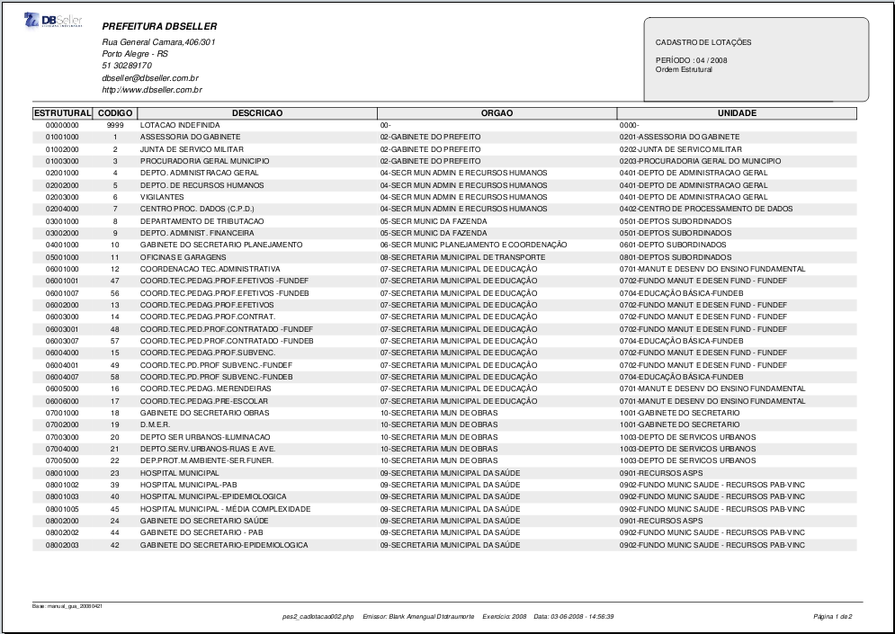
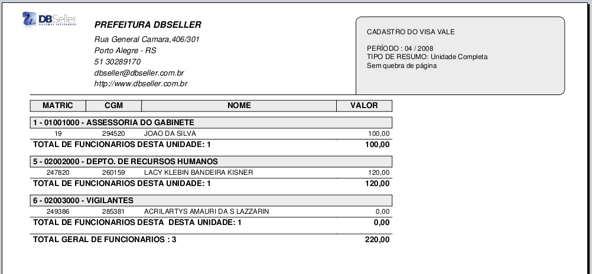
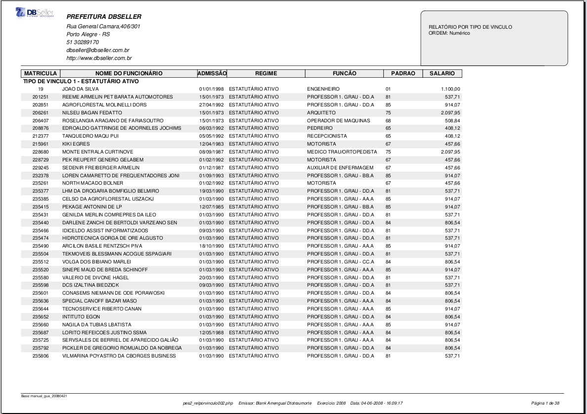
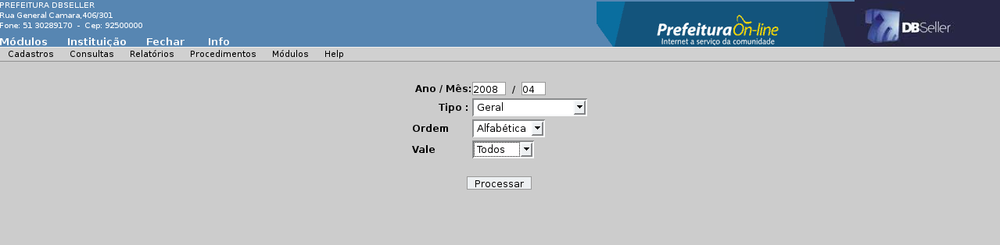

figura 25
Índice
Empresas de Vale Transporte 25
Ficha Financeira por Código 50
Servidores por Local de Trabalho 68
Servidores Admitidos/Demitidos 71
Servidores Vale Alimentação 73
Servidores por Tipo de Vínculo 77
Servidores por Cargo/Lotação/Secretaria 83
Servidores com Conta Bancária 86
Bases – Rubricas / Fórmulas 89
Relatório Sintético da Previdência 107
Contra-Cheques (Matricial) 109
Faixa pelo Bruto/Líquido/Descontos 112
Manutenção de Afastamentos 118
IPERGS – Manutenção de Parâmetros 127
Processa Valores do IPERGS 127
Manutenção de Vales Transporte 130
Desconto Externo de Previdência 137
Cadastro de Relacionamento 143
Lançar na Folha de Pagamento 145
Excluir na Folha de Pagamento 146
Comprovante de Rendimentos 153
Cancela Fechamento da Folha 161
Inicialização dos Vales Transporte 163
Fechamento da Complementar 167
Configuração de Matrículas 171
Cadastro de Causas de Rescisão 173
Gerar Solicitação de Compras 175
Excluir Solicitação de Compras 175
Emite Solicitação de Compras 176
Servidores com VT Integrado 177
Tipos de Vale Transporte Integrado 178
Módulo Pessoal
Este módulo tem por objetivo final permitir um controle efetivo dos dados dos servidores municipais vinculados a instituição e que possuem influência no histórico financeiro dos mesmos, integrando as informações cadastrais com o cálculo e permitindo a importação e exportação destes dados para diversos fins como empenhos, arquivos para pagamento via bancos e informações sociais.
Este Rotina destina-se ao cadastro dos cargos, criados por lei, para os servidores municipais, independentemente do regime a que estes estejam vinculados. O cargo é geralmente ligado ao vínculo de origem do servidor quando da contratação, diferente da função, cujo a aplicação destina-se ao controle dos casos de servidores que exercem temporariamente uma “função” com atribuições diferentes ao cargo de origem. Pode-se exemplificar com um caso de um servidor com cargo de Professor que exerce temporariamente a função de Diretor de Escola.
Segue orientação para o preenchimento dos campos conforme ilustrado na figura 01.
Cargo: Campo onde deve ser inserido o código que será utilizado para identificação do cargo, podendo ser uma seqüência numérica a escolha do usuário.
Descrição: Colocar a descrição do cargo, conforme definido na norma legal que o criou.
Vagas: Lançar o número de vagas criadas para o cargo correspondente, conforme definido na norma legal que o criou.
CBO: Lançar o código da classificação brasileira de ocupações para o cargo conforme tabela do Ministério do Trabalho. Link para acesso: http://www.mtecbo.gov.br/busca.asp.
Lei: Norma legal que cria ou regulamenta o cargo.
Classificação: Campo de opção livre, podendo ser destinado pelo usuário para qualquer fim desejado, como uma codificação interna.
Permite a alteração de qualquer campo sem restrição. Obs: A alteração do campo cargo implica necessariamente em atualização do cadastro dos servidores que o exercem, ou seja, a alteração da nomenclatura por exemplo, irá afetar todos os servidores cadastrados com o código do cargo alterado.
Permite a exclusão quando não houver vínculo com outro cadastro o sistema.
Esta rotina tem como objetivo principal o agrupamento dos servidores de uma determinada instituição e a sua vinculação a um órgão do orçamento. A sua descrição e estrutural são de livre escolha da área de pessoal, de uma maneira que atenda as suas necessidades organizacionais e permita que os valores pagos ou retidos dos servidores ligados a ela sejam creditados ou debitados corretamente no orçamento. Este vínculo permite a emissão de requisições de empenho com os valores já agrupados em seus recursos e elementos corretos facilitando o controle e diminuindo a probabilidade de erros na momento do Empenho.
Também possibilita a emissão de diversos relatórios agrupados por órgãos (só possível quando as lotações estão vinculadas aos órgãos do orçamento) e lotações facilitando a conferência dos dados pelo pessoal responsável.
Segue orientação para preenchimento dos dados conforme ilustrado nas figuras 02, 03, 04 e 06.
ABA LOTAÇÕES:
Código da Lotação: Gerado automaticamente pelo sistema.
Máscara: Mostra a máscara para o estrutural da lotação definida em Procedimentos>> Manutenção de Parâmetros>> Campo Código Estrutural da Lotação .
Estrutural da Lotação: Campo onde deve ser lançado o código estrutural da lotação.
Descrição:Campo destinado a descrição da lotação.
Código do Calendário: Lançar o código do calendário desejado diretamente ou pesquisando pelo link “Código do calendário”, (cadastrados previamente em Cadastros>> Calendários).
Analítica: Opção “Não”: inclui uma lotação onde não serão vinculados servidores, é uma lotação sintética e não terá nenhuma ligação com o orçamento. Tem uma finalidade estrutural, como em um organograma.
Opção “Sim”: Esta opção abre na tela os campos “Órgão” e “Unidade”, onde será definido a que órgão e unidade do orçamento esta lotação será vinculada. Só devem ser vinculados servidores a lotação for cadastrada com esta opção.
Ativo: Serve para ativar ou inativar uma lotação. As lotações inativas não serão visualizadas na emissão de relatórios ou nos demais cadastros no momento da pesquisa para inserção da mesma, como no caso do cadastro de servidores por exemplo. A digitação direta do código de uma lotação inativa continuará disponibilizada, podendo, por escolha do usuário, vincular um servidor a uma lotação inativa.
Órgão: Ao clicar no link Órgão o sistema irá abrir uma janela com os órgãos e unidades orçamentárias. Para escolher basta clicar em cima da opção desejada.
Unidade: O campo unidade já é preenchido quando é escolhida a opção no link Órgão, mas pode ser alterado ao acionar o link Unidade.
Código: Gerado automaticamente pelo sistema.
Código da Lotação: Mostra o código da lotação gerado pelo sistema.
Recurso:Abre uma janela listando os recursos cadastrados no orçamento.
Projetos / Atividades: Abre uma janela listando os projetos/atividades ligados ao recurso selecionado. Deve ser incluído apenas um projeto atividade para cada exercício.
Vínculo: Serve para indicar se a lotação criada é destinada para servidores ativos, inativos ou pensionistas.
Obs: O cadastro incorreto de um servidor em uma lotação cujo o vínculo indicado no cadastro de servidores difere do vínculo selecionado para a lotação acarretará problemas para a conferência em relatórios onde são selecionados filtros do orçamento, já que os valores de um relatório financeiro que não utiliza este filtro necessariamente apresentará valores diferentes nestes casos.
tela anterior a inclusão:
figura
03
tela posterior a inclusão
figura
04
Elementos Secundários: Ao acionar alterar, em um dos itens lançados, o sistema disponibilizará a opção “elementos secundários” (figura 05).
figura
05
Esta opção é utilizada quando o usuário necessita empenhar uma rubrica em um elemento de um recurso / projeto/ atividade específico, diferente da configuração original da lotação ou do elemento configurado para o código. Podemos exemplificar com o caso do salário família, que é pago em uma única rubrica para todos os servidores como recurso livre, mas que para os servidores FUNDEB, devem ser empenhados neste recurso.
Em elementos secundários, serão informados o recurso e o projeto atividade de onde será selecionado o “elemento novo”. Posteriormente será selecionado, no campo “Elemento principal”, o elemento que está indicado para o código da rubrica de salário família em Cadastro/ Tabelas/ Códigos. No campo “Elemento novo” será selecionado o elemento onde a rubrica deverá ser empenhada para o Projeto/Atividade escolhido para esta lotação. Pode-se ainda importar os elementos secundários definidos em uma outra lotação na opção “importar elementos”.
figura
06
Aba Lotações: Permite alterar os campos descrição, código do calendário, analítica, órgão e unidade
Aba Elementos: Permite a inclusão de novos recursos e projetos/atividades para uma lotação já existente.
Permite alterar os campos recurso, projetos/atividades, vínculo de qualquer item existente na lista de itens lançados.
Permite a exclusão de uma lotação quando esta não está ligada a nenhuma outra tabela do sistema. Para utilizar esta opção é necessário, antes de acessar a opção de exclusão, entrar em alteração, aba elementos e excluir os recursos e projetos/atividades cadastrados para a mesma, inclusive os secundários.
Este cadastro tem objetivo organizacional, criando referência dos locais de trabalho dos servidores municipais, o que traz como benefício, uma visão mais objetiva do quadro funcional. Podem ser utilizados como filtros de relatórios, facilitam a distribuição de itens (como cartões pontos, contra-cheques, vale transporte entre outros) e torna ágil a comunicação entre os órgãos da prefeitura e seus servidores. Segue orientação para preenchimento dos dados conforme ilustrado na figura 07:
Cód. Local: Gerado automaticamente pelo sistema
Máscara: Mostra a máscara para o estrutural da local de trabalho definido em Procedimentos>>Manutenção de Parâmetros>> Campo Código Estrutural do Local de Trabalho.
Estrutural da Local de Trabalho: Deve ser lançado o código estrutural do local de trabalho
Descrição: Campo destinado a descrição da local de trabalho.
figura
07
Permite alterar apenas a descrição do local de Trabalho. (Campo Descrição).
Permite a exclusão quando não houver vínculo com outro cadastro o sistema.
Destina-se ao cadastro de funções ocupadas temporariamente por um servidor que teve posse em outro cargo, por exemplo uma servidora que detém o cargo de professora e exerce temporariamente as funções do cargo de Diretora de Escola.
Código da função: Inserido automaticamente pelo sistema.
Descrição da função: Descrição de livre escolha do usuário.
figura
08
Permite apenas a alteração da descrição.
Permite a exclusão de funções não vinculadas em outras rotinas do sistema.
Destina-se a inclusão de vínculos, que funcionam como uma subdivisão do regime*. Pode-se criar vínculos para o regime estatutário por exemplo, como estatutários ativos, inativos, pensionistas etc. A função dos vínculos é alcançar melhor excelência na organização de servidores além de ser mais uma opção de filtro para relatórios e processamentos do sistema.
Os regimes citados são trabalhistas e não devem ser confundidos com regime previdenciário. Estão divididos da seguinte maneira no sistema:
Estatutário: Engloba os servidores regidos pelo regime jurídico único.
Celetista: Engloba os servidores regidos pela CLT.
Extra-Quadro: Engloba servidores regidos pelo RJU mas que não possuem vínculo permanente com empregador, especificamente os servidores cargo em comissão e os contrato emergenciais.
Código do Vínculo: Código gerado automaticamente pelo sistema.
Descrição: Descrição do novo vínculo, de livre escolha do usuário. Ex: CLT em extinção.
Regime: Neste campo o usuário fará a opção pelo regime ao qual o vínculo criado será ligado. Para melhor compreensão, no caso do exemplo da figura 09, a escolha seria o regime CLT.
Situação: Este campo destina-se a selecionar o “tipo de vínculo” (situação funcional do servidor junto a prefeitura divididos entre ativos, inativos e pensionistas).
figura
09
É permitida a alteração dos campos descrição, regime e vínculo.
Permite a exclusão quando não houver vínculo com outro cadastro o sistema.
Destina-se a vinculação das categorias definidas na SEFIP aos regimes da prefeitura. Ex: categoria 12 – Agente Público.
Código: Seqüência numérica de controle interno do sistema controlado pelo usuário na hora do cadastramento.
Código do Regime do Func.: Campo para seleção do regime em que será vinculada o tipo de contrato (categoria SEFIP).
Tipo de contrato: Código da categoria conforme manual da SEFIP.
Descrição do Tipo: Descrição da categoria conforme manual da SEFIP.
figura
10
Permite a alteração de todos os campos.
Permite a exclusão quando não houver vínculo com outro cadastro o sistema.
Destina-se a inclusão dos vales-transporte utilizados, em um itinerário específico, que serão vinculados aos servidores para controle de valor e percentual a serem descontados dos beneficiários e o controle para previsão de unidades a serem adquiridas pela instituição.
Ano / Mês : Ano e mês da inclusão do vale transporte.
Código: De livre escolha do usuário, será utilizado como referência nos cadastros.
Descrição: Descrição do vale, por exemplo, Trensurb, integração etc.
Valor: Valor unitário do vale transporte.
Percentual: Percentual a ser descontado do servidor.
Empresa: Lançar o código da empresa ou clicar no link para pesquisar a empresa que cumpre o itinerário, já previamente cadastrado em Cadastro/ Tabelas/ Empresas de Vale Transporte.
figura
11
Permite a alteração de todos os campos. No caso do campo “código”, o sistema permitirá a alteração apenas se este vale não tiver nenhum servidor ligado a ele.
Permite a exclusão quando não houver vínculo com outro cadastro o sistema.
Este cadastro é destinado ao cadastro dos padrões criados em lei que serão vinculados a um servidor. O cadastro de padrões pode ter um valor fixo, uma fórmula e um valor mínimo.
Código do Regime: Input para escolha do regime ao qual o padrão será vinculado. Deve ser incluso um padrão para cada regime, mesmo quando estes forem idênticos, pois o sistema não permitirá, no cadastro de servidores, a inclusão de um padrão não definido para o regime a qual o servidor está vinculado.
Descrição do Padrão: Onde deverá ser descrita a descrição (nomenclatura) do padrão conforme definido na norma que o criou.
Código de Identificação Padrão: Este campo aceita código é alfa-numérico, de identificação, de livre escolha do usuário.
Tipo: Input para destinado para identificar se o padrão é definido para mensalistas (opção mês) ou horistas (opção horas).
Horas Semanais: Campo destinado ao preenchimento (opcional) do número de horas semanais a serem cumpridas pelos servidores que são vinculados a este padrão.
Horas Mensais: Campo destinado ao preenchimento (opcional) do número de horas mensais a serem cumpridas pelos servidores que são vinculados a este padrão.
Obs: Existe no cadastro de servidores um campo destinado ao preenchimento do nº de horas mensais para aquele servidor. No momento do cálculo, o sistema dividirá o valor do padrão pelo nº de horas mensais definidas no cadastro do padrão e multiplicará pelo nº de horas mensais do cadastro do servidor. Portanto, se as quantidades diferirem, os valores também diferirão, para um valor maior ou menor de acordo com a definição de horas no cadastro do servidor.
Ex: número de horas mensais do cadastro do padrão = 200 horas
valor do padrão = R$ 1000,00
número de horas mensais do cadastro do servidor = 100 horas
Cálculo: (v/p=vu*s) -> “v”1000,00/* “p”200 = “vu”50* “s”100 = 500,00 “vs”
Portanto, o salário calculado do servidor será igual a R$ 500,00 “vs”
Siglas: p -> nº de horas no cadastro de padrões
s -> nº de horas mensais no cadastro do servidor
v -> valor do padrão no cadastro de padrões
vu -> valor da divisão do valor do padrão dividido pelo nº de horas do padrão
vs -> valor do cálculo no salário
Fórmula: Este campo é destinado a configuração de uma fórmula a ser aplicada para o cálculo do valor do padrão. Este campo aceita apenas diversos (link diversos). Como exemplo, poderíamos citar padrões que tem como base de cálculo o valor do salário mínimo acrescido de um percentual de 50%, a fórmula seria D???*0.5, onde “D???” seria o diverso criado com o valor do salário mínimo. Este procedimento é vantajoso na medida em que, atualizando um diverso, o sistema fará a alteração de todos os padrões que o possuam em sua fórmula.
Valor do Padrão: Campo destinado ao valor do padrão definido na norma que o criou.
Valor Mínimo: Também permite apenas a inserção de Diversos, e como o nome já diz, se destina a controlar um valor mínimo para o padrão. Este procedimento permite ao sistema realizar um controle para que os servidores vinculados a este padrão não percebam um valor menor que o definido no diverso lançado.
figura
12
Os campos “Código do Regime” e “Código de Identificação Padrão não podem ser alterados”. Todos os demais campos podem ser alterados, mas, após a alteração, é necessário efetuar o recalculo da folha para que os valores sejam atualizados na ficha financeira dos servidores vinculados a este padrão.
Permite a exclusão quando não houver vínculo com outro cadastro o sistema.
Este cadastro é destinado ao cadastro dos progressões.
A progressão é um valor calculado através de um índice aplicado sobre o valor base de um padrão quando este atinge um tempo transcorrido, normalmente definido em lei, que o sistema calcula utilizando como base número de meses. Esta opção não foi projetada para controlar progressões com avaliações diferentes das de um tempo pré-estabelecido, como por exemplo, progressão por melhora de nível acadêmico, progressão por idade etc.
Para o cálculo o sistema irá verificar se o padrão ao qual o servidor possui progressão vinculada e data de progressão em Cadastro/ Cadastro de tabelas/ Cadastro de Servidores/ Aba movimentações preenchida.
Código do Regime do Func.: Campo destinado a informação do regime para filtrar a pesquisa do sistema nos padrões cadastrados.
Código do Padrão do Func.: Campo destinado a escolha do padrão a qual a progressão será vinculada. Poderá ser lançado o código no campo destinado ou feita uma pesquisa pelo link, só serão validados padrões vinculados ao regime escolhido.
Descrição da Progressão: Campo destinado a descrição da progressão, o sistema sugere o mesmo nome do padrão, mas este pode ser alterado pelo usuário.
Meses para Cálculo Progressão: Neste campo deve ser informado o nº de meses em que o sistema aplicará a progressão para o padrão vinculado. O sistema efetuará a contagem dos meses a partir da data da progressão informada no cadastro de servidores ou, se este estiver em branco, pela data de admissão.
Percentual da Faixa de Progressão: Percentual a ser aplicado para cada “nº de meses” definido no cadastro da progressão.
Valor: Neste campo, deve ser informado o valor da progressão com a alíquota aplicada sobre o padrão de origem.
figura
13
Os campos “Código do Regime do Func.” e “Código do Padrão do Func. não podem ser alterados”. Todos os demais campos podem ser alterados, mas, com exceção a alteração da descrição da progressão, após a alteração dos demais campos, é necessário efetuar o recalculo da folha para que sejam atualizados os valores da ficha financeira dos servidores vinculados a esta progressão.
Permite a exclusão quando não houver vínculo com outro cadastro o sistema.
Este cadastro destina-se a manutenção dos códigos, também conhecido como “rubricas” ou “variáveis”, utilizados para o cálculo dos valores a serem pagos ou descontados dos servidores. Neste cadastro é definido o comportamento de cada código, com definições como se será um provento ou um desconto, se será fixa ou variável, se entrará nas médias para férias e 13º salário, suas fórmulas entre outras definições.
ABA RUBRICAS:
Código da Rubrica: Campo destinado a inclusão do código da rubrica, que deve conter necessariamente 04 dígitos, sendo que os códigos entre 0001 e 1999 são reservados para pagamento de salário.
As rubricas entre 2000 e 3999 são reservadas pra férias, entre 4000 e 5999 para 13º salário e 6000 e 7999 para pagamento de aviso prévio em rescisão. As rubricas entre 2000 e 7999 não devem ser inseridas diretamente na inclusão, pois são geradas automaticamente pelo sistema quando vinculadas a uma rubrica de salário, conforme será explicado abaixo. As rubricas iniciadas em “R” maiúsculo, são rubricas automáticas do sistema, já criadas previamente e podem sofrer a manutenção de alguns dados.
Descrição do Código: Campo destinado a descrição do código, como aparecerá no comprovante de pagamento entregue aos servidores e demais relatórios.
Qtda ou Valor para Inicializar: Este campo não pode ficar em branco, no entanto, aceita quantidade “0”.
As quantidades diferentes de “0” justificam-se somente em casos de rubricas que possuem fórmula são configuradas com os tipos de média 3, 4 ou 7, onde o sistema irá verificar se a ocorrência do código em determinados meses de um período aquisitivo de férias ou para o 13º salário devem ou não serem levados em conta para inserção nos respectivos pontos de pagamento, casos em que é necessário a ocorrência do código em pelo menos a metade da “quantidade a inicializar” para que este para que este seja levado em conta para pagamento de férias e/ou 13º. Do mesmo modo quando, em determinados movimentos do período de avaliação, forem incluídas progressivamente uma vez e meia a quantidade lançada no cadastro de códigos, o sistema irá dobrar a quantidade nos pontos de 13º salário e férias. Segue exemplo:
Campo preenchido com a quantidade 30 no cadastro de códigos para as rubricas dos tipo 3,4 e 7 para os pontos de 13º salário e férias:
quantidade inclusa entre 01 e 14-> o sistema irá desconsiderar o código para avaliação no movimento.
quantidade inclusa entre 15 e 44-> será lançado a quantidade 30 nos pontos respectivos.
quantidade inclusa entre 45 e 74-> será lançado a quantidade 30 nos pontos respectivos e assim progressivamente.
Provento S/N: Campo onde define-se se a rubrica é um provento, no caso da opção “sim” ou um desconto no caso de “não”.
Tipo de Inicialização: Existem neste campo duas opções.
- Fixa: São os códigos que compõe o cálculo de salário de um servidor, sem final previsto de ocorrências e que se repetem em todas as movimentações em sua quantidade ou valor. Estes códigos são mantidos quando é feita a Inicialização do Ponto (vide tópico que trata esta rotina) desde que cadastradas no ponto fixo.
- Variável: São que não se incluem nesta característica, como o caso dos códigos de hora-extras, cujo a ocorrência depende da movimentação de um servidor. São excluídos dos pontos de salário quando é feita a inicialização dos pontos.
Obs: A rubricas que utilizarem “data limite” devem ser inclusas obrigatoriamente como variáveis, para que o sistema execute a exclusão da mesma do ponto fixo quando o período de ocorrência for encerrado.
Observação: Campo onde é informado a mensagem que o sistema exibe na inclusão do código no ponto, como por exemplo, “lançar a quantidade em dias”.
Ativo: Serve para ativar ou inativar um código. Existirão, na emissão de relatórios que tem relação com este item e na manutenção dos pontos, um filtro que definirá se os códigos inativos serão ou não visualizados para seleção.
Média p/ Férias: Onde é escolhido como este código deve ser avaliado para pagamento e férias. São gerados códigos relacionados com uma numeração acrescida 2000 no número inicial do código original, por exemplo, se o código incluso tiver a numeração “0001” serão acrescidos 2000 ao número inicial, ou seja, 2000+0001 = 2001 portanto o código para férias será “2001”.
Média p/ 13º salário: Onde é escolhido como este código deve ser avaliado para pagamento no 13º salário. São gerados códigos relacionados a este com uma numeração acrescida de 4 no número inicial do código original, por exemplo, se o código incluso tiver a numeração “0001” serão acrescidos 4 ao número inicial, ou seja, 4+0 = 4 portanto o código para o 13º salário será “4001”.
Código do Desdobramento: Este campo é destinado para a definição do desdobramento de despesa a qual o código deve ser empenhado, utilizando o link ou lançando o código reduzido no campo destinado da dotação definido no módulo orçamento.
Usa Data Limite: Se a opção for “sim”, o sistema irá tornar obrigatório o lançamento de uma data limite para o código quando da inserção dele no ponto fixo. Observação: a rubrica que utiliza data limite deve ser definida como variável e deve ser lançada tanto no ponto fixo, porque se comportará como um código fixo, como no ponto de salário para o cálculo efetivo até a data o final estabelecida no ponto quando o sistema não mais fará o repasse para o ponto de salário.
Código Rescisão: Se a opção for “sim”, o sistema criará um código com somando 6 ao ao número inicial do código original. Este códigos são destinados para o pagamento dos valores de aviso prévio das causas de rescisão que sejam configuradas com esta opção.
Calcula Prestações: Se a opção neste campo for “sim”, o sistema irá diminuir a quantidade de parcelas, para um código que possua data limite, a cada movimento transcorrido, durante a ocorrência do mesmo. No caso da opção “não” o sistema irá respeitar a data limite mas manterá a quantidade informada inicialmente no ponto fixo do servidor, em todos os movimentos em que o código tiver ocorrência.
Proporção para inativos: Se a opção for sim, o sistema irá levar em conta o percentual informado na aba movimentações do servidor inativo ou pensionista no cadastro de servidores para proporcionalização dos valores ou quantidade dos códigos existentes.
Proporcionaliza no Afastamento: Se a opção for “sim”, o sistema irá proporcionar as quantidades ou valores nos casos de afastamento. Se a opção for não, o sistema irá manter integrais as quantidades ou valores informados no ponto independentemente do número de dias em que o servidor estiver afastado dentro da competência. Este campo também define se os valores gerados para este código são (no caso da opção “sim”) agrupados nos valores na rubrica de afastamento, definidos nos parâmetros do sistema, como no caso de licença maternidade.
Proporcionaliza nas Médias: Define se as quantidades/valores devem ou não ser proporcionalizados nos pontos de 13° salário, férias e rescisão. Também define se as rubricas de desconto existentes no ponto fixo do servidor devem ser mantidas com seu código original nos pontos de salário/complementar quando o servidor possuir férias integrais dentro de um movimento, sendo que, se a opção for “Não”, o sistema manterá as rubricas e se for “Sim” a rubrica será excluída do ponto.
Fórmula: Campo destinado a criação de fórmulas de cálculo de um código onde podem ser utilizados funções do sistema, bases e diversos aplicadas operações matemáticas básicas. Esta fórmula atinge o cálculo de todos os servidores ou, quando for o caso, os que não estiverem enquadrados nas condições das fórmulas 2 e 3
Condição da Fórmula 2: Campo onde é criada a condição/seleção de um grupo de servidores que possuem uma característica comum para a aplicação da fórmula 2.
Fórmula 2: Destina-se a criação da fórmula a ser aplicada para os servidores enquadrados na “condição da fórmula 2”.
Condição da Fórmula 3: Campo onde é criada a condição/seleção de um grupo de servidores que possuem uma característica comum para a aplicação da fórmula 3.
Fórmula 3: Destina-se a criação da fórmula a ser aplicada para os servidores enquadrados na “condição da fórmula 3”.
Fórmula Quantidade: Destina-se a criação de uma fórmula de uma quantidade a ser lançada para o código na hora do cálculo, que pode ser ou não diferente do definido no campo “Qtda ou Valor para Inicializar”. Como exemplo pode-se citar uma rubrica cujo a quantidade seja por hora, definida com a quantidade 220, e a quantidade a ser lançada no momento do cálculo seja o da carga horária subtraídas as horas falta.
Opção Importar: Existe no rodapé da página a tecla importar. Esta opção serve para importar as características de um código já existente, sendo necessário apenas o preenchimento do campo destinado ao código da rubrica e a alteração conforme necessidade de outros campos.
Obs: Quando houverem rubricas vinculadas 2000 (férias), 4000 (13º salário) e 6000 (rescisão/aviso prévio), estas deverão ser revisadas com ênfase na marcação das bases de incidência e na fórmula quando esta possuir bases.
figura
14
ABA BASES:
Destina-se a seleção das bases cujo a rubrica criada terá incidência, seja para o cálculo de outras rubricas ou na geração de arquivos como a RAIS, DIRF etc. Esta rubrica terá influência no cálculo de toda a rubrica que tiver a base selecionada lançada no campo fórmula, portanto, deve-se ter atenção quando trata-se destes casos, visto que uma incidência incorreta pode causar uma recursividade.
Um exemplo prático disto pode ser simulado quando, por exemplo, lançamos na fórmula de um adicional qualquer, que aqui será chamado de “X”, o valor calculado de insalubridade e, na fórmula da insalubridade incluímos uma base onde existe a incidência do adicional X.
Cada vez que o sistema tentar calcular uma das rubricas não conseguirá concluir o mesmo pois, como o cálculo de um depende do cálculo do outro o sistema abortará o procedimento pois nunca terá o valor finalizado do cálculo dos dois códigos.
O quadro a esquerda da tela mostra as bases não selecionadas e o da direita as selecionadas. Para mover as bases de um quadro ao outro pode-se marcar a rubrica e acionar > (move do quadro da esquerda para a direita < (move do quadro da direita para esquerda) ou clicar com o mouse duas vezes sobre a base escolhida. Utilizando as opções >> ou << todas as bases serão movidas de uma só vez.
Visualize o cadastro na figura 15
figura
15
Permite a alteração de quaisquer campos com exceção do campo “Código da Rubrica”.
A não ser por razão de erro na grafia, não devem ser feitas alterações na descrição de um código. Uma vez alterado a descrição, todos os relatórios que forem emitidos trarão a descrição atual da rubrica, podendo causar uma informação incorreta das verbas recebidas por um servidor em uma determinada época.
Permite a exclusão quando não houver vínculo com outro cadastro o sistema.
Este cadastro destina-se a manutenção das bases. Bases são variáveis do sistema, sempre iniciadas com o caracter “B” mais três caracteres numéricos cujo o resultado final é composto pela soma dos valores calculados das rubricas nela assinaladas.
Bases com numeração entre B800 e B999 são de uso interno do sistema.
Como um exemplo típico de uma base, podemos utilizar os valores incidentes para a hora extra, onde na soma dos valores das rubricas de proventos marcadas seriam aplicadas a alíquota de acordo com a fórmula. Neste caso a fórmula seria a base dividida pelo nº de horas mensais multiplicada pelo percentual da hora extra.
ABA BASES:
Descrição da Base: Campo destinado a nomenclatura a ser utilizada para a base.
Cálculo pela Quantidade (s/n): Define se para efeito de cálculo o sistema utilizará as quantidades (opção “s”) ou os valores (“n”) das rubricas marcadas na base.
Pesquisa Valores do Mês Anterior: Define se os valores/quantidades pesquisadas se referem ao mês atual do movimento ou aos do movimento imediatamente anterior.
Calcular pelo Ponto Fixo: Define se os valores que devem ser levados em conta no cálculo da base são relativos ao cálculo dos pontos Fixo (opção “sim”) ou demais pontos (opção “não”).
figura
16
ABA RUBRICAS:
Na inclusão, esta aba é habilitada após acionado o botão “Incluir”. Na alteração, esta tela já é habilitada, basta clicar com o mouse sobre a mesma. Destina-se a seleção de rubricas que comporão o valor calculado da base sempre que o cálculo possuir as rubricas grifadas. Os itens marcados serão destacados em amarelo conforme a figura 17 abaixo,
Obs: Para que seja efetivamente concluído o processo da aba, é necessário acionar o botão Cadastrar no final da página.
figura
17
Permite, com exceção o campo destinado ao código da base, a alteração de todos os campos.
Permite a exclusão quando não houver vínculo com outro cadastro o sistema.
Diversos são variáveis o sistema onde são lançados valores fixos para utilização em fórmulas de códigos, fórmulas de pensões alimentícias, condições especiais, limitadores de valores, parâmetros para cálculo no sistema entre outros. Diversos como D000 e a partir e D901 são utilizados pelo cálculo com funções específicas mas a sua manutenção é de responsabilidade do usuário final.
Um exemplo típico da utilização de um diverso é o lançamento do valor do salário mínimo para utilização do mesmo na forma de cálculo da insalubridade dos servidores celetistas, independente de qual padrão o mesmo pertença.
Também é utilizado para outras funções, como a determinação da idade máxima de salário família, as faixas para pagamento do mesmo, valor de abatimento por dependente para o cálculo do IRRF entre outras finalidades.
Ano / Mês : Indica o ano/mês da inclusão.
Código: Destina-se a inclusão do código do diverso, deve ser iniciado com a letra “D”, como no exemplo da figura 18.
Descrição: Destina-se a inserção da nomenclatura que será utilizada para o diverso.
Valor: Destina-se ao lançamento do valor definido para o diverso.
figura
18
Permite a alteração de todos os campos com exceção do código.
Permite a exclusão quando não houver vínculo com outro cadastro o sistema.
Este cadastro tem como finalidade a manutenção do cadastro de raças a serem vinculadas no cadastro do servidor, visando informação na RAIS entre outros.
Raça do Servidor: Lançar um código para a raça respeitando a tabela informada pela RAIS.
Descrição da Raça: Lançar a descrição respeitando a descrição informada na RAIS.
figura
19
Permite somente a alteração do campo “ Descrição da Raça”.
Permite a exclusão quando não houver vínculo com outro cadastro o sistema.
Este cadastro destina-se a manutenção das empresas cujo os servidores vinculados a Entidade utilizam o vale-transporte. Será utilizado posteriormente no cadastro dos vales transporte.
Código: Campo para lançamento do código numérico de livre escolha.
Descrição: Campo para lançamento do “nome” da empresa a qual serão vinculados os vales transporte.
figura
20
Permite somente a alteração do campo “ Descrição”.
Permite a exclusão quando não houver vínculo com outro cadastro o sistema.
Esta rotina trata da manutenção das tabelas de IRRF e Previdência, oficial ou privada, vinculadas no cadastro dos servidores.
Quanto a tabela de IRRF o sistema mantém a tabela atual e a tabela do mês anterior. No cálculo, será sempre utilizado a tabela do mês atual, sendo que a tabela do mês anterior é mantida apenas a título de consulta.
Nos casos da previdência, é permitido simultaneamente a manutenção de até 4 tabelas para atender as possíveis disparidades características de acordo com o regime trabalhista do servidor por exemplo. Abaixo, na figura 21, podemos visualizar a primeira tela onde pode ser selecionado a tabela a qual será feita a manutenção.
figura
21
Abaixo serão repassados os campos da tela de cadastro, que se diferenciam para as manutenções de IRRF quanto das Previdências. As diferenças se concentram nas finalidade de alguns destes campos de acordo com o tipo de manutenção, como por exemplo o acréscimo do campo “Deduzir”. A tela da figura 23 trata do cadastro de IRRF.
Valor Inicial da Faixa: Campo onde é lançado o valor inicial de uma faixa que será vinculada a uma alíquota de acordo com a tabela do IRRF.
Valor Final da Faixa: Campo onde é lançado o valor final da faixa.
Percentual: Campo onde é lançado a alíquota a ser aplicada para a faixa, de acordo com a tabela do IRRF.
Deduzir: Onde deve ser lançado o valor da dedução do cálculo de IRRF de acordo com a tabela de IRRF disponível no site da receita federal.
Na tela de IRRF, ainda poderá ser visualizado as faixas lançadas como demonstrado na figura 22.
figura
22
Abaixo segue a descrição dos campos da tela de manutenção da previdência.
Valor Inicial da Faixa: Campo onde é lançado o valor inicial de uma faixa que será vinculada a uma alíquota de acordo com a tabela da Previdência cadastrada.
Valor Final da Faixa: Campo onde é lançado o valor final da faixa.
Percentual: Campo onde é lançado a alíquota a ser aplicada para a faixa, de acordo com a tabela da Previdência cadastrada.
Deduzir: Campo desabilitado.
Rubrica Salário Maternidade: Campo onde é lançada a rubrica de licença maternidade referente a previdência, onde devem ser agrupados os valores calculados para a servidora que se encontra em benefício.
Rubrica Licença Saúde: Campo onde deve ser lançada a rubrica de licença saúde. O sistema agrupa os valores nesta rubrica caso a entidade faça diretamente o pagamento dos servidores em benefício, normalmente vinculados a uma previdência municipal.
Rubrica Acidente de Trabalho: Campo onde deve ser lançada a rubrica de Acidente de Trabalho. Do mesmo modo da rubrica de licença saúde, o sistema agrupa os valores nesta rubrica caso a entidade faça diretamente o pagamento dos servidores em benefício, normalmente vinculados a uma previdência municipal.
Base Previdência Férias: Informar a base onde estão marcadas todas as rubricas que devem ser agrupadas na rubrica especial de férias cadastrada em Procedimentos/ Manutenção de Parâmetros/ Rubricas Especiais. Todas as rubricas não marcadas nesta base serão repassadas para o cálculo de salário/complementar com o código original gerado dentro do cálculo das férias.
Base Previdência Férias (Total): Informar a base onde estão marcadas todas as rubricas incidentes para o cálculo da previdência.
Percentual Previdência Patronal: Lançar a alíquota referente a tributação patronal definida pela previdência somando-se a alíquota RAT.
Teto para Inativos: Valor referente ao teto dos inativos vinculados a uma previdência, cujo a diferença entre o valor cadastrado neste campo e o valor da base de previdência do cálculo do inativo serão aplicadas as alíquotas conforme a faixa.
figura
23
Esta rotina destina-se a manutenção dos dados funcionais do servidor, utilizados em relatórios tanto em filtros quanto nos dados emitidos, cálculo financeiro, condições especiais entre outros.
ABA DADOS PESSOAIS
Os campos desta aba são aqueles que teoricamente não serão alterados durante a vida funcional do servidor. Por este motivo, o sistema não guarda o histórico dos dados alterados nesta aba. Os dados inseridos aqui são aqueles de nível contratual, fiéis a origem do vínculo. Os dados, como funções desenvolvidas com atribuições diferentes ao cargo de origem, como no caso de professores que exercem temporariamente o cargo de diretor de escola, ou um servidor concursado que ocupa do mesmo modo o cargo de diretor tem estas informações lançadas na aba movimentação como veremos adiante.
Sub-item Dados Pessoais
Matrícula do funcionário: Campo numérico onde é informada a matrícula do servidor. O sistema pode automatizar este controle se for preenchido em Procedimentos/ Manutenção de Parâmetros/ Configuração de Matrículas o campo “Última Matrícula”. Também existe no mesmo item de menu a opção para concatenar ou não o dígito que é gerado pelo sistema através do campo Controle “Unificado da Matrícula”. Vide maiores detalhes na descrição dos campos neste manual.
Sexo:O sistema traz estes dados de acordo com a informação do cadastro no CGM.
Numcgm: Neste campo o usuário poderá ser lançado diretamente o número do cgm ou acionando a tela de pesquisa, conforme a figura 24. A pesquisa pode ser feita através do nome ou CPF. O usuário deve ter o cuidado de não cadastrar como funcionário uma pessoa jurídica.
figura
24
Nos casos em que o novo servidor não possui cadastro no CGM, o usuário poderá fazê-lo sem sair da tela de inclusão de servidores acionando a opção “Incluir Novo CGM”. Esta tela disponibilizará os campos cujo a opção CPF é a que deve ser preenchida, com o número de registro do servidor a ser incluído. Salientamos que não deve ser utilizada a opção CNPJ. Vide figura 25.
figura
25
Confirmando os dados da pesquisa, o sistema abrirá uma tela par preenchimento dos dados conforme a figura 26. As instruções para preenchimento desta tela se encontram no Manual do Protocolo. Caso não possua este manual entre em contato com o responsável pelo setor de informática da Instituição.

figura
26
Raça/Cor: Destina-se a escolha de acordo com as opções definidas no manual da RAIS.
Grau de Instrução: Seleção destinada ao grau do servidor quanto ao currículo escolar.
Estado Civil: Informar o estado civil do servidor.
Nacionalidade: Informar o país de nascimento do servidor.
Ano de Chegada: Informar o ano de chegada ao Brasil quando o servidor for estrangeiro ou naturalizado.
Naturalidade: Informar a cidade onde o servidor nasceu.
Nascimento: Informar a data de nascimento do servidor.
Sub-item Dados Admissionais
Foto: Campo onde é gravado no servidor o arquivo referente a foto digitalizada do servidor. Para a inserção da mesma no banco de dados o usuário deve clicar com o mouse na palavra Foto e indicar o arquivo gravado em sua máquina, na rede ou em qualquer mídia que o micro onde esteja sendo feita a manutenção tenha acesso.
Cargo: Informar o cargo que originou o vínculo.
Admissão: Informar a data de admissão no cargo de origem.
Tipo de Admissão: Informar o tipo de admissão ou o tipo de cedência entre instituições.
Adiantamento: Definir se o servidor tem ou não direito a adiantamento quinzenal.
Nrº Ponto: Informar o número do cartão ponto.
Opção Livre: Campo criado para livre utilização pelo cliente para ser utilizado em relatórios, condições especiais entre outros.
Opção Livre: Campo para informação de uma data de livre escolha de usuário com controle e finalidades diversas.
Triênio: Campo onde deve ser informada a data de início da contagem do tempo para o triênio quando esta diferir da data de admissão.
Progressão: Campo onde deve ser informada a data de início da contagem do tempo para a progressão e contagem de tempo de serviço quando esta diferir da data de admissão.
Opção do FGTS: Informar a data de opção do FGTS para os servidores celetistas.
Banco FGTS: Banco onde o servidor possui a conta do FGTS.
Agência do FGTS: Agência referente a conta do servidor.
Dígito da Agência do FGTS: Informar o dígito da agência.
Conta do FGTS: Conta do servidor junto ao FGTS.
Dígito da Conta do FGTS: Incluir o dígito da conta.
figura
27
Opção Importar
Esta opção existe para facilitar a inclusão daqueles servidores que fazem ou já fizeram parte do quadro funcional da Instituição, permitindo importar todos os dados relativos aos contratos anteriores, em atividade ou não, vinculados ao cgm escolhido. Não esquecer de acionar a opção incluir nas abas mencionadas acima.
figura
28
ABA DOCUMENTOS
Título: Informar o número do título de eleitor do servidor.
Zona: Informar a zona do título de eleitor.
Seção: Informar a seção do título de eleitor.
Certificado: Informar o número do certificado de reservista para os servidores cujo a informação é necessária.
Categoria: Informar a categoria do certificado.
CTPS: Informar o número da Carteira de Trabalho e Previdência Social do servidor.
Série: Informar a série da CTPS.
Dígito: Informar o dígito da CTPS.
UF da CTPS: Informar a unidade da Federação onde o documento foi emitido.
PIS/PASEP: Informar o número do PIS ou PASEP do servidor. Deve ser um número válido pois o sistema faz a consistência dos dados inseridos no campo,
CNH: Informar o número da carteira de motorista do servidor.
Categoria: Informar a categoria da CNH
Validade: Informar a data de término da validade da CNH.
figura
29
ABA MOVIMENTAÇÕES
Esta aba é destinada para o controle das informações contratuais do servidor que possuem variações durante a vida funcional. O sistema grava estas informações em cada movimento da folha, o que significa, que elas podem diferir em cada um deles e portanto, refletir de maneira diferente nos cálculos efetuados, relatórios emitidos entre outros .
Código da Lotação: Informar ou pesquisar pelo link a lotação onde o servidor será vinculado.
Função: Quando for o caso, informar a função que o servidor exerce. A função é como um cargo que o servidor concursado exerce e que difere das atribuições do cargo que originou o vínculo, como por exemplo, um professor concursado que está exercendo temporariamente a função (“cargo”) de diretor ou secretário municipal de Educação.
Regime: Regime trabalhista do vínculo de origem.
Tipo de Contrato: Informar o tipo de contrato (subdivisão do regime trabalhista conforme SEFIP).
Padrão: Incluir o padrão do servidor quando ele se enquadrar nesta opção.
Vínculo: Informar o vínculo do servidor conforme informação contida no manual da RAIS.
Tipo de Salário: Informar o tipo de salário do servidor. Refere-se especificamente ao item que define se o servidor é mensalista, diarista, horista etc.
Salário: Campo destinado a informação do valor do salário quando o vencimento do servidor não se enquadra a um padrão definido no sistema. Caso sejam informados padrão e salário, o sistema irá levar em consideração apenas a informação do campo “Salário”.
Tipo de Folha: Informar o intervalo de pagamento do servidor, mensal, quinzenal ou semanal. Este campo NÃO se refere ao adiantamento de salário.
Pagamento: Informar como é efetuado o pagamento dos vencimentos do servidor, como em conta-corrente, dinheiro, cheque etc.
Tab. Previdência: Informar a tabela de previdência referente ao vínculo do servidor.
Horas Mensais: Informar o número de hora mensais conforme contrato que o servidor deve cumprir mensalmente.
Horas Semanais: Informar o número de horas semanais referentes ao contrato proporcionais ao número de horas mensais, levando em conta para o cálculo da divisão sempre o número de 05 semanas para o mês.
Agentes Nocivos: Informar, de acordo com o tipo, se o servidor está, esteve, nunca esteve ou já esteve e atualmente não se encontra exposto a agentes nocivos a saúde. Em caso de dúvidas verificar a tabela de Classificação dos Agentes Nocivos (Anexo IV do Regulamento da Previdência Social, aprovado pelo Decreto n° 3.048/99 e alterações posteriores), sendo que para o enquadramento, se exposto, é necessário que tenha sido realizado uma perícia por parte da previdência.
Proporção Inativo: Este campo só é habilitado para lançamento da porcentagem quando o vínculo escolhido para o contrato tem a situação, em seu cadastro, informada como inativo ou pensionista. A sua função é de proporcionalizar, no momento do cálculo, os valores das rubricas que possuirem no cadastro de códigos a opção “Sim” no campo “proporção para inativos”.
Código do Banco: Código do Banco de acordo com o registro do FEBRABAN onde será depositado, nos casos dos servidores definidos para depósito bancário, os valores relativos ao pagamento do mesmo.
Agência: Número da agência onde o servidor possui conta.
DV agência: Dígito verificador da agência.
Conta: Conta para depósito do servidor.
DV conta: Dígito verificador da conta.
Data da Rescisão: Data da rescisão do contrato. Esta data pode ser lançada diretamente no cadastro de servidores. Caso a opção utilizada seja a rotina em manutenção de rescisão no menu “Procedimentos”, onde o sistema gera o ponto para cálculo, os dados deste campo bem como os de “causa da rescisão”, “sub causa de rescisão”, “tipo de aviso”, e “data de aviso prévio” serão lançados automaticamente.
Causa da Rescisão: Causa da rescisão escolhida para o contrato levando em consideração o regime de acordo com as definições de movimentação da SEFIP.
Sub Causa de Rescisão: Sub causa informada configurada para a causa em Procedimentos/ Manutenção de Parâmetros/ Cadastro de Causa de Rescisão.
Tipo de Aviso: Informar se houve o aviso e caso tenha existido se ele foi trabalhado ou indenizado. Esta informação é vinculada ao cadastro da sub causa.
Data de Aviso Prévio: Data o início do aviso prévio.
figura
30
ABA DEPENDENTES
Esta aba destina-se a manter as informações e a aplicação de suas características para os cálculo de IRRF e Previdência.
Nome do Dependente: Informar o nome do dependente de acordo com o documento ou certidão de nascimento.
Data de Nascimento: Informar a data de nascimento do dependente.
Parentesco: Informar o parentesco do dependente com o servidor.
Salário Família: Enquadrar o dependente para pagamento do salário família, de acordo com a legislação previdenciária, entre as opções “Cálculo” (onde o sistema controla o o pagamento pela idade limite estipulada no cadastro de diversos), “Sempre Dependente” e “Não Dependente”.
IRF: Informar a situação do dependente para o cálculo de IRRF de acordo com a norma da receita Federal.
Especial: Campo para informação complementar da situação do dependente visando outras atribuições para o cálculo.
Obs: Em “Dependentes Lançados” é possível a visualização dos dependentes já lançados com a disponibilização das opções alteração e exclusão.
figura
31
ABA LOCAIS DE TRABALHO
Esta aba destina-se ao cadastro dos locais de trabalho onde o servidor exerce as suas funções com objetivo de facilitar o controle de efetividade, a entrega de documentos como o contra-cheque, vales transporte entre outros. É permitido a inclusão de mais de um local de trabalho, sendo que apenas um dos locais pode ser definido como principal.
Código: Campo para o lançamento do código, diretamente ou através da pesquisa.
Local Principal: Define se o local cadastrado é o local de trabalho principal do servidor.
figura
32
Permite a alteração dos dados de todos os campos com exceção do número da matrícula.
Quanto a exclusão, o sistema avalia se os campos cujo os dados foram excluídos são obrigatórios e, nos casos em que isto ocorra, informa esta posição para o usuário, só permitindo a confirmação da alteração após a preenchimento do mesmo.
Permite a exclusão dos contratos quando estes não estão vinculados a outros cadastros do sistema ou possuem cálculo financeiro.
Este cadastro destina-se ao controle de feriados municipais, estaduais, federais e de classes trabalhistas com impacto final na efetividade de servidores e a manutenção correta dos dias úteis para o controle de entrega de vales transporte entre outros. Podem ser criados vários calendários para atender algumas diferenciações de dias úteis de acordo com as classes de servidores do município, como por exemplo, os professores, que normalmente tem como feriado o dia do professor.
Código do Calendário: Campo desabilitado para edição. O código é gerado em ordem seqüencial pelo sistema.
Descrição: Descrição de livre escolha do usuário para o calendário a ser incluído.
Data do Feriado: Campo destinado ao lançamento dos feriados para o calendário. Este campo aparece apenas na figura 34 porque ele é habilitado após a inclusão do calendário conforme exemplificado na figura 33.
figura
33
figura
34
Na alteração o sistema abre a tela com todos os campos conforme a figura 34. O sistema habilita o campo descrição para alteração e os feriados cadastrados para exclusão.
Permite a exclusão de calendários quando estes não estão vinculados a outros cadastros do sistema.
Este rotina destina-se ao cadastro de contas bancárias vinculadas a um recurso com o objetivo de um controle contábil mais eficiente pela Instituição.
Código da Conta: Este campo é um link para pesquisa nas contas cadastradas no módulo Contabilidade, menu Cadastros submenu Plano de Contas. Deverá ser informada a conta onde serão abatidos os valores referente ao recurso vinculado. Poderá ser lançado o código da conta diretamente no campo.
Recurso: Este campo é um link para pesquisa dos itens cadastrados no Módulo Orçamento/ Cadastros/ Tipos de Recursos. Poderá ser lançado o código diretamente no campo.
figura
35
Permite a exclusão da conta/recurso sem restrições. Caso seja efetuado este procedimento após a geração da solicitação de empenho no decorrer da movimentação, verificar se não é necessário gerar novamente os mesmos para readequação.
Este cadastro destina-se a manutenção das pensões alimentícias dos servidores com aplicação direta no cálculo financeiro, relatórios e depósitos bancários.
Ano / Mês: Demonstra o ano mês de processamento.
Data:Informar a data da notificação do judiciário ou da solicitação do servidor para início do cálculo da pensão alimentícia.
Código do Servidor: Campo destinado ao código do servidor cujo a pensão alimentícia será debitada.
CGM: Informar o CGM do beneficiário ou gestor da pensão.
Fórmula: Campo para informação da fórmula para o cálculo da pensão quando esta não for informada em valor. A fórmula pode utilizar a definição das máscaras 9999 (valor bruto), 8888 (descontos de IRRF e previdência) e 7777 (valor líquido do demonstrativo de pagamento) conforme demonstrado na parte inferior da tela. Também podem ser utilizados diversos, como por exemplo daquelas pensões definidas em percentuais de salário mínimo
Percentual: Campo desabilitado quando informado em valor e obrigatório quando informadas fórmula. Informar a alíquota a se aplicada sobre a fórmula.
Valor da Pensão: Campo onde deve ser lançado o valor da pensão quando esta for definida com um valor fixo.
Banco: Informar o banco para depósito o beneficiário ou gestor da pensão.
Agência: Informar a agência do beneficiário ou gestor.
DV da agência: Informar o dígito da agência.
Conta Corrente: Informar a conta corrente do beneficiário ou gestor.
DV da conta: Informar o dígito da conta.
13o. Salário: Informar se o cálculo da pensão alimentícia se aplica ou não a folha de 13° salário.
Férias: Informar se o cálculo da pensão alimentícia se aplica ou não a folha de férias.
Complementar: Informar se o cálculo da pensão alimentícia se aplica ou não as folhas complementares. O sistema não obedece este parâmetro nos casos de pagamento de férias na folha complementar, quando a opção férias marcada no cadastro de pensões alimentícias for “SIM”, visto que ele repassa a rubrica de pensão calculada em férias para folha complementar.
figura
36
Podem ser alterados todos os campos do cadastro. Após a alteração dos dados, para que o sistema possa readequar os valores de acordo com a nova configuração, o cálculo da folha do servidor deve ser refeito. Novas inclusões de pensionistas deve ser feitas nesta rotina, quanto a exclusão, optar pela opção “e” (excluir) na lista de pensões cadastradas.
Este cadastro destina-se a manutenção de servidores que optam pelo plano assistencial de saúde do IPERGS (Instituto de Previdência do Estado do Rio Grande do Sul).
A inclusão dos servidores neste cadastro não implica diretamente no cálculo do IPERGS na folha de pagamento, sendo necessária a inserção da rubrica no ponto fixo do mesmo. Do mesmo modo, não são gerados os arquivos/relatórios do IPERGS para servidores não incluídos nesta rotina, mesmo que este possua o desconto na sua folha de pagamento, isso porque as rotinas de cálculo e de manutenção dos dados não possuem vínculo devido a dificuldades geradas por regras contratuais do mesmo IPERGS, como por exemplo, a contribuição mínima mesmo para servidores que não possuem cálculo no movimento e que optam por continuar usufruindo do convênio.
Matrícula do Servidor: Informar diretamente ou pesquisar através do link CGM: Campo para pesquisa de CGM para os não funcionários, como pensionistas que não estão na folha mas desejam continuar usufruindo do convênio.
Matrícula do IPERGS: Informar a matrícula do conveniado junto ao IPERGS, sendo que quando ainda não houver informar “zero”.
Contrato: Este campo possui uma característica importante, ele só deverá ser preenchido em casos que exista, por iniciativa do IPERGS, uma determinação neste sentido para a Instituição conveniada, caso contrário, a informação deve ser mantida como “0” (zero). Nos casos em que isto ocorre, informar o contrato em vigência no momento da adesão ao convênio. O número informado aqui será incorporado à matricula do IPE quando no momento da geração do arquivo.
Data do Vínculo com IPE: Data do vínculo do servidor com o IPERGS. Esta situação ocorre quando um conveniado altera a situação do seu vínculo junto ao empregador e conseqüentemente junto ao IPERGS, como por exemplo, de ativo para inativo.
Valor: Valor mínimo para base para cálculo do IPERGS definido em contrato, que será informado nos arquivos. Nestes casos o sistema nem irá consultar os valores calculados.
Situação do IPE: Informar a opção mais adequada a situação funcional do servidor.
Data Inclusão IPE: Informar a data de Inclusão do IPERGS. Esta data não se altera com a mudança da situação do conveniado junto ao empregador.
figura
37
Permite a alteração de todos os campos com a exceção dos campos referentes a matrícula do funcionário e cgm.
Não existe restrição a exclusão.
Destina-se a inclusão de seleções para emissão de relatórios e/ou cálculo financeiros, configurados na linguagem “PLSQL”, tendo como pré-requisito a verificação dos campos utilizados no momento do processamento escolhido.
Seleção: Campo destinado ao código, de livre escolha, da seleção.
Descrição: Campo destinado a descrição da seleção.
Condição: Este campo é utilizado para formulação de seleções em plsql com o auxílio do responsável pela área de informática da instituição ou suporte DBSELLER para os usuários que não possuem conhecimento neste tipo de linguagem.
figura
38
Permite a alteração de todos os campos com exceção dos dados do campo “Seleção”.
Não existe restrição a exclusão.
Destina-se ao controle dos desdobramentos que serão disponibilizados no momento do cadastro das lotações para os casos de redirecionamento e para a definição dos mesmos no cadastro dos códigos/ rubricas.
Seqüência: Código gerado automaticamente pelo sistema
Código do Elemento: Campo para seleção dos elementos a serem utilizados na rotina Cadastro de Tabelas/Lotações.
Cód. Material: Local onde é vinculado o desdobramento utilizado nas rubricas ao código do item onde é empenhado o mesmo.
figura
39
Destina-se ao cadastramento dos bancos habilitados ao pagamento dos servidores .
Permite um controle contábil efetivo dos valores pagos através das contas, pertencentes a instituição pagadora, junto a instituição bancária.
Código do Arquivo: Código seqüencial gerado automaticamente pelo sistema.
Descrição do Cadastro: Descrição de livre escolha do usuário.
Condição: Condição utilizada para a seleção de servidores a serem inseridos no momento da geração do arquivo bancário.
Código do Banco FEBRABAN: Informar o código FEBRABAN do banco a ser incluído.
Agência: Informar a agência do banco onde será debitado o valor total referente ao pagamento dos servidores gerados pelo arquivo bancário que está sendo incluso.
Dígito da Agência: Informar o dígito da agência.
Conta Corrente: Informar a conta corrente para débito do montante pago aos servidores inclusos no arquivo bancário.
Dígito da Conta: Informar o dígito da conta.
Número do Convênio: Número do convênio firmado entre a Instituição e o Banco.
Seqüencial do Arquivo: Seqüencial do arquivo. O sistema irá gerar uma seqüencia numérica a partir do valor inserido.
Ativo: Informar se o arquivo bancário em questão se encontra ativo (Sim) ou inativo (Não). Não poderão ser gerados arquivos bancários para registros do tipo inativo.
figura
40
Permite a consulta dos dados cadastrais do servidor e seus dependentes bem como as movimentação do servidor (histórico de férias e afastamentos com suas características), disponibilizando informações de modo centralizado sem a necessidade ao acesso dos diversos cadastros do sistema.
A consulta permite a pesquisa lançando diretamente a matrícula do servidor no campo destinado, conformes a figura 41 ou através do link de pesquisa através do nome ou CGM do servidor conforme demonstrado na figura 42.

figura
41
figura
42
Tela principal da Consulta:
Como podemos visualizar na figura 43, o sistema disponibiliza na tela da consulta as informações mais importantes para consulta como os dados pessoais do servidor, os dados admissionais, de FGTS e dados bancários para pagamento.
Também disponibiliza na parte inferior da tela as opções de consulta “outros dados”, “Documentos”, “Variáveis”, “Férias”, “Dependentes”, “Vale Transporte”, “Afastamentos” e “Local de Trabalho”, com as descrição num tom cinza quando não existem dados para a consulta e em preto quando os dados estão disponíveis.
As características de cada consulta serão tratadas junto a figura que representa a tela de retorno das informações do item selecionado.
figura
43
Tela de retorno da opção “Outros dados”:
Informa alguns dados cadastrais complementares do servidor, como data para início de contagem de tempo para triênio e progressão, o tipo de salário, nº do cartão ponto, tipo de folha e o código da instituição ao qual o servidor possui vínculo.
figura
44
Tela de retorno da opção “Documentos”:
Retorna os dados incluídos conforme a Aba “Documentos” no cadastro de servidores.
figura
45
Tela de retorno da opção “Variáveis”:
As chamadas “variáveis” são códigos internos que o sistema utiliza em fórmulas, cálculo financeiro e/ou para retorno de informações em alguns relatórios. Muitas vezes a visualização desta informação pode dirimir dúvidas quanto a um cálculo cujo o resultado não parecer ser o esperado.
figura
46
Tela de retorno da opção “Férias”:
Retorna os dados relativos as férias já cadastradas a um servidor, gozadas ou não, com suas características. Apresenta informações a que se referem aos dados informados no momento do cadastro de cada período aquisitivo como:
Período Aquisitivo: Se refere, como o próprio nome sugere, ao período aquisitivo referente as férias a serem concedidas.
Per Gozo 1: Referente ao período que o servidor irá gozar as férias.
Os dias de gozo poderão ser fracionados. Neste caso, as informações referentes ao primeiro período aparecerá no campo relacionado a esta opção.
Pagamento 1: Informa o ano/mês de pagamento destas férias
Dias a Gozar: Informa o número de dias integrais que o servidor possuía direito no momento do cadastro das férias.
Dias 1: Informa número de férias concedidas ou a gozar de acordo com os dados informados no momento do cadastro. A informação pode ser integral ou referente ao primeiro período quando estas forem fracionadas.
Tipo 1: Informa o tipo de férias selecionado no momento do cadastramento.
Dias de Abono: Informa o número de dias de abono pecuniário de acordo com o tipo de férias escolhido e a fração de dias de direito levando em consideração o número de faltas informadas.
Faltas: Retorna o número de faltas informadas no cadastramento das férias.
Pagamento 2: Informa o ano/mês de pagamento do segundo período de férias fracionadas pertencentes a um único período aquisitivo.
Ponto: Informa em qual ponto, entre as opções salário/complementar, foi escolhido para o pagamento das férias.
Dias 2: Informa o número de dias concedidos ou a gozar referente ao segundo período das férias fracionadas.
Tipo 2: Informa o tipo de férias cadastrado para o segundo período.
Férias Mês Anterior: O valor referente ao adiantamento de férias para posterior abatimento nas instituições que optam pelo recalculo das férias no período do gozo. Embora o dado apareça com a descrição “férias mês anterior”, no movimento do cálculo do adiantamento das férias, o sistema já disponibiliza estes valores para conferência, que são, invariavelmente, iguais aos valores gerados como adiantamento no cálculo financeiro.
O valor descontado no recalculo de férias é sempre proporcional ao número de dias de adiantamento relativos ao movimento. Ex: se foram adiantados valores referentes a um período de 30 dias de gozo, no valor de R$ 1000,00 no movimento de maio, com 15 dias de gozo em junho e 15 dias de gozo em de julho, no momento do recalculo, o sistema fará o abatimento proporcional de R$ 500,00 no movimento de junho e posteriormente aplicará o mesmo procedimento no movimento de julho, abatendo os restantes R$ 500,00 referente ao movimento. Maiores informações podem ser verificadas no tópico manutenção de férias.
Pagamento só 1/3 das Férias: Informa se as férias foram informadas com pagamento de somente 1/3. A características desta opção de acordo com as variações de parâmetros podem ser verificadas nos tópicos Manutenção de Férias e Manutenção de parâmetros.
figura
47
Tela de retorno da opção “Dependentes”:
Retorna os dados cadastrais referentes aos dependentes no que concerne a salário família, IRRF e características para dependentes especiais.
figura
48
Tela de retorno da opção “Vale Transporte”:
Retorna parte dos dados referente ao cadastramento do vale transporte para o servidor.
figura
49
Tela de retorno da opção “Afastamentos”:
Retorna os dados referente ao período, nº de dias e data de lançamento do histórico de afastamentos cadastrados para o servidor.
figura
50
Tela de retorno da opção “Local de Trabalho”:
Retorna os locais de trabalho cadastrados para o servidor, com a informação de local principal “Sim” ou “Não”.
figura
51
Relatório em tela da opção “Imprimir”:
Relatório para visualização dos dados do cadastro, que pode ser utilizado para arquivamento na pasta do servidor, conferência entre outras utilidades.
figura
52
Destina-se a consulta dos valores gerados, quando for o caso, as folhas de salário, férias, complementar e ponto fixo. Tem como objetivo agilizar a consulta e conferência da ficha financeira, disponibilizando recursos para consulta ágil dos dados cadastrais diversos que influem no cálculo.
As opções para seleção do servidor são idênticas as da consulta de funcionário como pode ser verificado nas figuras 53 e 54.
figura
53
figura
54
Na tela da consulta propriamente dita, conforme a figura 55, as palavras Numcgm e Registro, na parte superior, são links de acesso aos dados do cgm do servidor e a consulta do cadastro de servidores respectivamente. A segunda opção abrirá uma tela idêntica a da figura 43 com a disponibilização de todas as alternativas concernentes ao tópico “Consulta Servidores” já descritos entre as figuras 44 e 51.
Na parte inferior da tela de consulta a ficha financeira são disponibilizados ao usuário algumas opções que serão descritas de acordo com a simulação da tela de retorno de cada item.
Estas opções são muito úteis no momento da conferência do cálculo, já que possibilitam uma visão ampla dos fatores que o afetam sem a necessidade de recursos como relatórios ou sair da consulta para acesso aos diversos cadastros existentes.
Algumas opções não apresentam especificamente retorno de dados, como os campos “Nova Pesquisa”, que retorna para a tela da figura 53 e “Atualizar”, que disponibiliza os dados do campo “Período”, o último na parte inferior da tela a direita, quando o mesmo é alterado para o ano/mês que o usuário deseja consultar.
A opção “Imprimir” emite o relatório dos dados disponibilizados na tela.
Este comportamento não se altera nas demais opções de consulta disponibilizadas pelo sistema que serão tratadas posteriormente.
figura
55
Na parte superior da tela aparecem as opções de folha geradas para o servidor consultado. No exemplo acima, podemos visualizar os pontos fixos e de salário. Pode-se consultar os cálculos e os pontos calculados clicando-se nos links referentes.
Tela de retorno da opção “Link para Código”:
Acionando o link da coluna “código”, o sistema abrirá uma tela com os dados referentes a rubrica selecionada (conforme figura 56), eliminando a necessidade do usuário sair da consulta para verificar as características da mesma para o cálculo ou médias por exemplo.
A aba bases não é habilitada para esta consulta. Para verificar se uma rubrica possui uma base específica na fórmula ou está marcada para fins de cálculo na mesma, o usuário deverá selecioná-la no input existente na parte inferior da tela (vide figura 57). Somente as bases que tem rubricas incidentes ou estão inseridas em fórmulas referentes no cálculo consultado são listadas.
figura
56
Tela de retorno da opção “Bases”:
Acionando a opção Bases, o sistema irá mostrar uma tela similar a tela de pesquisa da alteração das bases. Não será possível, por esta opção, a visualização das rubricas selecionadas para incidência da base pesquisada mas é possível o acesso aos dados básicos, como por exemplo, se a base é apurada pelo ponto fixo ou pelo ponto pesquisado, se pesquisa valores do mês anterior, qual a sua descrição e se o cálculo é feito pelas quantidades.
figura
57
Tela de retorno da opção “Variáveis”:
Na opção “Variáveis” o sistema apresenta informações referente a dados cadastrais que influem no cálculo financeiro do servidor. Estas “funções”, como são chamados estes códigos iniciados pela letra “F” (como por exemplo F001) não podem ser editadas diretamente, elas são resultados de informações obtidas através do cadastro do servidor relacionados a outros cadastros do sistema.
Muitas vezes esta tela auxilia na compreensão de o porquê um cálculo supostamente similar em dois contratos apresenta diferença algumas vezes motivado por uma alteração automática na progressão, uma data limite para salário família, horas mensais no cadastro de servidores etc.
figura
58
Relatório em tela da opção “Imprimir”:
Visualização de Impressão da ficha financeira via consulta quando utilizada a opção imprimir.
figura
59
Esta rotina apresenta a possibilidade da verificação dos servidores que estão recebendo um código específico na movimentação indicada no campo indicativo de período. Esta conferência facilita a verificação dos valores calculados referente a códigos informados manualmente nos pontos ou importados de arquivos externos para o sistema via menu Procedimentos >> Convênio/ Efetividade. Segue a tela de pesquisa, onde o código pode ser lançado diretamente ou pesquisado pelo link “Código da Rubrica”.

figura
60
O sistema abrirá uma relação com os servidores que possuem os códigos em sua ficha financeira desde que o cálculo tenha sido efetuado após o lançamento dos mesmos nos pontos disponibilizados para pesquisa.
Como em todas as consultas, o número da matrícula/registro é também um link de acesso para a consulta do cadastro do servidor. Vide figura 61:
figura
61
Esta relação pode ser impressa como o modelo que segue:
figura
62
Esta rotina objetiva a consulta dos códigos lançados nos diversos pontos do sistema sem a necessidade do cálculo financeiro. Segue a tela de pesquisa.
figura
63
O sistema abrirá uma tela com a relação dos servidores que possuem o código pesquisado como segue:

figura
64
Destina-se a pesquisa dos dados de um cargo, retornando os servidores que ocupam o mesmo, o número de vagas criadas, de acordo com o cadastro e as vagas ocupadas e em aberto.
A tela de pesquisa apresenta a opção para escolha do movimento para pesquisa, o cargo com o campo para preenchimento do código ou o link para pesquisa. Abaixo existem dois “quadros” com os regimes a selecionar ou selecionados.
Para seleção dos regimes deve ser utilizado o mesmo procedimento já descrito no item “Cadastro de Códigos” referente a aba de definição para as bases sendo que o cargo indicado só será listado se existir para o regime selecionado. Portanto, quando o sistema retornar a mensagem “Cargo não Encontrado”, não significa necessariamente que o mesmo não existe no cadastro de cargos, e sim, que ele não existe especificamente para o regime indicado.
figura
65
A tela, representada na figura 66, apresenta na parte superior o número de vagas existentes, ocupadas e o saldo. A última opção “VER CARGOS”. Ela é um link para pesquisa e visualização dos dados do cadastro de cargos sem a necessidade de sair da tela de pesquisa.
Abaixo, são listados os servidores ocupantes do cargo, a sua lotação e o vínculo.
figura
66
Relatório em tela da opção “Imprimir”:

figura
67
Na tela abaixo pode-se visualizar o retorno da opção “VER CARGOS” conforme já descrito. A opção “Imprimir” é desabilitada para esta tela.
O código existente na coluna cargo é também um link, que quando acionado, retorna os dados do cargo selecionado.
figura
68
Esta consulta permite ao usuário verificar, através da consulta em tela ou impressão de relatório, os servidores vinculados a uma lotação da Instituição. É possível também visualizar as lotações agrupadas por órgão (secretaria).
Todos os servidores vinculados a lotação são listados com exceção daqueles já exonerados no movimento pesquisado. portanto, é permitida a visualização dos afastados, mesmo aqueles que não possuem movimentação financeira. Segue abaixo a tela inicial de pesquisa na figura 69.
figura
69
A pesquisa pode ser efetuada diretamente com o preenchimento do campo “Estrutural da Lotação” ou através do link com a mesma descrição, que abrirá uma tela como a exemplificada na figura 70.
figura
70
Abaixo podemos visualizar a tela com o retorno da consulta, ela apresenta as opções “VER LOTAÇÕES” (que será tratada abaixo na tela a que se refere”, os links de matrícula que possibilitam a visualização do dos dados do servidor para o contrato como no exemplo demonstrado no tópico que trata de Consultas/Servidores. Na parte inferior as opções “Nova Pesquisa”, “Atualizar”, “Imprimir” e “Período” mantém o comportamento já descrito para as outras telas do sistema.
figura
71
Relatório em tela da opção “Imprimir” na tela de consulta dos servidores vinculados a lotação.
figura
72
A tela da figura 73 representa o retorno da opção “VER LOTAÇÕES” e permite também, através do link do código da lotação, a visualização dos dados cadastrais da lotação.

figura
73
Relatório em tela da opção “Imprimir” da opção “VER LOTAÇÕES”:
figura
74
Permite especificamente a visualização dos pontos do servidor com os códigos nele cadastrados no momento da consulta.
Esta consulta pode não refletir, necessariamente, os valores calculados. Isto pode ocorrer porque o cálculo financeiro pode ainda não ter sido efetuado após a inserção de algum código ou a fórmula usada para cálculo não retornou nenhum valor dentre outras várias possibilidades, portanto, esta consulta deve ser utilizada apenas, como já descrito, para a consulta dos pontos diversos de servidor.
Abaixo segue a tela inicial de consulta.
figura
75
Na figura 76 pode-se visualizar a tela do retorno da consulta do servidor escolhido com opções idênticas, inclusive com o retorno dos links, como já demonstrados no tópico que trata da consulta da “Ficha Financeira Servidor”.

figura
76
Relatório em tela da opção “Imprimir”:
figura
77
Destina-se a emissão de relatórios com diversas opções de filtros com características cadastrais das diversas rotinas do sistema.
O objetivo desta rotina é disponibilizar ao usuário acesso a informações importantes que podem interferir em itens como cálculos e empenhos além de facilitar a conferência de dados incluídos ou que sofreram manutenção nos movimentos a que o relatório de referir.
Permite a visualização dos dados básicos de um código com a posição do movimento escolhido na opção “Ano/Mês na tela inicial da rotina.
figura
78
Como pode ser verificado na figura 79, o sistema disponibiliza, em ordem numérica, a descrição, o tipo (se provento ou desconto) e o desdobramento pelo qual o mesmo é empenhado.
figura
79
Este relatório destina-se a emissão dos dados cadastrais das lotações no movimento escolhido, em ordem estrutural, pelo código ou ainda alfabética da mesma.
Pode ser emitida com alguns dados essenciais ou de maneira integral de acordo com a opção do usuário quando da seleção do campo “Completo” (sim ou não) conforme pode ser visualizado na figura 80.
figura
80
O relatório abaixo traz os dados emitidos pela opção “Não” para o campo “Completo” da figura 80 com as colunas informando o estrutural, o código, a descrição, o órgão, e a unidade do orçamento a qual a lotação está vinculada no movimento.

figura
81
Na figura 81, com a opção “Sim” para o campo “Completo”, o relatório acrescenta as opções Proj/Ativ (projeto/ atividade) e recurso aos existentes para a opção “Não”.
figura
82
Emite as bases cadastradas no sistema para o movimento escolhido, podendo haver a opção da ordenação destas pelas opções alfabética ou numérica através do campo “Ordem”. Vide figura 83:
figura
83
figura
84
O relatório traz as colunas com o código da base, a descrição , a definição para os campos cadastrais em Cadastro/Cadastro de Tabelas/Bases “Cálculo pela Quantidade (s/n)”, “Pesquisa Valores Mês Anterior” e “Calcular pelo Ponto Fixo”, onde a expressão “f” significa “Não” e “t” “Sim”.
Destina-se a emissão dos cargos com as suas características cadastrais para o movimento escolhido.
figura
85
Conforme pode ser visualizado na figura 86, ele apresenta as colunas cargo, onde aparece, a descrição, o número de vagas definidas, o CBO, a lei que o criou e o dado do campo classificação. Também apresenta o total de registros no final do relatório.
figura
86
Emite um relatório com as características dos padrões para o movimento selecionado e pode ser filtrado por regimes, em ordem alfabética ou numérica, sendo que a opção padrão é “Todos” como pode ser visualizado na figura 87.
figura
87
Traz as colunas, conforme a figura 88, “Código do Regime”, “Descrição” (descrição do regime a que se refere o padrão de acordo com o seu cadastro), Descrição do Padrão, Valor do Padrão, Horas Semanais, Horas mensais, Tipo e Fórmula.
figura
88
Retorna os dados essenciais do cadastro dos Diversos.
figura
89
O relatório apresenta as colunas “Código”,”Descrição” e “Valor” para o movimento escolhido com um totalizador de registros ao final do relatório.
Figura
90
Retorna as informações do cadastro das progressões. Pode ser impresso em ordem alfabética e filtrado por regime trabalhista.
figura
91
O relatório retorna as colunas “código”, “Descrição da Progressão”, o valor da progressão já corrigido pelo percentual, o número de meses para o enquadramento e o percentual aplicado sobre o valor inicial do padrão.
figura
92
Visa o controle para livre utilização do usuário dos servidores que aniversariam conforme o movimento e o mês selecionado em conjunto com os demais filtros do relatório.
O relatório apresenta ainda a possibilidade de emissão ou não dos servidores inativos e pensionistas vinculados a Instituição, bastando para isso a marcar a opção no “check box” referente.
figura
93
Segue o exemplo do relatório na figura 94.
figura
94
Visa a emissão de um relatório para um controle mais específico de servidores e seus locais de trabalho visando uma melhor eficácia organizacional.
Por se tratar de um relatório mais complexo, serão tratados a especificação de cada campo da tela inicial, representada nas figuras 95 e 96.
Campos:
Ano/Mês: A exemplo dos demais relatórios, é onde é selecionado o movimento para a pesquisa dos dados do relatório.
Seleção: Opção para escolha de uma seleção, quando necessária, criada em Cadastros/ Seleções.
Tipo de Filtro: Disponibilizado quando o “Tipo de Resumo” for “Locais de Trabalho”. Quando o filtro escolhido for “Intervalo”, o sistema abrirá os campos para lançamento dos códigos mais o link “Locais de Trabalho” conforme a figura 95. No caso da opção “Selecionados”, o sistema disponibilizará na tela inicial, do mesmo modo, o campo para lançamento do código e o link para seleção dos locais de trabalho, cujo a descrição poderá ser visualizada na “caixa” dos locais escolhidos.
Imprimir Cadastro de Servidores: Esta opção permite a impressão dos dados do cadastro do servidor juntamente com os dados do local de trabalho.
Quebrar por Página: Opção para que o sistema realize a impressão com ou sem quebra de página no final da impressão de cada local de trabalho.
Vínculo: Disponibiliza as opções de vínculo, além de geral, ativos, inativos, pensionistas e inativos/pensionistas conjuntamente.
Locais de Trabalho: Campo disponibilizado quando o tipo de resumo selecionado é “Local de Trabalho”, permite ao usuário a seleção dos locais por intervalo (figura 95) ou seleção (figura 96), conforme opção informada no campo “Tipo de Filtro”.
figura
95
figura
96
Abaixo pode-se visualizar os relatórios nas figuras 97, referente ao relatório emitido sem o cadastro dos servidores e 98 com o cadastro.
figura
97
figura
98
Destina-se a listar os servidores admitidos ou demitidos dentro de um período específico, normalmente utilizado para atender as necessidades dos auditores do Tribunal de Contas.
Campos:
Tipo: Campo onde opta-se para a emissão de servidores admitidos ou demitidos no período indicado.
Admitidos Entre: Define o período para a pesquisa.
Ordem: Apresenta as opções Alfabética, Numérica e Admissão.
Quebrar por: Define se o relatório será emitido sem quebra de página ou se haverá quebra ou seja, troca de página ao fim da impressão, cujo as opções disponibilizadas são “Por Lotação” e “Por Cargo”.
Tipo: Apresenta as opções Regime e Vínculo (ligados ao Regime).
Ainda existe a possibilidade através de “check box”, da escolha da impressão ou não dos servidores inativos, pensionistas, rescindidos além da opção da Impressão do ponto fixo dos servidores relacionados. O quadro “A Selecionar” apresenta, de acordo com a opção escolhida no campo “Tipo”, os regimes trabalhistas ou vínculos cadastrados, da mesma maneira no quadro “Selecionados”, assim como em outros relatórios, o sistema permite a visualização dos regimes/vínculos escolhidos.
figura
99
Abaixo seguem exemplos da relatório sem o ponto fixo (figura 100) e com o ponto fixo (figura 101).
figura
100

figura
101
Relatório para a emissão dos servidores cadastrados em Procedimentos/Gerador de Arquivos/ Visa Vale, disponibilizando as matrículas, cgm, nome e valor do benefício.
O tipo de quebra, além das opções Geral e Órgão apresenta também os itens Unidade, que é a junção de órgão e unidade e Unidade Completa, cujo a quebra ocorre pelo código da lotação.
figura
102
figura
103
Abaixo segue o exemplo da tela emitida pela unidade completa.

FIGURA
104
Existe para a emissão dos servidores rescindidos em um período específico e pode ser ordenado por ordem alfabética, numérica (por matrícula) ou admissão.
Segue exemplo na figura 105.
figura
105
Visualização do relatório na figura 106;
figura
106.
Esta rotina apresenta a opção de geração para arquivos de exportação (Excel ou OpenOficce) do cadastro dos servidores de um movimento específico, que é o exemplo da figura 108, um arquivo “default” para os diversos bancos e dados de layouts específicos para bancos como CEF, BRADESCO, BANESPA E BANRISUL, disponibilizados para o campo “Tipo de Arquivo”, todos com extensão csv.
figura
107
Para demonstrativo, a popup de download aberta pelo sistema na figura 108.
figura
108
Figura com a tela para configuração do arquivo csv aberta pelo OpenOficce ou Excel.
figura
109
Abaixo (figura 110) a tela com a configuração default aberta pela figura 100, podendo ser alteradas para atender melhor as necessidades do usuário.
figura
110
Visa a emissão da quantidade de servidores para os vínculos ligados as regimes trabalhistas.
figura
111
Na opção analítica o sistema além de informar o “Total Geral” dos servidores ligados ao vínculo, emite também os servidores com as colunas Matrícula, Nome, Admissão, Regime, Função, Padrão e Salário, a exemplo da figura 112. As colunas referente a salário e padrão são omitidas caso a opção “Com Padrão” seja definida com a opção “Não”.
O usuário poderá optar, no momento da emissão, se deseja que sejam emitidas as informações de padrão e salário.

figura
112
Abaixo na figura 113, visualiza-se o relatório emitido com a opção Sintético. Nesta opção são apresentados apenas o código, a descrição do vínculo e o total de servidores relacionados ao mesmo.
figura
113
Os relatórios vinculados a esta rotina permitem ao usuário um controle das férias pagas no movimento, dos períodos aquisitivos dos servidores, último período concedido entre outros.
Esta opção permite ao usuário um controle dos servidores cujo as férias estão sendo pagas no movimento (campo Ano/Mês de Pagamento do Cadastro de Férias do menu Procedimentos). Ele é útil porque os demais relatórios do sistema podem emitir servidores que foram cadastrados em movimentos anteriores e tiveram valores de saldo para receber no movimento atual, sendo que estes últimos não são emitidos neste relatório.
figura
114
figura
115
Permite ao usuário o controle dos períodos aquisitivos e gozados pelos servidores da instituição.
Tem como objetivo principal o controle, normalmente efetuado pelos responsáveis pela folha de pagamento, do não enquadramento dos servidores no limite de duas férias vencidas.
figura
116
O relatório (figura 117) traz as colunas referente a matrícula, nome do funcionário, último período gozado (referente ao último período aquisitivo já concedido), o número de dias da data de referência e o nº de meses que o servidor possui férias vencidas,.
figura
117
Este relatório retorna o número de servidores por cargo. Visa o controle das vagas criadas em lei e pode imprimir os ocupantes quando a opção no Campo “Listar Servidores” escolhida for “Sim”.
Abaixo, na figura 118, seguem os cargos listados com o número de vagas ocupadas. As vagas ocupadas aparecem no campo “Total de cargos” e o número de vagas criadas aparecem no campo “Vagas”.
figura
118
Na figura 119 são relacionados os servidores com o número de vagas ocupadas e criadas no final da listagem dos servidores ocupantes de cada cargo.
figura
119
Visa a geração de arquivos destinados as instituições que possuem convênio para cálculo atuarial com o Banco do Brasil ou Caixa Econômica Federal.
figura
120
Abaixo (figuras 121 e 122), aparecem as réguas de geração e a tela para download, que já demonstram que os arquivos são gerados separadamente para os servidores ativos, inativos e pensionistas. Estes arquivos são gerados com extensão txt.
figura
121

figura
122
Este relatório visa o controle dos servidores que não possuem conta bancária cadastrada, como por exemplo, pagamento em dinheiro, cheque ou porque o mesmo ainda não possui conta na instituição bancária ao qual são feitos os depósitos dos salários.
Pode ser emitido escolhendo o movimento desejado, selecionando no campo “Tipo” entre as opções Recurso ou Lotação, podendo ainda optar pela quebra de página ou não do relatório ao fim da impressão do “tipo” escolhido.
figura
123
Exemplo do relatório emitido por “Recurso”.
figura
124
Este relatório possibilita extrair do sistema o número de servidores pelos tipos de resumo lotação, secretaria e cargo. Permite ainda as informações complementares disponibilizadas através do “check box” “listar Funcionários”, “Imprimir Endereço” e “Imprimir Remuneração”, esta última que representa o valor líquido do movimento escolhido, podendo ainda, caso necessário, realizar a seleção dos vínculos além da quebra de página pelo tipo de resumo selecionado.
Possui também uma opção para a emissão ou não, a cargo do emissor, dos servidores afastados no relatório.
figura
125
Abaixo pode-se visualizar o relatório impresso com o “Tipo de Resumo” Lotação e com as opções “Listar Funcionários”, “Imprimir Endereço” e “Imprimir Remuneração” marcadas como sim e “Quebra” com opção “Não”. Nas opções Cargo e Secretaria, o relatório apenas altera a maneira de aglutinar os servidores de acordo com o filtro.
figura
126
Lista os servidores que estão conveniados pelo IPE através da instituição.
figura
127
O relatório, como visto, traz o número do CGM, o nome, o registro, a matrícula no IPERGS, a data do vínculo, o estado (referente ao convênio, se ativo, inativo, licenciado etc.
figura
128
Emite os servidores com conta bancária, nas opções “Geral”, “Lotação” e “Secretaria”. Podem ser listados os servidores vinculados a todos os bancos ou ao banco selecionado no campo “Código do banco FEBRABAN”.
figura
129
A figura 130 traz o relatório emitido, com todos os bancos e ordem alfabética. Disponibiliza, além da matrícula e do nome do servidor, as informações do código bancário Febraban do banco, a descrição do mesmo e os números de agência e conta com seus respectivos dígitos verificadores.
figura
130
Este relatório traz a informação por cargo, dos padrões dos servidores vinculados a ele, com código e descrição, os valores totais do padrão (soma do valor do padrão multiplicado pela quantidade de servidores vinculados ao cargo) e valor total cargo, que podem diferir quando houverem servidores vinculados a um cargo com padrões diferentes, neste caso o total do cargo será a soma dos valores dos diferentes padrões dos servidores a ele vinculado .
Na momento da configuração do relatório poderá ser escolhido o período de movimentação (Ano/Mês), uma seleção, o tipo de resumo (“Geral” ou por “Cargo”) e ainda os vínculos funcionais desejados.
figura
131
Segue o relatório na figura 132.
figura
132
Este relatório tem como função principal o controle de entrega/recebimento dos vales transporte por servidor com a emissão , sendo que, ao fim do relatório, é emitida a quantidade de vales por vale transporte que pode ser utilizado para a compra da quantidade necessária dos mesmos.

figura
133

figura
134
Relatório que visa o controle dos afastamentos dos servidores municipais. A configuração do relatório permite uma parametrização variada, com filtros que permitem um maior refinamento dos dados retornados pelo sistema.
Campos:
Afastamento Entre: Campo onde é informado o intervalo de período referente ao início dos afastamentos a serem pesquisados, como por exemplo, afastamentos iniciados entre 01/01/2005 e 01/01/2006.
Retornados Entre: Campo onde é informado o intervalo de período referente ao retorno dos afastamentos a serem pesquisados.
Lançados Entre: Campo onde é informado o intervalo de período referente ao lançamento dos afastamentos a serem pesquisados no sistema.
Afastamento: Campo para a filtragem do afastamento a ser pesquisado.
Emitir já Retornados: Campo para informação se o sistema deve emitir os afastamentos encerrados. Na opção “Não”, caso um mesmo servidor tenha um afastamento em aberto e outros encerrados, será emitido apenas o afastamento com a data de retorno em aberto ou com data de retorno posterior a data da emissão.
Ordem: Opção para a emissão em ordem numérica ou alfabética.
Tela de simulação “Servidores Afastados”
Relatório para controle das rubricas marcadas em uma ou todas as bases ou em quais fórmulas de rubricas que esta base está inserida.
Campos:
Ano/Mês: Campo para escolha do movimento.
Base: Campo para escolha da base para pesquisa.
Rubricas Marcadas na Base: Nesta opção, quando o campo não for preenchido, serão emitidas todas as bases indicando as rubricas marcadas em em cada uma delas de acordo com a opção do campo “Imprime Rubricas”. Para o caso da escolha de uma base, somente serão disponibilizados os dados referentes a base escolhida.
Base em Fórmulas: deve ser, obrigatoriamente, indicada uma base por relatório.
Tipo: Campo para seleção do tipo de relatório a ser emitido. As opções são “Rubricas Marcadas na Base” e “Base em Fórmulas” respeitando-se as regras do campo “Base” acima descritas.
Imprime Rubricas: Campo para indicação se as bases a serem selecionadas/ impressas no relatório são ativas, inativas ou ambas de acordo com o cadastro das mesmas em Cadastros/ Tabelas/ Bases.
Tela de simulação “Bases – Rubricas / Fórmulas”
Destina-se a emissão dos diversos relatórios financeiros para conferência, pagamento e fechamento dos valores lançados e pagos no cálculo dos servidores.
Onde são emitidos os relatórios destinados a conferência dos valores pagos, retidos e consignados por órgão até o nível de desdobramento.
Permite a impressão dos valores pagos ou descontados dentro da folha de pagamento que são efetivamente empenhados.
Para que o sistema gere corretamente os valores do Ano/Mês escolhido, é necessário que seja gerado antes, no menu Procedimentos/ Geração de Empenhos/ Arquivos para Empenho para o mesmo movimento. Sua emissão é recomendável a medida que serve para a comparação com os valores gerados na rotina “solicitação de compras”.
figura
135
O modo sintético de totalização demonstra em primeiro plano o órgão, subdividido em unidades e atividade onde são lançados os valores somados de cada desdobramento (soma das rubricas efetivamente pagas na folha e que possuem definido em seus cadastros o mesmo desdobramento). No final de cada unidade o valor das somas e o abatimento de possíveis valores negativos dos desdobramentos de cada unidade. Deve-se verificar que os valores negativos gerados na coluna da esquerda vão sendo sucessivamente abatidos dos valores da coluna da direita até que seja totalmente “coberto”. Isto NÃO ocorre na solicitação de empenho gerada pela solicitação de compras, o que reforça a impressão do relatório para comparação dos valores.
figura
136
Na impressão analítica o sistema mostra, como pode ser verificado na figura 137, em separado a soma dos valores pagos por rubrica em cada desdobramento com um totalizador geral por órgão. Com isso, o usuário pode comparar estes valores com o emitido em outros relatórios do sistema, garantido assim uma probabilidade menor de inconsistência nas informações.
figura
137
Relatório que emite os valores relativos as obrigações patronais por parte do empregador ao FGTS e as previdências as quais são vinculados os servidores. São disponibilizados os cálculos de salário e 13º (valores de férias e complementar entram como salário). O campo “Coluna Extra” serve para casos em que é necessário efetuar um cálculo adicional de uma alíquota qualquer sobre o valor da base patronal e, tanto ele quanto o campo “Deduções, só serão emitidos quando forem, necessariamente, selecionadas as previdências que lhes correspondem.
O salário família, mesmo com todas as opções marcadas (fig. 138) nas check box que lhes correspondem, serão listados apenas quando forem relativo(s) a(s) previdência(s) escolhida(s).
figura
138
No relatório do FGTS (figura 139) são informadas as colunas “Descrição” de órgão/projeto atividade e recurso, as bases patronais, o valor correspondente ao percentual a ser pago pelo empregador e o total efetivo.
figura
139
No relatório patronal das previdências, o sistema acrescenta as informações das deduções (como salário família ou maternidade por exemplo) e o percentual calculado, quando preenchido, da coluna extra.
figura
140
Este relatório foi projetado para sintetizar os valores calculados na folha de pagamento disponibilizando vários filtros. Como alguns são complexos para serem tratados de maneira genérica, e ainda, o seu comportamento depende da configuração de outros campos da própria tela, os mais complexos serão tratados individualmente no seguimento abaixo.
Regime: Campo para a escolha do regime dos servidores que serão emitidos, vinculados a definição escolhida nos campos “Tipo de Resumo”, “Vínculo” e “Tabela de Previdência”.
Tipo de Folha: Indica a folha calculada a ser emitida entre as opções Salário, Complementar, Rescisão e 13º Salário (os valores calculados em férias serão emitidos junto as folhas de salário e complementar como será visto mais adiante neste manual.
Tipo de Resumo: Apresenta as opções de filtro para a emissão Geral, Lotação, Locais de Trabalho e Recurso.
Tipo de Filtro: Apresenta as opções “Intervalo” e “Selecionados”. Conforme o item escolhido, com exceção da opção Geral, será disponibilizado, abaixo do campo “Vínculo”, o campo/link de pesquisa para preenchimento.
Tipo de Ordem: Em que ordem devem ser emitidos os dados (códigos/rubricas) pelo relatório.
Vínculo: Se o relatório deve conter os valores relacionados a todos os ou apenas servidores ativos, inativos ou pensionistas.
Tabela de Previdência: Disponibiliza a escolha do vínculo previdenciário dos servidores que terão seus valores representados no relatório.
Com Quebra: Neste campo, se a opção for “Não”, o sistema irá aglutinar os valores do intervalo ou seleção no mesmo formato da opção geral. No caso da opção sim, o sistema emite em separado, para cada lotação, órgão, local de trabalho ou recurso do intervalo ou selecionado, os valores a ele relativos e fará uma quebra de página ao término de cada item.
figura
141
Segue demonstrativo da página final do relatório na figura 142. Ele apresenta a relação das rubricas pagas de acordo com a configuração selecionada, o número de servidores que tiveram a ocorrência destas rubricas nos seus respectivos pontos, a soma das quantidades das rubricas no cálculo, a descrição e colunas em separado com os valores de proventos e descontos. Abaixo da relação, são disponibilizados os valores totais de cada coluna, o valor líquido (provento – desconto), o número de servidores da seleção, a base total de todas as previdências, a base total de IRRF e o valor a ser empenhado.
Na linha final do relatório podem ser visualizados os valores em separado das previdências e FGTS.
figura
142
Este relatório visa facilitar o controle de gastos para servidores de um determinado vínculo de acordo com o “Tipo de Resumo” selecionado.
figura
143
A figura 144 representa o relatório emitido com o “tipo de Resumo” Geral. Pode-se visualizar as colunas vínculo, descrição (referente ao vínculo), a quantidade de servidores, a soma dos proventos, a soma dos descontos e o total líquido com o sub-total e o total final.
Diferente do “Resumo da Folha” tratado no tópico anterior, o sistema disponibiliza unicamente o tipo de filtro intervalo e independentemente o tipo de resumo escolhido, o intervalo será sempre filtrado por lotação.
figura
144
Relatório desenvolvido para facilitar a conferência dos valores calculados aos servidores, tendo opções de emissão variadas, com filtros por regime, tipo de folha, tipo de resumo, tipo de filtro (já descritos em tópicos anteriores) e tipo de impressão, onde o usuário pode optar entre o relatório analítico e sintético, os quais serão melhor definidas no tópico que trata as suas telas de impressão.
figura
145
Na figura 146 podemos visualizar um exemplo de impressão da folha analítica.
O relatório, no caso impresso por órgão, traz a descrição do filtro do intervalo ou selecionado (no caso o órgão “Gabinete do Prefeito), a matrícula, o nome do servidor, o número de horas mensais, a data de admissão, o padrão, a situação (que informa se o servidor está com o seu vínculo funcional atual normal, afastado, cedido entre outros), a descrição do cargo*, o código estrutural da lotação e a descrição da lotação. Na parte financeira, a coluna da esquerda, destinada aos proventos, traz o código, a descrição das rubricas com esta característica e o valor gerado, na coluna da esquerda, são impressas as rubricas de desconto respeitando as mesmas características da coluna proventos.
No final da impressão de cada servidor, destacado em cinza, podem ser verificados os valores totais de proventos, descontos e o valor líquido efetivo a ser pago. Também é informado o salário base, as bases de FGTS, IRRF, Previdência e os valores de retenção correspondentes, mais os valores de dependentes e deduções para o cálculo de IRRF.
*quando o servidor tiver uma função cadastrada, será a descrição desta em detrimento ao cargo que será impressa na folha analítica.
Ao final do “Tipo de Resumo” impresso será disponibilizado um sub-total com o número de servidores emitidos, os valores de “Previdência”, “I.R.R.F”, “Sal. Fam.”, “Proventos”, “Descontos” e “Líquido”, sendo que ao final do relatório é informado o valor total somado de todos os itens do filtro.

figura
146
Na figura 147 temos o exemplo da folha sintética, que como a descrição já diz, sintetiza os valores pagos e descontados na ficha financeira dos servidores.
figura
147
Destina-se a impressão dos valores descontados de pensão alimentícia dos servidores para o depósito bancário e conferência dos valores com os calculados na ficha financeira dos mesmo.
Os campos disponibilizam os tipo de folha salário, complementar e 13º salário, as quebras por banco ou agência, a possibilidade ou não da impressão do servidor que originou o valor e a ordem para emissão do mesmo.
figura
148
O exemplo abaixo foi gerado sem os servidores, apenas com o nome do gestor da pensão, seus dados bancários, agência e conta com seus dígitos concatenados e os valores calculados. Ao fim do relatório o sistema disponibiliza a soma total de acordo com o tipo de quebra.
figura
149
Este relatório possibilita um controle mais eficaz da manutenção e cálculos dos códigos referente aos diversos pontos da movimentação.
Ele possui as opções de emissão “Pelo Cálculo”, onde o sistema verifica as ocorrências da movimentação nas tabelas de cálculo do banco de dados, e “Pelo ”, onde a pesquisa é feita na tabela referente ao ponto escolhido.
Neste relatório (figura 150), os campos possuem o comportamento similar ao já descrito nas telas anteriores, mas ele possibilita ainda a impressão dos servidores em cujo o cálculo o código teve ocorrência e a escolha do modo de impressão (retrato/paisagem) no campo “Página” além das opções do campo “Ordem” que apresenta as opções numérica, alfabética, recurso, lotação, valor e quantidade sendo que estas podem ser emitidas no modo ascendente e descendente.
figura
150
O exemplo da figura 151 traz as informações referente ao servidor, a lotação do mesmo, o cargo e a quantidade/valor calculados no movimento.
figura
151
A tela de parâmetros para impressão pelo ponto é similar a de impressão pelo cálculo com apenas três diferenças, ela possibilita a quebra por recurso, não possui a escolha de impressão retrato/paisagem e pode ser emitida por ordem de digitação, o que facilita a conferência de lançamentos efetuados tomando por base uma planilha.
Para a impressão deste relatório, não existe a necessidade que o cálculo do ponto selecionado tenha sido efetuado.
figura
152
O relatório em si traz as informações de registro e nome do servidor, o código da lotação (não emite a descrição), o recurso ,,,

figura
153
Este relatório permite a pesquisa da ficha financeira em um período pré selecionado, para um ou mais servidores. Existe também a opção da escolha de uma rubrica específica para a emissão.
Segue abaixo a tela com o tipo de filtro “Selecionados” que possui uma particularidade, especificamente no campo “Filtro”.
Este campo, que traz como default a opção matrícula, permite, a seleção de uma ou mais matrículas e ao mesmo tempo a seleção de uma ou mais rubricas. Para que isto ocorra, basta o usuário lançar as matrículas na seleção ou intervalo e depois, antes de clicar em “Processar”, selecionar o filtro rubricas indicando os códigos escolhidos. A tela não mostrará mais a seleção/intervalo das matrículas escolhidas mas mantém esta informação. Selecione agora as rubricas desejadas e acione “Processar”, logo após o sistema emitirá o relatório com a informação desejada.
Caso o usuário selecione apenas a matrícula, todas as rubricas serão emitidas, e do mesmo modo, se o filtro selecionado for rubrica sem a especificação de uma matrícula, o sistema emitirá a ficha financeira do período de todos os servidores que a receberam em pelo menos um movimento do intervalo informado.
Segue abaixo a tela com o “Filtro” matrícula:
figura
154
Segue a tela com o “Filtro” Rubrica:

figura
155
O relatório é muito útil para a conferência, por exemplo, dos valores pagos e incidentes em um período aquisitivo para férias ou 13º salário e serve também como histórico financeiro entre outras várias utilidades.
A esquerda, o relatório apresenta as rubricas recebidas no período com seu código e descrição, e na seqüência o movimento e as quantidades e valores calculados para cada código, sendo que, abaixo dos totais, exibe a informação das bases de IRRF e Previdência mais a informação dos valores de dependentes para abatimento no cálculo de IRRF.
A impressão não separa os cálculos dentro de um movimento, sendo que, se existirem cálculos em um único mês de salário, 13º salário, férias e complementar, as rubricas estarão listadas dentro do mesmo quadro e os totais serão da soma de todas as ocorrências.
figura
156
Este relatório traz os dados previdenciários gerados nos cálculos financeiros, no modo geral ou por lotação, com os sub-totais e a quantidade de servidores informada, com a opção de quebra ou não de página de acordo com a seleção do “Tipo de Resumo”.
Ele permite também ao usuário cruzar as informações por ele emitidas com outros relatórios do sistema trazendo mais segurança no fechamento da folha e informações prestadas aos institutos de previdência.

figura
157
Segue o relatório com os dados impressos contendo as seguintes informações: Matrícula, nome do servidor, regime, o valor do salário família, a base de previdência e o valor descontado. Informa também o total de funcionários, a soma das deduções e o valor patronal além da soma total dos valores das colunas impressos por servidor.

figura
158
Imprime uma guia nos moldes da SEFIP para conferência dos valores devidos. Exibe os arquivos de salário e 13º e disponibiliza as previdências cadastradas para seleção. No campo 2402 deve ser informado o código de recolhimento da instituição (vide manual da SEFIP).
figura
159
Segue abaixo o modelo impresso do relatório.
figura
160
É um relatório mais simples que visa facilitar a conferência. Ele é emitido com os valores brutos pagos aos servidores, as bases e os valores recolhidos de cada servidor referente ao seu vínculo previdenciário.
figura
161
Segue o exemplo do relatório (figura 162).
figura
162
Esta rotina emite o contra-cheque ou espelho dos servidores para impressoras laser.
Os campos tem um comportamento idêntico ao já descrito nos tópicos anteriores, mas, no que se refere o filtro ele possui uma particularidade, onde, após a seleção escolhida é necessário acionar a opção “Lançar”.
figura
163
Abaixo pode-se visualizar um contra-cheque impresso, (são impressos em quantidade de 2 por página) com os dados do empregador e movimento na parte superior, logo abaixo os dados do servidor. Os dados financeiros apresentam os códigos e a descrição dos valores pagos, no campo referência a quantidade lançada no ponto ou calculada pela fórmula de quantidade do código além das colunas de provento e desconto. Mais abaixo o campo mensagem, o total das colunas proventos e descontos e o valor líquido seguindo na última linha as informações adicionais do salário base do servidor, base de previdência, FGTS, FGTS do mês (valor a ser depositado) e IRRF. Na lateral direita o local para assinatura e data de recebimento por parte do servidor.
figura
164
Visa a geração de um arquivo para impressão em impressoras do tipo matricial.
figura
165
Na figura abaixo visualiza-se o arquivo txt gerado.
figura
166
Este relatório deve ser salvo no computador do usuário. Para a impressão o arquivo utilizar um editor DOS ou então o comando “type nomedoarquivo > prn” para emissão do mesmo em impressora matricial ligada diretamente ao micro.
Visa a geração de um relatório onde constem todos os valores, proventos ou descontos que não são empenhados, ou seja, cujo o código/rubrica não tem definido um desdobramento em seu cadastro, como os casos de receita extra-orçamentária como INSS e/ou despesa extra-orçamentária como salário família e IRRF.
Ele permite a seleção de uma ou mais itens nos campos “Rubrica”, “Recurso” ou, nos casos em que os campos das alternativas referidas ficarem em branco, todos os itens dos campos referidos.
Quando a opção “Totaliza por Recurso” for “Sim”, ao final do relatório, será impresso uma lista com o valor total em separado por Recurso.
figura
167
Segue o exemplo do relatório gerado na figura 167.
figura
168
Este relatório permite ao usuário gerar um relatório pelos valores bruto, descontos e líquido calculado para os servidores entre uma faixa inicial e final definida. Para a sua emissão é necessário a geração da folha em disco referente ao movimento desejado (campo Ano/Mês).
O filtro pode ser geral, por lotação ou matrícula e podem ser selecionadas as faixas desejadas para a impressão no relatório. O campo “Tipo de Faixa” indica qual a faixa, indicada abaixo no campo “Faixa”, o sistema irá utilizar para pesquisar os valores que se enquadrem a faixa escolhida, por exemplo, se for indicada uma faixa inicial 0,01 e final 1000,00, é necessário que o sistema deve fazê-lo pelo bruto, proventos ou o líquido.
A ordem, como o nome já diz, indica em que ordem o relatório deve ser emitido já que, em alguns casos a ordenação desejada pode não ser a mesma da pesquisa da faixa e, no campo “Tipo de Ordem” define-se se a ordem de emissão é ascendente ou descendente.
figura
169
Segue abaixo relatório emitido de acordo com a configuração escolhida na figura 169.
figura
170
Os valores gerados por este relatório permitem ao departamento de pessoal informar órgãos conveniados como bancos e associações da margem disponível para gastos ou empréstimos dos seus servidores.
É necessário para a sua utilização a criação prévia de bases onde serão marcadas as rubricas incidentes como remuneração, descontos e os valores já comprometidos em transações anteriores. Estas bases, como no exemplo da figura 171, devem ser indicados nos campos correspondentes no relatório (após a indicação o relatório sempre trará estas bases como default) e o percentual ao qual a instituição define como índice passivo de comprometimento financeiro.
figura
171
Abaixo o relatório emitido com as colunas remuneração, desconto obrigatório, disponível, comprometido e a margem de acordo com o resultado obtido através das bases e alíquota informada.
figura
172
Esta rotina permite ao usuário a formulação de relatórios utilizando as rubricas do sistema com base no cálculo financeiro da competência escolhida, com a impressão ou não dos servidores que tiveram a ocorrência das mesmas.
Nesta rotina é feita a configuração do relatório com suas características e comportamentos.
ABA RELATÓRIO
Onde é informada a descrição, a seleção quando for o caso e a fórmula, com as operações matemáticas básicas, aplicada de acordo com as rubricas selecionadas. A fórmula respeita sempre os valores ou quantidades da seqüência dos códigos lançados na aba “Rubricas”, onde “RUB1” será o retorno da primeira rubrica lançada e assim conseqüentemente.
O código do relatório é gerado automaticamente pelo sistema, os campos “Descrição” e “Seleção” mantém o comportamento descrito nos tópicos anteriores e o campo “Fórmula” deve ser configurado com as máscaras “Rub1”, Rub2, Rub3 progressivamente (figura 173). Eles retornam os valores ou quantidades das rubricas na seqüência da aba “Rubricas” de acordo com a definição que ela é cadastrada, conforme as opções que serão descritas no tratamento da figura 174.
figura
173
ABA RUBRICAS
Esta aba é disponibilizada após a inclusão dos dados da aba “Relatório”. É onde são inseridas as rubricas escolhendo qual o retorno desejado, quantidade ou valor no campo de mesmo nome. Caso seja necessário o retorno das duas informações, o mesmo código deve ser inserido duas vezes, cada uma indicando uma opção.
No caso da inserção de uma mesma rubrica, onde foi lançado primeiramente o código com o retorno de quantidade e na seqüência o valor, e o usuário desejar o retorno do valor, deve-se informar na fórmula a máscara RUB2.
figura
174
Permite a alteração de todos os campos com a exceção do campo “Relatório” e “Seqüencia” na aba “Rubricas”.
Não existe restrição para a exclusão.
Trata das características para a impressão do relatório, permitindo a escolha de uma ou mais modalidades de cálculo e/ou pontos, o relatório desejado para a emissão no campo “Relatório”.
Após acionar a opção “Processar”, o sistema abrirá uma popup (figura 175) com a questão “Emitir somente totais?”. Se a resposta a este questionamento for “OK”, o sistema emitirá um relatório ao moldes da figura 176 ou, caso a opção escolhida seja “Cancelar”, os servidores serão emitidos juntamente com suas quantidades ou valor percebidos para os códigos configurados.
figura
175
figura
176
figura
177
Tópico que trata dos procedimentos que interferem diretamente no cálculo dos servidores, como importação ou lançamento de valores externos, manutenção nos pontos, afastamentos, férias, parâmetros que influem no cálculo. Também permite os fechamentos e aberturas de novos movimentos e, como será visto, a geração de uma gama de arquivos direcionados as informações sociais dos servidores.
Rotina que trata da manutenção de afastamentos dos servidores. Visa um controle eficaz da situação do servidor que se ausenta do trabalho por motivos diversos, influindo na movimentação financeira do mesmo, seja no cálculo dos movimentos de ocorrência ou nos períodos analisados posteriormente para cálculos de 13º salário ou férias. Seguem os tratamentos dos campos mais relevantes.
Campos:
Situação do Servidor: São disponibilizadas as opções “Afastado sem Remuneração”, que pode ser utilizado para situações como as chamadas “Licença Interesse”, “Afastado Acidente de Trabalho + 15 dias”, onde deve ser informado no campo início do afastamento o dia do 16º dia do afastamento,”Serviço Militar”, “Licença Gestante”, “Doença + 15 dias”, cujo o dia lançado no campo Início de Afastamento também deve ser o 16º desde a entrada do servidor em benefício e Cessão sem Ônus.
Afastamento Sefip: Retorna para escolha a opção de afastamento que será importado para a SEFIP para os servidores vinculados ao INSS. Este campo 'obrigatório, independente da previdência a qual o servidor é vinculado.
Retorno Sefip: Informa automaticamente o código de retorno vinculado ao afastamento conforme estipulado na SEFIP.
Início do Afastamento: Campo onde é informado a data de contagem para o afastamento. Nos casos dos afastamentos de acidente de trabalho e doença com mais de 15 dias, deve ser informado como início o 16º dia da entrada em benefício do servidor. É a partir desta data que o sistema fará as proporções salariais para o cálculo financeiro.
Dias: Campo para informação, quando definido previamente, do número de dias pelo qual irá perdurar o afastamento. Caso ele seja preenchido a data final será informada automaticamente.
Final do Afastamento: Campo onde é informada a data final o afastamento. Esta data só deve ser informada se o usuário, no momento do cadastramento já tiver esta informação, o que não impede a alteração na rotina “Retornos”. Obs: A data de retorno se refere ao ULTIMO DIA DO AFASTAMENTO” e não ao primeiro dia do retorno da servidor ao trabalho, respeitando os termos usados pela SEFIP.
figura
178
Nesta rotina o sistema informa os dados do afastamento mas disponibiliza para alteração apenas a data de retorno. Ao lançar ou alterar este dado o sistema irá alterar a proporcionalização do ponto de salário, adequando-o a nova situação.
figura
179
Rotina desenvolvida para exclusão de lançamentos errados ou indevidos. Também refaz o ponto de salário sendo desnecessário a reinicialização do ponto.
figura
180
Esta rotina permite ao usuário a manutenção das rescisões contratuais dos contratos cuja a data da extinção do vínculo esteja entre o movimento atual ou posterior.
Local para inserção dos dados quando da rescisão de um contrato. Embora o sistema permita diretamente a inclusão dos dados no “Cadastro de Servidores”, é nesta rotina que o sistema gera o ponto de rescisão que posteriormente será calculado. A seguir tratamento dos campos que são específicos do procedimento e portanto não tratados em telas anteriores ou então apresentam funções diferenciadas.
Campos:
Admissão: Permite, através da data de admissão, que no momento do acesso da causa da rescisão o usuário opte entre uma causa/ sub causa para contratos com mais ou menos de uma ano, o que, dependendo da opção escolhida pode afetar o cálculo de acordo com a definição da mesma (as diferenciações para menos ou mais de um ano estão descritas no tópico que trata do cadastro de causas de rescisão em Manutenção de Parâmetros).
Data da Rescisão: Data do encerramento do vínculo.
Causa de Rescisão: Link que permite acesso as causas/sub causas do sistema para seleção, já filtradas pelo regime do contrato da matrícula informada (as particularidades sobre as causas de rescisão serão melhor descritas na rotina que trata dos parâmetros das causas de rescisão na rotina “Manutenção de Parâmetros”).
Tipo de Aviso: Apresenta as opções “Sem Aviso”, “Trabalhado” e “Aviso Indenizado”. De acordo com a opção escolhida o sistema irá gerar as chamadas rubricas de rescisão, quando assim configuradas em “Cadastro de Tabelas/ Códigos”, códigos entre 6001 e 7999.
Maior Remuneração: Campo sem uma função específica nos padrões atuais de cálculo, apenas informativo.
figura
181
Permite a exclusão das rescisões cadastradas entre o período atual ou posterior ao movimento, ou seja, não permite a exclusão de rescisões com data anterior ao movimento em que se encontra a folha.
Procedimento destinado ao cadastro de encerramento de vínculo para um grupo grande de servidores, como contratos emergenciais a encerrar numa mesma data, que possuem alguma característica comum que permita a configuração de uma seleção, como cargo, regime, vínculo entre outras.
Campos:
Seleção: Campo para inserção da seleção, previamente cadastrada em Cadastros/ Seleções, utilizada para agrupar um determinado grupo de servidores que possuem alguma característica comum. Através desta seleção o sistema irá demonstrar os dados dos servidores a serem ou não confirmados na tela de simulação rescisão em lote 2.
Tipo de Resumo: Disponibiliza as opções Geral, utilizado nos casos de preenchimento do campo “Seleção”, Lotação e Matrícula.
Data da Rescisão: Data do encerramento do vínculo.
Causa de Rescisão: Link que permite acesso as causas/sub causas do sistema para seleção, já filtradas pelo regime do contrato da matrícula informada (as particularidades sobre as causas de rescisão serão melhor descritas na rotina que trata dos parâmetros das causas de rescisão na rotina “Manutenção de Parâmetros”).
Tipo de Aviso: Apresenta as opções “Sem Aviso”, “Trabalhado” e “Aviso Indenizado”. De acordo com a opção escolhida o sistema irá gerar as chamadas rubricas de rescisão, quando assim configuradas em “Cadastro de Tabelas/ Códigos”, códigos entre 6001 e 7999.
Maior Remuneração: Campo sem uma função específica nos padrões atuais de cálculo, apenas informativo.
simulação “Rescisão em Lote 1”
Na tela de simulação da rescisão em lote 2, pode-se visualizar os dados trazidos pela seleção. As informações dos campos “Data da Rescisão” e “Causa da Rescisão” podem ser alterados, sendo que estas informações serão gravadas apenas para a matrícula informada na parte superior da tela, para as demais, serão sugeridas as informações informadas na tela 1.
A opção “Processar Dados” confirma a seleção da tela, a opção “Nova Seleção” retorna a tela de simulação da rescisão em lote 1 e a opção próximo passa para as informações de uma nova matrícula sem gravar as informações da matrícula atual.
simulação “Rescisão em Lote 2”
Imprime um termo de rescisão, para fins de arquivamento e/ou homologação das rescisões nos moldes firmados pelo Ministério do Trabalho.
figura
182
Segue exemplo da emissão do Termo:
figura 183
Local destinado ao cadastramento das férias dos servidores, com comportamento diferenciado na formação do ponto de cálculo de acordo com a configuração dos parâmetros configurados para a instituição.
Esta rotina depende diretamente das configurações de parâmetro realizadas em Manutenção de Parâmetros/ Férias e Rubricas Especiais. As informações contidas abaixo serão tratadas individualmente por campo de acordo com as possíveis variações causadas nos diferentes tipos de parametrização juntamente com o seu impacto na formação do ponto.
Campos:
Período Aquisitivo: Este campo retorna o período imediatamente posterior ao último período aquisitivo concedido para gozo, mas permite a manutenção dos dados por parte dos usuários.
Faltas Durante o Ano: Destina-se a informação do número de faltas do servidor durante o período aquisitivo que irá influenciar diretamente no total de dias de férias a serem concedidos ao servidor conforme definido na CLT, normalmente disposto no RJU da instituição.
Total dias a Gozar: Informa o número de dias concedidos já levado em consideração a informação do campo “Faltas Durante o Ano”.
Forma de Pagamento: Apresenta as opções de concessão de férias, como número de dias com ou sem abono e número de dias que combinados com a informação do campo “Total de dias a Gozar” podem configurar “férias parciais”. Vide exemplos abaixo:
Férias Normais: Casos em que os dias concedidos, somados ou não ao abono , são concedidos na integralidade ao servidor, ou seja, cujo a soma dias de gozo + abono seja igual a informação do campo “Total de dias a Gozar.
Férias Parciais: Quando for feita a opção por uma forma de pagamento disponibilizada pelo sistema que não seja o total do número de dias do campo “Total de Dias a Gozar”.
Número de Dias Abonado: Informa o número de dias de abono quando houver.
Pago em: Informa o movimento em que a primeira parte, no caso de férias parciais, foram pagas.
Dias a Gozar: Informa, de acordo com as informações anteriores, o total efetivo de dias concedidos para o gozo.
Dias a Abonar: Informa, de acordo com as informações anteriores, o número de dias efetivamente abonados.
Período a Gozar: Campo destinado a informação do período em que o servidor irá gozar as férias. Lançando a data inicial, de acordo com as informações anteriores, o sistema irá retornar automaticamente a data de retorno.
Ano/Mês Pagamento: Traz como informação do mês para pagamento, podendo ser informado para um movimento posterior.
Pagar Férias: Campo para a escolha de qual folha, complementar ou salário, devem ser pagos os rendimentos de férias. Traz como default a opção indicada nos parâmetros de férias.
Pagar Somente 1/3 férias: Campo de relevância específica apenas para as instituições que definem nos parâmetros de férias, no campo “Pagar Como”, a opção Férias (será melhor descrito quando do tratamento da rotina relacionada aos parâmetros).
A opção “Sim”, repassa para o cálculo de salário ou complementar somente o valor referente aos 1/3 de adiantamento, férias e abono quando a título de adiantamento. As rubricas de férias ou abono, quando houverem dias de gozo dentro do mês de pagamento, terão seus valores repassados sempre para o ponto de salário, nas rubricas especiais definidas, mesmo que a opção no campo “Pagar Férias” seja complementar (na complementar serão repassadas apenas os valores das rubricas de 1/3). (para maiores esclarecimentos consulte o anexo ao final do manual)
figura
184
Rotina desenvolvida para agilizar o cadastro de férias para um volume grande de servidores que se enquadrem numa característica comum e que irão ter suas férias concedidas em lote, como normalmente acontece com os professores durante o período de recesso escolar. Para esta opção, torna-se necessário a criação de uma seleção usando, como por exemplo, uma seqüência de lotações, cargos, regime entre várias possibilidades que caracterizem um grupo específico de contratos para inclusão.
Na tela inicial são disponibilizados os dados para a seleção, que irá trazer os servidores na seqüencia, o período de gozo, a forma de gozo, que possui as mesmas características da forma de pagamento da tela de cadastro de férias (figura 185), a folha a qual será ser pago as férias, a informação de pagamento ou não de somente 1/3 de férias e o movimento para o pagamento.
figura
185
Na seqüência, após acionar a opção “Enviar”, o sistema abre uma tela com o retorno, individual, de cada contrato da seleção. Esta tela disponibiliza as informações nos mesmos moldes da figura 184, com dados previamente preenchidos com a configuração da tela inicial (figura 185), sendo que os campos “Período”,”Faltas Durante o Ano”, “Período a Gozar”, “Ano/Mês Pagamento”, “Pagar Férias” e “1/3” são liberados para edição.
Nos casos em que o servidor possuir férias cadastradas para o período, será visualizada uma popup com um mensagem avisando o usuário da situação, sendo que, depois da confirmação de leitura, o sistema passará para o próximo contrato da lista sem alterar os dados das férias já cadastradas. Já nos casos de afastamento, o sistema abrirá uma popup avisando da situação e irá questionar ao usuário se este deseja ou não continuar com o processamento dos dados, ficando a cargo do mesmo a decisão. Se a decisão tomada for pelo processamento dos dados, devem ser verificados possíveis conflitos entre os períodos de gozo da férias e o período de vigência do afastamento.
Para confirmar os dados dos contratos que terão seus valores calculados basta acionar a opção “Processar Dados”. Deve-se salientar, que após o processamento, mesmo que os dados da tela tenham sido alterados, a configuração voltará as definições iniciais, ou seja, as definidas na tela da figura 186.
Nos casos em que o servidor, por algum motivo, não deve ser incluso no lote de férias, o usuário deve acionar a opção próximo, que irá trazer as informações do contrato posterior da seleção sem gravar os dados indesejados.
Para alterar os dados iniciais, como por exemplo, realizar uma pesquisa com outra seleção, utilize a opção “Nova Seleção”, sempre lembrando que os dados já processados não serão alterados e que para fazê-lo deve-se excluir as férias e realizar uma nova inclusão.
figura
186
Permite a exclusão das férias com data igual ou posterior ao movimento. Após a exclusão, deve-se reprocessar o menu “Inicialização do ”, tendo um cuidado especial a manutenção já realizada no ponto do contrato, como lançamento de horas extras, adicional noturno entre outras rubricas chamadas “varáveis”, que são descartadas no momento da inicialização e, portanto devem ser reincluídas após o procedimento.
figura
187
Permite a exclusão de modo geral das férias cadastradas em lote para uma seleção. Para a exclusão individual deve ser utilizada a rotina “Excluir Férias”.
figura
188
Rotina onde constam os parâmetros, a geração de relatórios e arquivos de acordo com os layouts fornecidos pelo IPERGS, utilizados quando a instituição possui convênio firmado com o mesmo.
Local para inserção dos dados do convênio junto ao IPERGS. Segue a descrição da finalidade dos campos:
Código do I.P.E: Código de cadastro da instituição junto ao IPERGS.
Valor Mínimo Contr. no IPE: Valor mínimo da base para cálculo do desconto do conveniado e quando for o caso, da parte da instituição relativo ao convênio. Este valor é priorizado no momento do processamento dos valores do IPERGS quando o valor da base, lançada em Parâmetros/ Gerais/ Base do I.P.E. for menor que o valor lançado neste campo.
Código da Tabela do I.P.E.: Campo inativado, mantido no sistema apenas por compatibilidade.
figura
189
Rotina onde são processados os valores do IPERGS para o movimento indicado. O sistema irá gerar relatórios e arquivos referentes ao convênio a partir dos dados gerados por este procedimento.
Os valores aqui gerados levam em consideração as seguintes prioridades para informação:
Em primeiro lugar o valor, quando preenchido, lançado no campo “Valor” em Manutenção de Parâmetros/ IPERGS para o servidor.
O valor lançado em “Valor Mínimo”, quando este for maior que o valor somado das rubricas incidentes na base informada em “Manutenção de Parâmetros/ Gerais” no campo “Base do IPE”.
O valor de base resultante da soma das rubricas da base do IPERGS para o servidor conveniado.
figura
190
Destina-se a geração dos relatórios para o IPERGS de “Inclusão”, onde são listados os servidores que ainda não possuem o número de matrícula de conveniado lançada em Cadastros/ IPERGS e todos os registros com data de cadastramento no mês do processamento; “Manutenção” , para os servidores que já possuem esta matrícula cadastrada; “Todos” ( emitido na figura 192), que emite os servidores de inclusão e manutenção em um único relatório respeitando as lotações selecionadas.
O campo “Unifica IPE” existe para as Instituições que possuem convênio centralizado, como por exemplo, nos casos em que a prefeitura firma o convênio e expande o benefício a outras instituições, como a câmara municipal, o instituto de previdência, autarquias entre outros. Neste caso a opção “Unifica I.P.E” deve estar com a opção “Sim” selecionada. Nos casos em que existem contratos individuais a opção utilizada deve ser “Não”.
figura
191
figura
192
Rotina para a geração dos arquivos para envio ao IPERGS, respeitando o movimento selecionado. Os campos tem o mesmo comportamento aos seus similares da rotina “Cadastro do IPERGS”, sendo que o campo “Identificador” traz a opção para geração dos arquivos de “Manutenção” e “Inclusão” gerados separadamente.
figura
193
Segue exemplo do arquivo TXT gerado:
figura
194
Local onde é feita a configuração de vales transporte para os servidores. Nesta rotina são informados os dados necessário para a compra e entrega dos vales, o percentual de descontos e as quantidades, mensais ou diárias.
Para melhor compreensão do retorno das configurações e suas particularidades, serão tratados individualmente os casos em que os campos possuem características específicas ou que apresentam individualidades de acordo com informações complementares advindas de outros campos ou rotinas do sistema.
Código do Vale Transporte: Abre o link com as “Linhas/Itinerários” cadastrados em “Cadastros/Cadastro de Tabelas/Vale Transporte”.
Informar o Tipo do Vale: Campo destinado a informação se o vale transporte é entregue em uma quantidade fixa, no caso, a opção mensal ou diários, que habilitará os campos do item “Vales Diários”.
Quantidade de Passagens: Preenchido somente quando a opção do tipo do vale for mensal.
Situação (ativo/ inativo): Informa se o vale está ativo ou inativo. Caso inativo, o sistema não irá gerar o desconto nem o emitirá nos relatórios de vale transporte.
Vales Diários: Campos habilitados quando a opção do tipo do vale for “diário”. Devem ser informadas as quantidades de vales por dias da semana. O campo abaixo da quantidade diária indica se esta quantidade deve ser ou não obrigatória mesmo que, no calendário da lotação, o dia do mês esteja configurado como feriado.
figura
195
Destina-se a manutenção dos códigos nos pontos para pagamento dos servidores além da informação de base e desconto externo de previdência para ajuste no cálculo de acordo com norma previdenciária. Quanto a manutenção dos pontos, é necessário observar que o códigos gerados automaticamente pelo sistema, através do programa ou indicação nos parâmetros, como desconto previdenciário, IRRF, pensão alimentícia entre outros, não devem sofrer manutenção nesta rotina, pois no momento do cálculo o sistema irá ignorar os dados inseridos que se enquadrem nestes casos.
Pontos são locais destinados a manutenção dos códigos/rubricas, não gerados automaticamente pelo sistema, de onde o mesmo irá buscar as informações para o cálculo financeiro. Existem os seguintes pontos:
Destinado a inserção de rubricas configuradas com o tipo “Fixa”, mantidas em todo o período em que a matrícula mantiver o vínculo com a instituição, até a sua alteração/exclusão, ou ainda “Variável” quando esta possuir a opção “Sim” na opção que trata de data limite, sendo que esta será descartada no movimento imediatamente posterior ao “Ano/Mês” informado como final.
Neste ponto são inseridos, na inicialização do ponto em rotinas mensais, todas as rubricas existentes no ponto fixo, as rubricas de férias quando a opção for para pagamento por meio deste, as rubricas de 13º a título de pagamento de complemento, as rubricas especiais que aglutinam valores dos afastamento e demais rotinas de inserção vinculada, além das inseridas manualmente durante o decorrer do movimento. São as rubricas existentes neste ponto, com exceção das automáticas, que irão refletir no cálculo de salário do servidor. A proporcionalização de suas informações, como por exemplo, quantidades referentes a dias de salário e férias e/ou afastamentos dentro de um mesmo mês, são realizadas pelo sistema no momento da manutenção dos procedimentos a que estes casos se referem.
Este ponto não é repassado para o movimento posterior após o fechamento da folha, sendo necessário antes da sua manutenção, seguir as instruções das Rotinas “Inicialização do Ponto” e “Diferença de Férias” contidas neste manual.
Ponto onde são informados os códigos específicos de provento para adiantamento quinzenal, sendo que este, quando for calculado o salário, será gerado automaticamente como desconto.
Gerado no momento do procedimento “Manutenção do 13º”, serve para a manutenção dos códigos para o cálculo de adiantamento e saldo de acordo com a opção escolhida.
Gerado na opção “Manutenção de Férias”, devem ser manutenidos aqui somente os códigos referente a férias, conforme explicado na rotina que trata dos mesmos, com codificação entre 2000 e 3999, observando com cuidado as informações da coluna “Tipo” cujo “F” significa férias, “D” adiantamento e “A” Abono.
Gerado a partir da rotina “Manutenção de Rescisão” onde são jogados os valores de salário, férias (com o código original) e 13º.
Este ponto possui uma particularidade. Ele pode ser gerado automaticamente no momento do cálculo de férias, quando a opção indicada para pagamento da mesma for complementar, ou configurado diretamente pelo usuário para pagamento de um ou mais códigos por motivações diversas.
No momento em que são excluídos os os registros nas manutenções de afastamentos, férias, 13º salário e rescisão haverá a exclusão dos pontos a que se referem, sendo necessário para os três primeiros itens a readequação das quantidades no ponto de salário.
Esta manutenção apresenta as opções “Fixo”, “Salário”, “Complementar”, “13º Salário”, “Férias” e “Rescisão”. A sua manutenção é indicada para a manutenção individual dos pontos por contrato/servidor.
Após o preenchimento do campo matrícula, o sistema habilita os campos para inclusão das rubricas, sendo que nos casos das rubricas que não possuem fórmula o campo valor é obrigatório. Para as rubricas que possuem fórmula em seus cadastro, o sistema torna obrigatório o preenchimento do campo quantidade, sendo que, caso preenchido o campo valor, a informação incluída neste campo será priorizada no momento do cálculo. Abaixo, no final da tela, é disponibilizada a mensagem cadastrada no campo observações em Cadastros/ Cadastro de Tabelas/ Códigos.
Também podem ser visualizadas as rubricas já cadastradas nos pontos para o servidor com as opções “A” (alterar) e “E” (excluir).
figura
196
A inserção nos pontos Fixo e de Salário apresentam uma particularidade.
Quando da inserção ou alteração das rubricas no ponto fixo, o sistema abre um questionamento, através de uma popup para o repasse desta rubrica para o ponto de salário. Em movimentos de admissão, no momento deste repasse, o sistema já proporcionaliza, nos casos das rubricas configuradas para isto, as quantidades no ponto de salário.
No ponto de salário, se a rubrica for do tipo “Fixa”, o sistema irá também uma popup questionando o seu repasse para o ponto fixo. Deve-se prestar muita atenção neste procedimento, pois caso seja inserido ou alterado um valor ou quantidade proporcionais e o repasse seja confirmado, ele ficará gravado no ponto fixo com o mesmo valor/quantidade gravado no ponto de salário, sendo esta mesma informação mantida para os movimentos subseqüentes.
Para o repasse acione “OK”, para não repassar acione “Cancelar”
figura
197
Deve-se manter a atenção com o ponto de salário, pois as suas quantidades são alteradas para adaptação a proporção de dias trabalhados quando são cadastradas férias e/ou afastamentos e quando é refeita a inicialização do ponto em Procedimentos/ Rotinas mensais (vide tópico “Rotinas Mensais”), cujo o processamento exclui todas as rubricas variáveis lançadas no mesmo para a(s) matrícula(s).
O ponto de férias é gerado de duas formas, a primeira no momento do cadastro das férias em Procedimentos/ Manutenção de Férias e em um segundo momento em Procedimentos/ Rotinas Mensais/ “Diferença de Férias” (descrita no tópico que trata do assunto) no mês de pagamento. Para que a diferença seja também gerada nos meses em que incorrer gozo diferente do mês de pagamento, a opção “recalcula 1/3 no mês de gozo” nos parâmetros de férias deve estar configurada com a opção “Sim”. Já o ponto da complementar é gerado no momento do cálculo das férias quando for indicado o pagamento neste ponto ou através de manutenção direta para pagamentos diversos.
Ao informar uma rubrica já cadastrada no ponto, o sistema irá disponibilizar uma popup com as alternativas “OK” para a soma dos valores e/ou quantidades inseridos aos dados atuais ou “Cancelar” para substituição dos mesmos.
Rotina criada para facilitar a manutenção de um código específico nos pontos disponíveis, utilizados em casos como “serviço extraordinário”, onde normalmente o usuário recebe uma listagem de registros/servidores para a inserção de um código com quantidades diferentes.
Na primeira tela da rotina, escolhe-se o ponto, e após isso, selecione ou insira o código da rubrica no campo, podendo ser lançados vários códigos ao mesmo tempo. Após a seleção acionar “Enviar Dados”.
figura
198
Na tela do ponto, digite a matrícula do servidor e lance as quantidades/valor de cada código da lista. O sistema não irá inserir no ponto os códigos cujo as quantidades/valor não tiverem preenchidas ou com valor maior que zero.
Existe a esquerda da tela uma coluna cujo o “título” é a letra “R”. Esta coluna deve ser marcada nos casos de rubricas que devem ser repassadas para os pontos, dependendo da situação, Fixo ou de Salário. Caso o servidor já possua alguma das rubricas em seu ponto e for lançado zero em quantidade e valor, o sistema excluirá este código do mesmo.
Para concluir o procedimento acione “Enviar Dados” e o sistema abrirá a tela para digitação de uma nova matrícula. Caso deseje descartar as informações para a matrícula, basta digitar outra matrícula SEM acionar “Enviar Dados”.
A opção “Selecionar Rubricas” retorna para a tela inicial para nova seleção de rubricas.
figura
199
Destina-se a manutenção de rubricas, de modo geral ou servidores que se enquadrem um uma seleção específica, cujo a inclusão, alteração e exclusão possuam as mesmas características.
No exemplo da figura 200, será inclusa a rubrica “Vencimentos” para todos os servidores da seleção “Vigilantes” no ponto de salário.
figura
200
Após o preenchimento dos campos e acionar “Processar”, o sistema disponibilizará uma outra tela com os pontos selecionados marcados (nesta tela o usuário ainda pode desmarcar as opções de ponto indesejadas) com os campos “Novo Valor” e “Nova Quantidade” no caso de Inclusão.
figura
201
Depois de acionado novamente a opção “Processar”, o sistema disponibiliza uma popup com as opções para inclusão para somente os servidores que possuem ponto, ou seja, excetuando-se os afastados ou ativos que estão sem ponto por algum motivo ou para “Todos”, caso em que a inclusão ou a alteração irão desconsiderar estes casos.

figura 202
No caso de alteração os campos “Valor atual” e “Quant. atual” também são disponibilizados, devendo somente ser preenchidos caso sejam utilizados para filtro da alteração ou seja, se as quantidades/valores a serem alterados dizem respeito somente aos que possuem as quantidades/valores atuais iguais ao preenchido.
Na exclusão, a segunda tela traz apenas os campos “Valor atual” e “Quantidade atual”, que também podem ser utilizados como filtro. Caso deseje uma exclusão Geral, basta deixa-los em branco a exemplo da figura 203.
figura
203
Na finalização do procedimento, o sistema emitirá uma mensagem com a quantidade de registros incluídos, alterados ou excluídos para o código/ ponto.
Rotina desenvolvida para informações dos valores relativos a base e desconto previdenciário dos servidores que possuem vínculo empregatício externo, mediante comprovação, para ajuste nos cálculos as alíquotas e descontos conforme instrução do ministério da previdência.
Os campos “Base INSS” e “Desconto INSS” são destinados a informação dos valores externos de salário/férias, sendo que os valores de 13º salário devem ser inseridos nos campos indicados para este fim. É importante observar que se os valores não sofrerem manutenção, serão mantidos para os cálculos dos próximos movimentos.
Também deve ser selecionada a opção “Ocorrência múltiplos vínculos” de acordo com a informação recebida do Empregador externo ao qual o servidor possui o vínculo.
Caso o servidor em questão possua mais de uma matrícula, a inserção de dados deve ser realizada em apenas uma delas.
figura
204
Destina-se a inserir uma rubrica em um ponto qualquer do movimento atual, com os dados de quantidade e/ou valor, da mesma ou outra rubrica, que teve ocorrência conforme as informações dos campos “Ano/Mês”, “Ponto” e “Código da Rubrica” da opção “Existindo”.
Como exemplo, podemos citar a inserção de um código de “pagamento de desconto indevido” no ponto de salário a todas as matrículas que tiveram um desconto incorreto no salário do mês anterior. O sistema irá importar as quantidades e/ou valores existentes do desconto no ponto de salário do mês anterior e incluí-los no ponto de salário do mês atual.
figura
205
É uma das rotinas centrais do módulo. O seu processamento reflete configurações previamente estabelecidas no sistema. Possui para processamento as alternativas “Geral”, “Matrícula e “Lotação” sendo que, mesmo na opção matrícula, quando lançado um único registro de um servidor que possua dois vínculos com a instituição, o sistema efetuará o cálculo dos dois pontos para efeito dos ajustes previdenciário e de IRRF com exceção do cálculo do ponto complementar, cujo as bases e valores descontados serão ajustados no cálculo de salário.
Para melhor aproveitamento da rotina, será exposto abaixo uma seqüência recomendável para o cálculo dos pontos;
Fixo: Gerar sempre após os procedimentos executados em rotinas mensais, após a inclusão de novos códigos no ponto e antes do cálculo geral de salário para garantir que as rubricas que possuem em suas bases fórmulas sobre o ponto fixo irão refletir o valor correto.
Férias: Mesmo procedimento do ponto de salário. Os valores de complementar (quando a opção de pagamento de férias for neste ponto) e salário devem sempre ser recalculados após o calculo das férias.
Salário: Sempre após o cálculo do ponto fixo, e a manutenção dos diversos cadastros do sistema como só para exemplificar, a inserção de novos servidores, manutenção de rubricas nos pontos, afastamentos, cadastro de férias, manutenção em parâmetros no que tange a bases, rubricas especiais, fórmulas dos códigos, manutenção de padrões, progressões, pensões alimentícias entre outros vários fatores concernentes a dados do sistema.
Complementar: Este cálculo tem uma particularidade, ele pode ser formado através de valores repassados de cálculo anteriormente gerados em férias como também através de uma manutenção direta no ponto. Deve respeitar as observações concernentes aos pontos anteriores mas possui uma particularidade, caso tenha sido gerada uma primeira complementar, estando esta fechada, não é possível, para as complementares posteriores, que sejam efetuados o “cálculo geral”, sendo que as matrículas destas complementares devem ser geradas individualmente. Somente pode ser feita uma complementar por matrícula dentro de um mesmo movimento.
13º Salário: Mesmo procedimento indicado para o ponto de salário.
É no momento do Cálculo Financeiro que o sistema lança as rubricas automáticas do sistema e as configuradas nos parâmetros, que, como já exposto na dissertação sobre os pontos, não devem sofrer manutenção.
figura
206
Esta rotina gera os valores líquidos a serem efetivamente pagos aos servidores, que serão posteriormente disponibilizados em arquivos bancários e/ou relatórios para pagamento de servidores pagos em dinheiro ou cheque de acordo com a configuração do cadastro dos servidores.
Pode ser gerada no modo geral ou ainda por órgão ou lotação para as folhas selecionadas dentre os valores escolhidos. os valores podem ser gerados integralmente para todos os contratos, para o tipo de resumo escolhido, com um teto estipulado ou ainda para as matrículas que recebem o líquido até um limite pré estabelecido ou ainda integralmente para quem recebe um líquido até um teto pré estabelecido. Seguem exemplos individuais com o preenchimento dos campos conforme figura 207:
Pagamento Integral:
Preencher os campos “Valor Total Líquido de” com “0” e até com um valor acima que o maior líquido geral, normalmente lançado como “999999999”.
Manter a opção “Incluir Pagamento de Saldo” como “Não”.
Para esta opção o campo “Percentual Pago” mantém-se em branco.
Informar para o campo Informar a “Faixa pagar Líquido (Até)” um valor acima do maior líquido calculado. Caso este campo seja preenchido, o sistema desabilita o campo “ou”, relativo ao percentual. Caso seja informado o campo “ou”, neste caso obrigatoriamente com 100%, ocorre o inverso, sendo desnecessário informar valor no campo “Faixa pagar Líquido (Até)”.
figura
207
Pagamento parcial geral, levando em conta o tipo de resumo escolhido, de um teto pré estabelecido:
Caso indicado para o pagamento de um valor máximo para os servidores, dentro do tipo de resumo escolhido, para todos os servidores: Segue a seqüencia dos procedimentos a seguir.
Para tetos estipulados em valor:
Primeira geração:
Preencher os campos “Valor Total Líquido de” com “0” e o campo “até” com valor acima que o maior líquido calculado.
Manter a opção “Incluir Pagamento de Saldo” como “Não”.
Para esta opção o campo “Percentual Pago” mantém-se em branco.
Informar para o campo a “Faixa pagar Líquido (Até)” o valor máximo a ser pago para todos as matrículas e manter o campo “ou” em branco. Utilizaremos como exemplo o teto “geral” de R$ 700,00.
Geração de saldo a pagar até a quitação:
Preencher os campos “Valor Total Líquido de” com o inicial de um centavo acima do teto pago anteriormente e no campo “até” o valor acima que o maior líquido calculado no caso de quitação do saldo. O valor gerado na opção será exatamente a diferença gerada entre o valor inicial e o valor estipulado no campo “Faixa pagar Líquido (Até)”.
Manter a opção “Incluir Pagamento de Saldo” como “Não”.
Para esta opção o campo “Percentual Pago” mantém-se em branco.
Informar para o campo “Faixa pagar Líquido (Até)” um valor que represente, subtraindo-se o valor do campo “Valor Total Líquido de”, a diferença a ser paga. Visualize o exemplo da diferença na figura abaixo:
figura
208
Na configuração acima o sistema irá gerar um valor da diferença entre o total líquido e o valor do campo “Faixa pagar Líquido” até o limite de 500,00, somente para os servidores que possuem um valor líquido calculado acima do estipulado no mesmo campo.
Pagamento parcial para quem recebe o líquido até um valor pré-estabelecido:
Neste caso o sistema ira gerar no arquivo somente valores para as matrículas que tiveram o valor líquido calculado dentro da margem estabelecida, não gerando em consequência, nenhum valor para os registros que tiveram um líquido gerado superior ao teto estabelecido. Para este procedimento seguir as seguintes instruções:
Preencher os campos “Valor Total Líquido de” com “0” e até o valor que se deseja pagar, ou seja, se a opção é pelo pagamento do teto de R$ 500,00, informar este valor no campo.
Quando for feito o pagamento para os servidores que receberam o líquido superior acima do teto estipulado anteriormente, basta lançar no campo “Valor Total Líquido de” com o valor inicial com um centavo acima, que usando o exemplo anterior seria de 500.01 até o novo teto estipulado ou, no caso de quitação, acima do maior líquido estipulado. O sistema ignorará assim os valores das matrículas já geradas. Os demais campos devem manter a configuração como segue.
Manter a opção “Incluir Pagamento de Saldo” como “Não”.
Para esta opção o campo “Percentual Pago” mantém-se em branco.
Informar para o campo Informar a “Faixa pagar Líquido (Até)” um valor acima do maior líquido calculado. Caso este campo seja preenchido, o sistema desabilita o campo “ou”, relativo ao percentual. Caso seja informado o campo “ou”, neste caso obrigatoriamente com 100%, ocorre o inverso, sendo desnecessário informar valor no campo “Faixa pagar Líquido (Até)”.
Para pagamento parcial de líquidos por percentual:
Preencher os campos “Valor Total Líquido de” com o valor inicial da faixa de líquidos selecionada para o pagamento até o valor que se o teto do líquido estipulado para o pagamento ou, no caso em que não houver o teto estipulado, um valor acima do maior líquido calculado.
Quando for feito o pagamento para os servidores que receberam o líquido superior acima do teto estipulado anteriormente, basta lançar no campo “Valor Total Líquido de” o valor inicial com um centavo acima do teto anterior até o novo teto estipulado ou, no caso de quitação, o campo “até” acima do maior líquido estipulado. O sistema ignorará assim os valores das matrículas já geradas. Os demais campos devem manter a configuração como segue.
Manter a opção “Incluir Pagamento de Saldo” como “Não” para até o pagamento do saldo final (quando esta opção é escolhida os campos “Incluir Pagamento de Saldo” e “ou” serão desabilitados) . No momento da quitação, selecionar a opção sim e informar a soma dos percentuais pagos para a configuração no campo “Percentual Pago”.
Deixar o campo Informar a “Faixa pagar Líquido (Até)” em branco e preencher o campo “ou” com o percentual desejado para o pagamento. Ele será informado até enquanto o pagamento do líquido para a configuração escolhida não atingir o percentual para quitação.
Destina-se a configuração para a importação e lançamento no ponto de salário de valores de proventos ou descontos provenientes de arquivos externos ao sistema.
Neste cadastro é configurado o chamado “relacionamento”, com o código, de livre escolha do usuário, a sua descrição e as rubricas, na quantidade máxima de três, ao qual serão inseridos os valores constantes no arquivo no momento do cadastramento, sendo que para cada uma será informado as posições a que se referem na rotina cadastro de convênio.
figura
209
Permite a alteração de todos os dados com exceção do código do relacionamento. Para readequar o ponto quando forem alterados as rubricas, deve-se excluir os dados inseridos na folha de pagamento e realizar novamente o procedimento de exclusão do início.
Permite a exclusão de relacionamentos não vinculados a um convênio. Caso o item esteja vinculado, basta entrar na alteração do convênio e excluir o código do relacionamento do campo a que se refere.
Local para inserção dos dados do convênio, onde era indicado o caminho de leitura do arquivo a ser importado (hoje este campo não é mais utilizado pelo sistema e é mantido apenas por motivo de compatibilidade), as posições no arquivo referentes as informações necessárias para a importação, como ano/mês, matrícula, o relacionamento cadastrado para o convênio e as posições para extração das quantidades e valores respeitando a ordem do cadastro dos códigos no relacionamento.
Abaixo serão relacionados os campos cujo a preenchimento necessita maiores esclarecimentos:
Campos:
Linhas Header: Neste campo deverá ser informada a quantidade de linha do header (cabeçalho) para que o sistema ignore esta informação no momento da importação dos dados.
Linhas Trailler: Neste campo deverá ser informada a quantidade de linha do trailler (rodapé) para que o sistema ignore esta informação no momento da importação dos dados.
Leitura do Ano: As posições informadas neste campo e nos campos posteriores devem ser a posição onde se encontra o cursor no início do ano para o primeiro campo preenchido e a posição final do cursor para o segundo campo referente a informação solicitada. Preenchido somente quando necessário.
Leitura do Mês: Segue o procedimento do campo “Leitura do Ano” para a informação do ano e mês quando esta é necessária.
Funcionário: Campo referente a matrícula do servidor dentro do arquivo a ser importado.
Relacionamento: Campo referente ao código do convênio, não necessariamente obrigatório.
Posição VALOR/QUANTIDADE: Neste campo é informado as posições no arquivo onde se encontram as posições de valor e quantidades a serem inseridas no ponto.
figura
210
Permite a alteração de todos os dados excetuando-se o campo referente ao código do mesmo.
Permite a exclusão dos convênios que ainda não tiveram arquivos importados para o sistema.
Rotina onde é indicado o convênio, onde estão definidos as posições dos campos a ser importados, o caminho do arquivo para importação e o relacionamento que indica os códigos cujos os valores serão futuramente inseridos no ponto.
figura
211
Após o processamento dos dados o sistema informa o número de registros inseridos.
figura
212
figura
213
Rotina para lançamento no ponto de salário da folha de pagamento para o movimento. Pode ser inserido em uma matrícula específica ou no modo geral bastando para isso deixar o campo matrícula em branco.
figura
214
Após a inserção o sistema disponibiliza um relatório para conferência, quando houver, dos registros não lançados.
figura
215
Rotina para exclusão dos registros lançados no ponto. Do mesmo modo indicado na inclusão, pode-se excluir os dados de uma única matrícula ou, se necessário, no modo geral, deixando o campo “Funcionário” em branco.
figura
216
Como a descrição já aponta, é nesta rotina que são gerados os arquivos para exportar os dados, de acordo com layouts pré definidos, que visam atender as necessidades do empregador quanto as informações mensais/anuais obrigatórias, entre eles SEFIP, CAGED, RAIS, DIRF entre outros.
Também existem menus para geração de arquivos, de acordo com os layouts informados, para algumas empresas privadas que serão analisadas na seqüência.
Nesta rotina é gerado o arquivo sefip.re, destinado a importação do programa do SEFIP, disponível para download no site da Caixa Econômica Federal, das informações dos servidores do FGTS recolhido mais os dados previdenciários para os vínculos do INSS.
Segue as descrição/função dos campos da rotina:
Código: Campo destinado a informação do código de recolhimento, cujo o enquadramento para a administração pública é o “115”. Não editável.
Ano / Mês: Indica o movimento cujo os dados serão pesquisados para geração do arquivo.
Índice FGTS: Destina-se a informação se os dados processados para a GFIP ( Guia de Recolhimento do Fundo de Garantia do Tempo de Serviço e Informações à Previdência Social) estão sendo entregues no prazo ou em atraso. Para que a informação seja corretamente processada, as taxas de correção da tabela coeficientes para atualização do FGTS, também disponível no site da Caixa, estejam atualizadas.
Data FGTS: Este campo só deve ser informado quando a opção do índice fgts for GFIP em atraso. Neste caso informe a data em que será realizada a informação.
Índice INSS: Destina-se a informar se o arquivo que será processado está sendo entregue no prazo ou em atraso para a GPS (Guia da Previdência Social). Para que a informação seja corretamente processada as taxas de correção da tabela SELIC, também disponível no site da Caixa, devem estar atualizadas.
Data INSS: Este campo só deve ser informado quando a opção do índice INSS for GPS em atraso. Neste caso informe a data em que a Guia será efetivamente paga.
Atraso INSS: Informação do índice enquadrado para a informação em atraso.
Nome: Nome do responsável pelas informações.
Fone: Telefone com código DDD da Instituição.
Alteração de endereço: Informar “SIM” somente quando houver alteração de endereço e esta informação já estiver atualizada no módulo Configuração/ Cadastros/ Cadastros de Instituição.
Alteração de CNAE: Informar se CNAE da instituição foi ou não alterado.
Código de terceiros: Destinado a informação do código de outras entidades ou fundos cujo o código FPAS informado esteja vinculado (verifique anexo II do capítulo VII do manual da SEFIP), as quais a Instituição está obrigada a contribuir. Caso o FPAS informado não apresente esta obrigatoriedade, manter a informação em branco.
Segue texto extraído do manual da SEFIP 8.3 para visualização:
“O código a ser informado neste campo é encontrado somando-se os códigos correspondentes a cada entidade para a qual há contribuição. Exemplo:
A empresa possui FPAS 507, devendo contribuir para o Salário-Educação, INCRA, SENAI, SESI e SEBRAE. Observe que na tabela do Anexo II são para estas entidades que há alíquota de contribuição no FPAS 507. Observe também que abaixo de “Salário-Educação” há o código 0001, abaixo de “INCRA” há 0002, abaixo de “SENAI” há 0004, e assim por diante. Somando-se os códigos existentes abaixo de cada entidade, para a qual há contribuição no FPAS 507, chega-se ao código 0079 (0001 + 0002 + 0004 + 0008 + 0064)”.
O código FPAS é configurado em Manutenção de Parâmetros/ Gerais.
Código CNAE Fiscal: O sistema traz a informação cadastrada para o CNAE (Classificação Nacional de Atividades Econômicas) em Manutenção de parâmetros/Gerais.
Alíquota SAT: Informar a alíquota RAT (Risco de Acidente de Trabalho) da instituição.
Código GPS: Informar o código do GPS (anexo III do capítulo VII do manual da SEFIP).
figura
217
Após o preenchimento dos dados e acionada a opção “Gerar SEFIP” o sistema abrirá uma popup para download do arquivo sefip.re, que deve ser gravado e importado para o programa da SEFIP.
Rotina destinada a manutenção dos dados no sistema visando o fornecimento de vale-refeição e/ou alimentação aos servidores.
Local onde é gerado o arquivo para envio a empresa fornecedora. Apresenta os campos como segure abaixo:
Data do Pedido: Onde é informado a data da solicitação.
Data da Efetivação: Onde é informada a data em que deve ser disponibilizado o benefício.
Pedido: Informar se o pedido é normal ou complementar
Emitir Serv. com Valor Zerado: Marcar esta opção caso deseje que os servidores que possuem o valo zerado sejam gerados no arquivo.
figura
218
Rotina onde são informados dados que serão inseridos nos arquivos exportados para a empresa fornecedora, especificamente os interlocutores, número de contrato e tipo de vale, rubrica e percentual. Segue a descrição da funcionalidade dos campos:
Código da Instituição: Informa em qual a instituição p procedimento está sendo executado.
Interlocutor (1,2,3): Interlocutores são as pessoas ligadas a instituição as quais a empresa fornecedora manterá contato quando necessário.
Código da Rubrica: Código da rubrica a ser lançada no ponto através da rotina “Lançar no Ponto” deste tópico.
Percentual no Ponto: Percentual a ser descontado em folha dos servidores, tomando por base o valor do benefício disponibilizado aos mesmos.
Número do Contrato: Número do contrato firmado entre a instituição e a empresa fornecedora.
Tipo de Vale: Escolher entre as opções “Alimentação” ou “Refeição”.
figura
219
Local para cadastramento dos servidores que serão terão direito ao benefício.
Além dos campos “Código” (gerado pelo sistema após a inclusão) e Ano/Mês, não editáveis, o sistema disponibiliza o campo para o lançamento da matrícula e “Valor”, onde deve ser inserido o valor total a que o mesmo terá direito a utilizar mensalmente.
figura
220
Permite a alteração dos campos referente a matrícula do servidor e valor.
Permite a exclusão em qualquer tempo, sendo que, se já foi feito o procedimento “Lançar no Ponto”, será necessário a exclusão da rubrica de desconto no mesmo.
Nesta rotina pode ser lançado um valor padrão, que será lançado para todos os servidores no movimento indicado. Este procedimento não desobriga o lançamento do valor para novas adesões no menu “Cadastro de Servidores” deste mesmo tópico.
figura
221
É nesta rotina que o sistema realiza efetivamente a inclusão da rubrica no ponto de salário. Na tela são informados o movimento, a rubrica a ser inserida e o percentual.
figura
222
Gera o arquivo caged.txt, para envio das informações do CAGED via internet.
figura
223
Destina-se a geração anual da informação da RAIS (Relação Anual de Informações Sociais), gerando o arquivo rais.txt para importação no programa GDRAIS do ano correspondente a informação disponível em www.rais.gov.br.
Segue a descrição dos campos:
Ano / Mês (Base): Informar o ano base e o mês para que o sistema efetue o resgate das informações cadastrais dos servidores.
Nome do Responsável: Nome do responsável pelas informações.
Código Município: Código do Município (vide manual da RAIS).
Observação: A cargo do usuário.
Rubrica Hora-Extras: Informar as rubricas de horas extras cujo o pagamento para os servidores foi efetuado no ano-base, contendo obrigatoriamente 4 dígitos e separadas por hífen.
Na informação sindical, o usuário deve informar o CNPJ da entidade sindical cujo a contribuição anual dos servidores é direcionada juntamente com os códigos cujo o desconto foi efetuado. Na parte destinada a entidade associativa, o CNPJ do sindicato onde a maioria dos servidores são associados juntamente com o código da(s) rubrica(s) de desconto mensal. O programa da RAIS não permite a informação de mais de uma entidade nos dois casos.
figura
224
Após a geração do arquivo, o sistema irá disponibilizar o arquivo rais.txt para download.
Rotina destinada a geração anual da DIRF. Ele gera o arquivo dirf.txt para a importação no programa de validação da DIRF referente ao ano-base.
Segue a descrição dos campos para geração o arquivo:
Ano Base: Informar o ano base a qual o sistema deve buscar as informações para a geração.
Código de Retenção: Informar o código de retenção (consultar em www.receita.gov.br).
Tipo de Declaração: Informar se a Dirf é original ou é uma retificação.
Nos dados do responsável deve ser informado o nome do responsável pelas informações, o DDD e o telefone da Instituição e o CPF do referente ao responsável pelas informações.
figura
225
Após a geração o sistema disponibiliza uma popup para download do arquivo juntamente com um link para a emissão do relatório pdf para conferência.
figura
226
Tela para emissão do comprovante de rendimentos anual (“cédula C”) dos servidores, com opção para emissão para todos ou para apenas para aqueles que tiveram retenção, além das opções “Geral”, “Lotação” ou “Matrícula”.
figura
227
Na figura 228 segue o modelo de comprovante emitido pelo sistema seguindo o modelo original da Receita Federal.
figura
228
Para Dirimir possíveis dúvidas, segue abaixo a instrução para preenchimento do comprovante para melhor compreensão dos dados emitidos pelo sistema pelo usuário, extraído do site da Receita pelo link www.receita.fazenda.gov.br/Legislacao/Ins/Ant2001/2000/in1202000.htm :
Instruções para preenchimento do Comprovante de Rendimentos Pagos e de Retenção do Imposto de Renda na Fonte:
Quadro 3: Nesse campo serão informados:
Linha 01: todos os rendimentos tributáveis na fonte e na Declaração de Ajuste Anual, inclusive:
a) o valor pago a título de férias (salário do período de férias, acrescido de um terço do salário e do abono, se for o caso);
b) o valor da participação dos empregados nos lucros da empresa;
c) quarenta por cento do rendimento decorrente do transporte de carga e de serviços com trator, máquina de terraplenagem, colheitadeira e assemelhados;
d) sessenta por cento do rendimento decorrente do transporte de passageiros;
e) o valor pago a título de aluguel, após diminuído dos seguintes encargos, cujo pagamento tenha sido efetuado pelo locatário, desde que o ônus tenha sido exclusivamente do locador:
1. impostos, taxas e emolumentos incidentes sobre o bem que produzir o rendimento;
2. aluguel pago pela locação de imóvel sublocado;
3. despesas pagas para cobrança ou recebimento do rendimento;
4. despesas de condomínio;
f) a parcela dos proventos de aposentadoria e pensão, transferência para a reserva remunerada ou reforma, pagos a partir do mês em que o contribuinte completar sessenta e cinco anos, excedente ao valor correspondente à soma dos limites mensais de isenção de até R$ 900,00 (novecentos reais);
g) a quarta parte dos rendimentos do trabalho assalariado recebidos do Governo Brasileiro, no caso de ausentes no exterior a serviço do País, convertidos em reais com base no valor do dólar dos Estados Unidos, fixado para compra, pelo Banco Central do Brasil e divulgado pela Secretaria da Receita Federal, para o último dia útil da primeira quinzena do mês anterior ao do pagamento do rendimento;
h) os rendimentos pagos a sócios ou titular de microempresa ou empresa de pequeno porte a título de remuneração pela prestação de serviços, pro labore e aluguéis;
i) os rendimentos pagos a sócio, acionista, ou a titular de pessoa jurídica submetida ao regime de tributação com base no lucro real, presumido ou arbitrado, a título de lucros ou dividendos excedentes ao valor apurado no ano-calendário com base na escrituração, se caracterizada a insuficiência de lucros acumulados ou reservas de lucros de exercícios anteriores;
j) os rendimentos pagos a sócios ou titular de pessoa jurídica tributada com base no lucro real, presumido ou arbitrado, a título de remuneração pela prestação de serviços ou quaisquer outros pagamentos que não se refiram à distribuição de lucros, tais como pro labore e aluguéis, bem assim os lucros ou dividendos que não tenham sido apurados em balanço; e
l) os rendimentos tributáveis pagos em que a tributação esteja com exigibilidade suspensa em virtude de depósito judicial do imposto ou que, mediante concessão de liminar em mandado de segurança, nos termos do art. 151 da Lei nº 5.172, de 25 de outubro de 1966 – CTN, não tenha havido a retenção do imposto de renda na fonte.
Linha 02: o total das contribuições para a Previdência Oficial;
Linha 03: o total das contribuições para as entidades de previdência privada domiciliadas no País e das contribuições para o Fundo de Aposentadoria Programada Individual - FAPI, cujo ônus tenha sido do contribuinte, desde que destinadas a custear benefícios complementares assemelhados aos da Previdência Social;
Linha 04: o total pago a título de pensão alimentícia em face das normas do Direito de Família, por força de decisão judicial ou acordo homologado judicialmente, inclusive o valor dos alimentos provisionais;
Linha 05: o total do imposto de renda retido na fonte sobre os rendimentos informados na Linha 01, inclusive o imposto de renda retido e depositado judicialmente.
Quadro 4: Nesse campo serão informados:
Linha 01:
a) contribuinte que tenha completado sessenta e cinco anos de idade anteriormente ao ano a que se referirem os rendimentos:
1. a soma dos valores recebidos em cada mês do ano-calendário, não excedentes a R$ 900,00 (novecentos reais), relativos à parcela isenta dos proventos de aposentadoria, reserva remunerada, reforma e pensão pagos pela Previdência Social da União, dos Estados, do Distrito Federal e dos Municípios, por qualquer pessoa jurídica de direito público interno ou por entidade de previdência privada; e
2. a parcela isenta, não excedente a novecentos reais, referente ao décimo-terceiro salário;
b) contribuinte que tenha completado sessenta e cinco anos de idade no ano-calendário a que se referirem os rendimentos:
1. a soma dos valores recebidos em cada mês, a partir do mês do aniversário, inclusive, não excedentes a R$ 900,00 (novecentos reais), relativos à parcela isenta dos proventos de aposentadoria, reserva remunerada, reforma e pensão pagos pela Previdência Social da União, dos Estados, do Distrito Federal e dos Municípios, por qualquer pessoa jurídica de direito público interno ou por entidade de previdência privada; e
2. a parte isenta, não excedente a novecentos reais, referente ao décimo-terceiro salário;
Linha 02: o total das diárias destinadas ao pagamento de despesas de alimentação e pousada, por serviço eventual realizado em município diferente do da sede de trabalho, inclusive no exterior, e ajudas de custo pagas em caso de remoção de um município para outro, relativas às despesas de transporte, frete e locomoção do beneficiário e seus familiares;
Linha 03: os rendimentos provenientes de aposentadoria ou reforma motivada por acidente em serviço e os pagos aos aposentados, reformados e pensionistas portadores de moléstia profissional, tuberculose ativa, alienação mental, esclerose múltipla, neoplasia maligna, cegueira, hanseníase, paralisia irreversível e incapacitante, cardiopatia grave, doença de Parkinson, espondiloartrose anquilosante, nefropatia grave, estados avançados da doença de Paget (osteíte deformante), contaminação por radiação, síndrome da imunodeficiência adquirida (AIDS) e fibrose cística (mucoviscidose), comprovada de acordo com a legislação vigente, ainda que a doença tenha sido contraída após a aposentadoria, reforma ou concessão da pensão;
Linha 04: os rendimentos correspondentes a lucros e dividendos apurados a partir de 1º de janeiro de 1996, distribuídos, no ano-calendário, a sócio, acionista, ou a titular de pessoa jurídica submetida ao regime de tributação com base no lucro real, presumido ou arbitrado, apurados com base em balanço;
Linha 05: os valores pagos ao titular ou sócio de microempresa ou de empresa de pequeno porte, exceto pela prestação de serviços, pro labore e aluguéis;
Linha 06: os valores pagos a título de indenização por despedida ou rescisão de contrato de trabalho assalariado, inclusive a título de incentivo à adesão a Programa de Desligamento Voluntário – PDV, e indenização por acidente de trabalho;
Linha 07: os demais rendimentos isentos, não compreendidos nas Linhas 01 a 06, inclusive o valor do acréscimo de remuneração proporcional ao valor da CPMF, de que trata o art. 1º da Emenda Constitucional nº 21, de 1999.
Quadro 5: Nesse campo serão informados:
Linha 01:
a) o valor líquido relativo ao décimo terceiro salário, ou seja, o rendimento bruto menos as deduções de dependentes, pensão alimentícia e contribuição previdenciária oficial e privada e para o Fundo de Aposentadoria Programada Individual - FAPI, se for o caso, utilizadas para reduzir a base de cálculo desta gratificação, e o respectivo valor do imposto de renda retido na fonte, inclusive no caso em que a tributação esteja com exigibilidade suspensa, em virtude de depósito judicial do imposto ou que, mediante concessão de liminar em mandado de segurança, nos termos do art. 151 da Lei nº 5.172, de 1966 – CTN, não tenha havido a retenção do imposto de renda na fonte;
b) no caso dos proventos de aposentadoria, reserva remunerada, reforma e pensão pagos pela Previdência Social da União, dos Estados, do Distrito Federal e dos Municípios, por qualquer pessoa jurídica de direito público interno ou por entidade de previdência privada, a contribuintes com 65 anos de idade ou mais, o valor líquido relativo ao décimo terceiro salário corresponde ao rendimento bruto menos as deduções de dependentes, pensão alimentícia, contribuição previdenciária, se for o caso, menos a parcela isenta de até R$ 900,00 (novecentos Reais) relativa ao décimo terceiro salário e menos o respectivo valor do imposto de renda retido na fonte.
Linha 02: o valor líquido dos demais rendimentos sujeitos à tributação exclusiva, tais como: prêmios em dinheiro, bens e serviços, obtidos em loterias, sorteios, concursos e corridas de cavalo e juros pagos ou creditados a titular, sócio, acionista de pessoa jurídica, a título de remuneração do capital próprio .
Quadro 6: Nesse campo serão informados:
I - as despesas médico-odonto-hospitalares, tais como:
a) as efetuadas com médicos, dentistas, psicólogos, fisioterapeutas, fonoaudiólogos, terapeutas ocupacionais e hospitais, bem assim as provenientes de exames laboratoriais, serviços radiológicos, aparelhos ortopédicos e próteses ortopédicas e dentárias;
b) as importâncias descontadas mensalmente do empregado para cobertura de despesas com hospitalização, assistência médica e dentária, deduzidas, se for o caso, as importâncias ressarcidas pela fonte pagadora;
c) o valor correspondente à diferença entre o que foi pago diretamente pelo empregado e o reembolsado pelo empregador, caso a pessoa jurídica retenha o comprovante de despesas médicas;
d) o valor reembolsado a esse título pelo empregado ao empregador, no caso de a empresa manter convênio e pagar diretamente ao prestador de serviço;
II - no caso de desconto de pensão alimentícia em face das normas do direito de família, por força de decisão judicial ou acordo homologado judicialmente, inclusive a prestação de alimentos provisionais:
a) o nome e o CPF de todos os beneficiários dos rendimentos;
b) o valor correspondente a cada um dos beneficiários, ainda que o pagamento seja efetuado pelo total a só um dos beneficiários ou ao responsável, informando separadamente o valor referente ao 13º salário;
III - relativamente aos rendimentos tributáveis em que a tributação esteja com exigibilidade suspensa, em virtude de depósito judicial do imposto ou que, mediante concessão de liminar em mandado de segurança, nos termos do art. 151 da Lei nº 5.172, de 1966 – CTN, não tenha havido a retenção do imposto de renda na fonte, deverá ser informado neste campo o valor dos rendimentos tributáveis pagos, o total do imposto depositado judicialmente, o número do processo judicial, a vara, a seção judiciária ou tribunal onde o mesmo está em curso e a data da decisão judicial.
Rotina criada com vistas a atender clientes que possuem contrato com a empresa Ideal Sistemas para a administração do cálculo atuarial previdenciário para as Previdências ou Fundo de Pensão da Instituição, gerando um arquivo de exportação de dados de acordo com o layout informado pela mesma. Após o processamento o sistema disponibiliza um relatório PDF para conferência e um arquivo TXT para envio dos dados.
figura
229
Visa a geração e importação dos arquivos das instituições que realizam o pagamento do abono PIS/PASEP em sua folha de pagamento através de convênio com o Banco do Brasil.
Este processo é executado em quatro fases distintas, as quais serão detalhadas no tratamento de cada tela.
FPSF900 – Dados dos Servidores
A primeira tela trata das informações enviadas pela Instituição ao banco, informando as datas de geração do arquivo pagamento, o número do convênio firmado entre as duas instituições, a agência de controle, o número e dígito da agência mais conta e dígito para depósito onde a instituição bancária deve realizar o depósito dos valores a serem pagos pela Entidade empregadora e, por fim, o seqüencial do arquivo. Este arquivo recebe o nome de FPSF900.
figura
230
FPSF910 – Valores a Lançar na Folha
Tela destinada a leitura dos dados recebidos da instituição bancária, FPSF910, já sem erros, e que estariam aptos para importação na folha de pagamento (este procedimento realiza a análise dos dados mas não grava o valor no ponto dos servidores). Este arquivo só é disponibilizado após a eliminação, quando houverem, dos problemas relativos a diferença dos dados ou informações errôneas entre os cadastros do empregador e do banco para um mesmo PIS/PASEP (FPSF909).
figura
231
Após a geração final da folha de pagamento do movimento em que está sendo repassado o abono, deve ser gerado para envio ao banco o arquivo FPSF950, que informará os servidores que retornaram no arquivo FPSF910 mas que não foram pagos na folha por algum motivo, tal como afastamento sem remuneração e demissão ocorridos no intervalo de tempo entre a troca de informações entre outros motivos.
figura
232
Lançamento do PASEP para a Folha
Tela para o lançamento efetivo da rubrica para pagamento do PASEP para o ponto selecionado. Após este procedimento, o cálculo financeiro deve ser refeito para inserção dos valores no cálculo.
figura
233
Rotina desenvolvida para as Instituições que possuem convênio com o Banco do Brasil ou Caixa Econômica Federal para gerenciamento do Cálculo Atuarial dos servidores vinculados a Previdência ou Fundo de Pensão municipais.
As telas das opções relativas ao Banco do Brasil e Caixa Econômica Federal são idênticas, por isso só está sendo demonstrada na figura 234 somente a tela da opção Banco do Brasil.
Deve se gerado arquivos em separado para os tipos de vínculo e a opção “Usa Separador de Campo” fica a cargo do usuário, que irá escolher a opção de acordo com a orientação recebida da instituição bancária.
figura
234
Visa a geração de um arquivo das instituições clientes do Banrisul com o retorno das informações sobre o desconto gerado em folha de pagamento por movimentação bancária, como empréstimos e financiamentos.
O usuário poderá optar pelo layout informado pelo banco, visto que muitas vezes existem divergência entre as agências conveniadas sobre o modelo utilizado. Esta opção é feita no campo “Código do Layout” (códigos 5 ou 27).
Sua função principal é repassar a instituição financeira as posições geradas, após o lançamento em folha através do menu convênio/ efetividade, pelo sistema dos dados relativos a este desconto, informando quais servidores tiveram seu desconto efetivamente efetuado e quais, por motivos diversos, não o tiveram.
figura
235
Rotina onde são executados os procedimentos de Fechamento da Folha ou cancelamento da mesma entre outros, alguns obrigatórios, após cada virada mensal ou mesmo durante o decorrer do movimento.
Procedimento que fecha um movimento, indisponibilizando após o mesmo, alterações em algumas rotinas em movimentos anteriores, como por exemplo a alteração de dados cadastrais e financeiros dos servidores.
Após o fechamento, para início dos trabalhos, é necessário a execução de procedimentos complementares que serão tratados nos próximos tópicos.
É necessário verificar com atenção os campos “Período Atual” e “Novo Período” (não editáveis) antes do processamento, já que uma vez executado, ele volta para a tela do fechamento avançando um período, portanto, correndo o risco de, em uma desatenção, fechar dois períodos em seqüência.
figura
236
Rotina criada devido a necessidade circunstancial de se poder retornar a um período anterior da folha. É necessário um cuidado extremo na execução deste procedimento, pois cada vez que um período é reaberto, o sistema DELETA TODOS OS DADOS DO MOVIMENTO indicado no campo “Período Atual”.
O lembrete quanto ao cuidado do fechamento, relativo as informações da tela, também é indicado para o caso, pois em uma desatenção o usuário pode executar o fechamento de dois períodos incorretamente.
figura
237
Procedimento obrigatório após executado o fechamento da folha e circunstancial, nos casos de servidores que tiveram suas férias excluídas durante o movimento.
É este procedimento que faz a “montagem” do ponto de salário de acordo com dados diversos, como afastamentos, férias etc., baseando-se das rubricas fixas ou variáveis configuradas com data limite do ponto fixo.
A sua utilização também requer uma atenção especial, pois quando é executado a inicialização em um ponto selecionado, todas as rubricas variáveis deste ponto são deletadas, ou seja, se por engano este processo for executado em meio ao lançamento das variáveis no ponto de salário por exemplo, todo o trabalho terá que ser refeito.
As opções de resumo disponíveis são “Geral”, “Lotação” e “Matrícula”.
figura
238
Este procedimento é necessário, logo após ao fechamento da folha, aquelas instituições que possuem em “Manutenção de Parâmetros/ Férias/ Recalcula 1/3 de Férias mês gozo” assinalada a opção “Sim”.
É a execução desta rotina que recria o ponto de férias atualizando as médias quando necessário. Pode também ser executado a qualquer momento caso seja necessário, como por exemplo em casos de manutenção do ponto fixo quando inseridos códigos com o tipo de médias para férias “1”, criação do código de férias para uma rubrica já existente, alteração do tipo de média de um código já existente no ponto entre outros. Neste caso, o sistema refará as médias reanalizando as médias através de uma varredura no período aquisitivo relativo as férias inclusas, com a condição que existam dias de gozo dentro do movimento.
figura
239
Rotina destinada ao lançamento das informações do vale transporte para os servidores. O sistema levará em consideração os dados de calendário da lotação a qual o servidor é vinculado, as quantidades, afastamentos e dias de gozo de férias dentro do movimento para os vales configurados como diários.
figura
240
Rotina criada para inserção de dados em cálculos, em movimento atual ou anterior, e histórico de férias.
Esta funcionalidade deve ser utilizada apenas em casos extremos, quando as demais opções de readequação estiverem esgotadas.
Trata da manutenção direta, sem as verificações de segurança do sistema, dos valores calculados nos pontos abaixo indicados.
Informações atualizadas em cálculos nesta opção, dentro do movimento, são descartadas caso o cálculo seja refeito para a matrícula cujo o procedimento foi executado.
Do mesmo modo, alterações feitas em valores de rubricas que são bases para previdência ou IRRF forçam a adequação dos códigos que refletem a base total e descontos correspondentes a cada uma, inclusive o controle de pagamento de salário família e outros benefícios e/ou descontos as quais estes mesmos códigos tenham influência no resultado do cálculo.
Alterações de valores da rubrica de pensão alimentícia executadas na implantação não atualizam a tabela onde o sistema busca as informações para o relatório relativo a depósito dos valores descontados. Normalmente a discrepância entre os dados do resumo da folha e do relatório são resultado desta manutenção.
O usuário deve observar que os dados alterados em movimentos anteriores alteram também o histórico dos valores onde o sistema busca informações para a geração de férias e 13º salário por exemplo, podendo inclusive em caso de auditoria, revelar diferenças entre valores efetivamente pagos ou empenhados com os emitidos em relatórios após a alteração.
Para executar a alteração basta indicar o movimento desejado para a manutenção e digitar a matrícula do servidor.
Quando o sistema disponibilizar os dados para alteração, o campo “Ano / Mês” será desabilitado por medida de segurança. Caso o usuário deseje realiza a manutenção em outro movimento deve repetir o processo desde o início utilizando a opção “Novo”.
Para executar as alterações, escolha o código e utilize as opções “A” para alteração e “E” para exclusão. Nas alterações os campos editáveis serão “Quantidade” e “Valor”. Para concluir acione “Alterar”.
Em exclusões, todos os campos serão disponibilizados apenas para visualização, sendo que após verificados, podem ser efetivamente processados acionando a opção “Excluir”.
figura
241
A tela e procedimentos desta opção seguem estritamente as mesmas instruções indicadas no tópico que trata do assunto Salário.
A tela e procedimentos desta opção seguem estritamente as mesmas instruções indicadas no tópico que trata do assunto Salário.
A tela e procedimentos desta opção seguem estritamente as mesmas instruções indicadas no tópico que trata do assunto Salário.
Visa a manutenção dos dados relativos ao histórico de períodos aquisitivos e de gozo de férias motivados por circunstância diversas.
Selecionando a opção desejada o sistema disponibilizará as informações para a alteração, sendo que o usuário deve atentar para o fato que estas informações não podem conflitar com os períodos posteriores sob penas de ocorrerem problemas no cadastramento e cálculo de novas férias.
As subdivisões primeiro e segundo período são respectivas a férias particionadas (conforme já descrito no tópico que trata da manutenção de férias), sendo que nos casos dos períodos concedidos em uma única vez, é necessário apenas a manutenção dos dados do primeiro período.
figura
242
Destina-se a manutenção de configurações para a geração dos pontos para pagamento do 13º salário nos modos adiantamento do 13º salário, saldo do 13º salário e complemento do 13º.
Cada opção escolhida no campo de mesmo nome disponibiliza uma tela diferente. Trataremos os casos em separado.
Adiantamento de 13º:
Campos:
Complemento de Adiantamento: Caso seja indicado a opção “Sim”, o sistema irá verificar se houve ocorrência de pagamento de adiantamento de 13º salário, fora da rotina destinada para este fim, na rubrica de adiantamento indicada em Manutenção de Parâmetros/ Rubricas Especiais e irá lança-la como desconto no ponto de adiantamento de 13º salário. No caso da opção “Não”, o sistema não irá gerar ponto de adiantamento para o registro que teve a ocorrência.
Fração Para Pagamento: Informar o percentual a ser pago no adiantamento.
Seleção: Disponibiliza as opções “Geral”, “Lotação” e “Matrícula”.
figura
244
Saldo de 13º:
Nesta opção o sistema disponibilizará duas opções:
se folha de pagamento de dezembro estiver concluída.
se folha de pagamento de dezembro não estiver concluída caso a opção seja pelo <2>, após o fechamento da folha dezembro, execute a rotina de complemento de 13o salário. Esta rotina gerará 1/12 para rubricas de médias por quantidade e por número de meses (referente dezembro) no ponto de salário. Em seguida, reprocesse folha de salário.
A opção 2, quando utiliza o termo “fechamento da folha dezembro”, visa indicar o final da conferência e não a virada mensal. O procedimento deve ser realizado ainda dentro da folha do movimento em que o saldo do 13º salário foi pago.
É indicado o pagamento do saldo do 13º salário sempre no mês de dezembro, um dos motivos para isto é que o programa da SEFIP por exemplo, não permite a informação de pagamento de 13º salário para servidores com vínculo ativo fora deste movimento, o que pode acarretar um transtorno.
Campos:
Fração Para Pagamento: Sempre em 100%, não editável.
Seleção: Disponibiliza as opções “Geral”, “Lotação” e “Matrícula”.
figura 245
Complemento 13º:
O aviso constante aparece sempre que o saldo de 13º salário ainda não foi realizado.
Os valores gerados nesta rotina serão lançados no ponto de salário do movimento em que o Saldo do 13º salário foi gerado.
Campos:
Seleção: Disponibiliza as opções “Geral”, “Lotação” e “Matrícula”.
figura
246
Destinada a informação do fechamento da complementar (não confundir com o fechamento da folha), o que não significa que os dados de uma complementar fechada não possam ser alterados desde que pertençam ao mesmo movimento.
Esta informação visa única e exclusivamente a possibilidade da geração de relatórios financeiros, de empenhos e arquivos bancários em separado por grupos de matrículas pertencentes a uma complementar, que tem que ter necessariamente suas informações em separado de outra complementar gerada dentro do mesmo movimento.
Somente a primeira folha complementar pode ser calculada no modo geral, sendo que as demais só podem ser calculadas por matrículas. Caso o cálculo seja efetuado de modo geral em um grupo de complementares posteriores a primeira, toda a funcionalidade para qual a rotina foi criada perderá a sua utilidade porque o sistema não mais reconhecerá a informação de fechamento das complementares anteriores.
figura
247
Trata da manutenção dos reajustes dos valores diretamente lançados no campo salário no cadastro de servidores e nos valores dos padrões. Reajustes em valores especificados em diversos ou progressões devem ser efetuadas manualmente e individualmente.
Disponibiliza os tipos “Geral”, “Lotação” e “Matrícula”, sendo que que a alteração pode ser realizada no modo automático, quando é lançada uma alíquota e o sistema realiza as alterações com arredondamento, somente a partir da terceira casa decimal quando houver, sem a necessidade de intervenção direta.
No modo manual, será disponibilizada uma tela (figura 248) com uma listagem de todos os servidores que possuem valor de salário definido diretamente em seu cadastro, sendo que para concluir o reajuste, basta o usuário informar o valor ou a alíquota nova nos campos respectivos para alteração em cada coluna ou ainda informar, no final da listagem no sub-item “Lançar Valores”, um valor ou alíquota padrão para o reajuste que será lançado para todas as matrículas listadas. Deve-se observar que, lançado um valor, ele será gravado em, como já apontado, todas as matrículas listadas indiferentemente aos valores anteriores.
figura
248

figura
249
Disponibiliza os tipos “Geral” e “Lotação” e o reajuste é sempre automático, bastando para tanto a inserção da alíquota do reajuste. Para visualizar no cálculo a atualização, o salário deve ser reprocessado no cálculo financeiro. O usuário deve ter cuidado para não executar duas vezes o procedimento pois não existe uma rotina para anular a ação executada.
figura
250
É nesta rotina onde são definidos os parâmetros do sistema concernentes ao módulo pessoal, com aplicabilidade ao cálculo, máscaras, gravação de matrículas, rubricas entre outras funções melhor dissertadas nos tópicos a que se referem.
Campos:
Tabela INSS: Informar o número a que se refere a tabela na tela de inclusão/ alteração. No caso de Instituições que possuem mais de uma tabela cadastrada para o Instituto, indique a que mais possui servidores cadastrados.
INSS %: Informar o percentual patronal sem acrescer a alíquota RAT.
Terceiros %: Seguir a orientação descrita no momento do cadastramento da SEFIP para preenchimento do campo.
CNAE: Informar a classificação de atividades econômicas ao qual a instituição está vinculada.
Natureza: Informar o código da natureza jurídica do estabelecimento, conforme códigos aprovados pela Comissão Nacional de Classificação (CONCLA). Eles podem ser encontrados em consulta no manual da RAIS por exemplo.
FPAS: Informar o código do Fundo de Previdência e Assistência Social do estabelecimento de acordo com tabela que pode ser encontrada nos manuais SEFIP.
Código FGTS: Este campo perdeu sua utilidade e é mantido no sistema por questão de compatibilidade.
Seqüência FGTS: Idem “código do FGTS”.
CAT: Informar a alíquota RAT (Risco de Acidente no Trabalho).
FGTS: Informar entre as opções CGC ou CEI.
Estrutural da Lotação: Informar o estrutural da lotação configurado no módulo Configuração em Cadastro/ Estrutural de Contas (Níveis). É esta definição que o sistema irá respeitar no momento do cadastro em Cadastros/ Lotações.
Estrutural do Local: Informar o estrutural do local de trabalho configurado no módulo Configuração em Cadastro/ Estrutural de Contas (Níveis). É esta definição que o sistema irá respeitar no momento do cadastro em Cadastros/ Local de Trabalho.
Código do Inflator: Informar o código do inflator entre as opções do input, utilizado para reajustar os os valores no relatório de aposentadoria.
Base do IPE: Informar a base onde estão marcadas as rubricas que incidem para o cálculo do IPERGS.
Arredondamento: Este campo indica se o valor líquido calculado para um servidor deve sofrer arredondamento.
Para exemplificar usemos um cálculo onde o líquido é de R$ 499,50. O sistema irá gerar a rubrica R926 com o valor de R$ 0,50 gerando um líquido de R$ 500,00. No movimento subseqüente, o sistema irá descontar o valor do arredondamento através da rubrica R927 e, caso necessário, gerando novamente a rubrica R926 para arredondamento.
Concatenar Dígito: Informar se o dígito deve ser gravado juntamente com a matrícula, sendo aglutinado a mesma, no momento em que o usuário confirma a inclusão do cadastro do servidor.
Se a opção for “Sim”, no caso de uma matrícula 2 e dígito 7, o sistema gravará a matrícula como 27, no caso de não a matrícula será 2 e o dígito será visualizado apenas nos relatórios do sistema, como na folha analítica por exemplo.
Adianta 13º: Informar se a instituição paga adiantamento de 13º salário.
Mês Pagto 13o: Informar o mês para pagamento da parcela final do 13º salário.
Taxa de Admin. Fundo: Informar, quando houver, a taxa de administração do fundo de previdência municipal.
figura
251
Este parâmetro define qual o último número de matrícula gravado no banco de dados e se o controle deve ser unificado em clientes que utilizam o DBPORTAL em mais de uma instituição, se o sistema deve gerar automaticamente a matrícula com numeração seqüencial imediatamente posterior ao número indicado no campo ou ainda se a digitação tem controle manual, caso em que o campo “Última Matrícula” deve ficar em branco.
figura
252
Nesta rotina são indicadas as chamadas “rubricas especiais”, que tem como finalidade indicar ao sistema os códigos que serão utilizados em casos como a rubrica de adiantamento do 13º salário fora da rotina de adiantamento no menu “Manutenção do 13º”, as rubricas que aglutinam os valores calculados em férias nos pontos de salário ou complementar, rubrica de pensão alimentícia a qual serão gerados os valores de desconto de acordo com a configuração em Cadastros/ Cadastros de Tabelas/ Pensão Alimentícia.
As rubricas a serem lançadas em Cálculos sobre o Bruto e Cálculo sobre o valor Integral devem ser lançadas sem separador. Exemplo: Para lançar os códigos 0001 e 0027, o usuário deve digitar 00010027.
figura
253
Este parâmetro tem uma importância muito elevada para o sistema, pois de acordo com as diferentes configurações possíveis, o cálculo terá um comportamento diverso para férias.
Seguem algumas especificações:
Campos:
Recalcula 1/3 Férias no mês de gozo:
Opção “Sim”->Válido somente quando o parâmetro posterior “Pagar Como” estiver indicando a opção “Férias”.
Ele indica se as férias devem ser recalculadas nos casos em que os dias de gozo de férias de um contrato ultrapassa a data final do movimento. Neste caso, usemos como exemplo o movimento de maio cujo as férias foram pagas e gozadas em parte ou integralmente no mês posterior, no caso o movimento de junho, o sistema irá reprocessar os valores de férias, refazendo as médias e lançando as informações no ponto dos dias a serem gozados no movimento do recalculo, o que pode acarretar alguma diferença, e desconta o valor que foi pago a título de adiantamento no movimento anterior. O lançamento dos valores do recalculo serão invariavelmente repassados para o ponto de salário, independentemente se a opção escolhida no mês de cadastramento/pagamento foi na opção complementar.
Pagar 1/3 de férias-> Esta opção indica se a instituição, em casos de adiantamento, paga somente os valores referentes a 1/3 a título de adiantamento, opção “Sim”, ou repassa todos os valores a título de adiantamento. Também válido somente para a opção férias.
Pagar Como: Selecionar entre as opções Salário ou Férias. Na opção Salário o sistema irá repassar para o ponto escolhido somente o valor referente a 1/3 calculado dentro de férias, não efetuará recalculo e o parâmetro “Recalcula 1/3 de Férias no Mês de Gozo” deve estar com a opção Não.
Já o pagamento como férias depende dos parâmetros restantes (vide anexo ao final do manual).
Pagar Abono de Férias: Serve para indicar se a Instituição paga ou não abono pecuniário a seus servidores.
Proporcionaliza Estatutário: Indica se as faltas indicadas no momento do cadastro das férias, proporcionalizam o número de dias de gozo.
Proporcionaliza Celetista: Mesma função do campo proporcionaliza Estatutário.
figura
254
Neste parâmetro define-se se no momento da inicialização dos vales, mensal ou diário, o sistema deve realizar a proporção levando em consideração os dias afastados e/ou em gozo de férias.
figura
255
Este cadastro existe para a configuração de subdivisões para causas previamente existentes já que em alguns casos, de acordo com o regime, tempo transcorrido, lei em vigor, algumas particularidades podem apresentar diferenciação no momento do cálculo. Abaixo segue a explicação para a manutenção de cada campo do cadastro.
Campos:
Código do Regime do Func.: Informar o regime ao qual a subcausa ficará vinculada. A informação é necessária para que no momento do cadastramento da rescisão o sistema retorne apenas as causas configuradas para o regime a qual o servidor pertence.
Causa da Rescisão: Local onde é escolhido a qual causa a subdivisão será vinculada. Acionado o ícone, o sistema disponibiliza as causa pré cadastradas.
Subdivisão da Causa de Rescisão: Campo onde são informados os códigos e a descrição da subdivisão.
Funcionário c/Menos 1 ano: Destina-se a informação se a configuração da causa será válida para os servidores que tem menos ou mais de um ano de contrato, já que em alguns casos, o comportamento do cálculo pode ser diferenciado para algum parâmetro.
Código de Movimentação: Vincular a subdivisão a um código de movimentação da SEFIP. É este código que é informado na GRFC e SEFIP nas movimentações definitivas.
Causa Tem Aviso Prévio?: Indicar se a causa possui ou não aviso prévio.
Causa Tem 13º salário Proporc.?: Informar se a causa dá direito a indenização do 13º salário, já que em alguns casos pode haver uma diferenciação para servidores com mais ou menos de 1 ano.
Causa Paga Férias Proporcio.?: Informar se a subdivisão paga ou não férias proporcionais.
Causa Paga Férias Vencidas?: Informar se subdivisão paga ou não férias vencidas.
Causa Tem "1/3 de Férias"?%: Informar se a subdivisão indeniza 1/3 de Férias.
Código do Saque FGTS: Informar o código de saque do FGTS.
Multa Sobre FGTS (%): Informar o percentual da multa do FGTS para a subdivisão.
Lança na GRFC ao Invés de : Informar se o valor relativo ao FGTS deve ser ou não pago na GRFC.
Paga indenização art. 479 CLT?: Artigo que estipula uma multa para contratos encerrados antes do prazo estipulado sem justa causa pelo empregador. Informar sim se o contrato estiver enquadrado nesta norma legal.
figura
256
Rotina para a geração dos relatórios e arquivos para empenho da folha após o encerramento dos cálculos das folhas complementar, 13º salário, Rescisão e salário.
Destina-se a geração dos valores, respeitando as configurações dos códigos e lotações, dos valores a empenhar dos pontos de salário, complementar, rescisão e 13º, somente após este procedimento, deve ser emitido o relatório em “Relatórios/ Financeiros/ Emissão de empenhos”.
figura
257
Rotina destinada a geração de uma “solicitação de compras”, que na verdade, serve como uma reserva de valores como um pré-empenho dos valores da folha de pagamento. Podem ser gerados nos modos Geral, Órgão ou Unidade para os diversos pontos existentes.
Para execução do procedimento, necessariamente, deverá ser processada a rotina “Arquivos para Empenhos” para os mesmos “Ponto” e “Ano / Mês” da solicitação.
figura
258
Só serão permitidas a exclusão das solicitações cujo a autorização de empenho ainda não tenha ido emitida.
figura 259
Rotina destinada a emissão das solicitações geradas de acordo com o ponto escolhido.
Poderá ser indicado no momento da emissão um intervalo específico de solicitações a serem emitidas. Caso este mesmo campo fique em branco, o sistema emitirá todas as solicitações referentes ao ponto indicado.
figura
260
figura
261
Rotina destinada ao controle e geração de arquivos para os servidores que utilizam os vales transporte TEU.
Destina-se a manutenção dos servidores, que para a geração do arquivo dos conveniados, devem estar necessariamente incluídos neste menu do sistema, independente da pré-inclusão na manutenção do Vale Transporte.
Conforme pode ser visualizado abaixo, neste procedimento são informados a matrícula do servidor, o código do tipo de vale transporte integrado, o número do cartão, o grupo (os grupos são criados automaticamente no momento em que é inserido o código e podem ser inseridos ambos os tipos de vale transporte integrado) onde são agrupados os servidores com características semelhantes, o número de dias e se o cadastro do mesmo está ativo ou inativo.
figura
262
Permite a alteração de todos os dados com exceção do campo “seqüencial”.
Permite a exclusão do item cadastrado a qualquer tempo.
Destina-se manutenção dos tipos de vale transporte.
figura
263
Destina-se a inclusão dos tipos de vale transporte, como “TEU” e “TRI”.
Sem restrições com exceção do campo código.
Sem restrições.
Rotina para a geração do arquivo a ser enviado para os convênios “TEU” e “TRI”. Através deste arquivo, o destinatário irá efetuar a recarga na data prevista.
O sistema irá gerar um arquivo com extensão txt cujo a combinação da descrição será a junção do termo “recarga” com o número do grupo, exemplo recarga1.
Permite a opção de geração de inscrições ativas ou inativas em ordem numérica ou alfabética a escolha do emissor. Devem ser gerados arquivos em separado por grupo.
Campos:
Cod. Tipo: Onde se seleciona o tipo de vale, TEU ou TRI.
Diverso: Este campo é disponibilizado apenas quando o tipo de vale escolhido é a opção “TRI”. A criação do diverso é obrigatória para a inserção do valor da passagem.
Tipo: Seleção para emissão dos vales ativos, inativos ou ambos através da opção “Todos”.
Grupo: Campo destinado a seleção do grupo a qual será gerado o arquivo. Serão disponibilizados apenas os grupos referente ao codigo do tipo de vale escolhido.
figura 264
Relatório destinado a conferência dos vales digitados, por grupo, com opção para emissão de todos os tipo ou somente ativos ou inativos, em ordem alfabética ou numérica.
figura
265
Segue exemplo do relatório emitido.
figura 266
Parâmetros e suas especificações:
Recalcula 1/3 ferias mês gozo: Sim/Não:
Estas opções e suas diferenciações devem ser levadas em consideração apenas quando a opção for de pagamento como Férias.
Se a opção for “Sim” o sistema irá proporcionalizar as rubricas dentro do cálculo de férias de acordo com o número de dias gozar dentro do mês (tipo “F”), dias a gozar em período posterior (tipo “D”) e Abono (tipo “A”). Neste caso, o sistema realizará o recalculo das rubricas pagas a título de adiantamento, sejam do tipo “A” ou “D”, de acordo com o seu tipo de média, no movimento ao que o gozo se referir.
Será proporcionalizando o ponto de salário entre dias trabalhados e dias de férias e utilizando como parâmetro o mês comercial de 30 dias.
obs: Para que o sistema efetue o recalculo é necessário a execução da rotina “Diferença de Férias” em Procedimentos/ Rotinas Mensais.
Se a opção for “Não” o sistema irá proporcionalizar os dias de Férias (tipo “F”) e adiantamento de férias (tipo “D”) e abono pecuniário (tipo “A”) mas não efetuará o recalculo das férias no movimento e gozo referente ao adiantamento.
Pagar 1/3 férias: Sim/Não
Estas opções e suas diferenciações devem ser levadas em consideração apenas quando a opção for de pagamento como Férias.
Regras para o repasse das rubricas de proventos para o cálculo de salário/complementar:
Se a opção for “Sim” - pagar somente 1/3 a título de adiantamento - (esta opção só deve ser utilizada se a opção de recalculo no mês de gozo for sim) o sistema irá repassar ao ponto de salário ou complementar, dentre as rubricas de adiantamento calculadas nas férias, o valor referente ao código de 1/3 de férias (R940), os valores de abono pecuniário e seu respectivo 1/3 mais os valores de férias e seu respectivo 1/3 referente a dias de gozo dentro do movimento do pagamento.
Caso existam dias de gozo dentro do mês de pagamento, o sistema irá repassar os valores integrais referente a abono pecuniário nas rubrica especiais de férias dos campos “Abono de Férias” e “1/3 de Férias” definidos em Procedimentos/ Parâmetros/ Rubricas Especiais. Caso as férias sejam integralmente concedidas para gozo em período posterior ao movimento do pagamento, o sistema lançará os valores de abono pecuniário na rubrica especial de Adiantamento de Abono de Férias.
Veja abaixo uma forma simplicada de visualização do comportamento para a opção:
Pagamento em complementar
a- Códigos do Tipo “F”: Repassa para o ponto de salário. Isto ocorre porque o pagamento dos dias referentes a férias deve ocorrer dentro do gozo mas não necessariamente deve ser adiantado como na regra para 1/3, então, optamos pelo pagamento junto a folha de salário.
b- 1/3 relativo a rubricas tipo “F” (R931): Repassa para o ponto da complementar.
c- Códigos tipo “D”: Não repassa.
d- 1/3 relativo a rubricas tipo “D” (R932): Repassa para o ponto da complementar.
e– Códigos tipo “A”: Repassa para o ponto da complementar.
f- 1/3 relativo a rubricas tipo “A” (R940): Repassa para o ponto da complementar.
Pagamento em Salário
a- Códigos do Tipo “F”: Repassa para o ponto de salário.
b- 1/3 relativo a rubricas tipo “F” (R931): Repassa para o ponto de salário.
c- Códigos tipo “D”: Não repassa.
d- 1/3 relativo a rubricas tipo “D” (R932): Repassa para o ponto de salário.
e– Códigos tipo “A”: Repassa para o ponto de salário.
f- 1/3 relativo a rubricas tipo “A” (R940): Repassa para o ponto de salário.
observação: As rubricas que são repassadas com o código original (códigos ente 2001 e 3999) para os pontos de salário ou complementar respeitam uma regra específica. Na configuração de férias 1/3 de férias “Sim” serão repassados os valores somados das rubricas do tipos “A” e “F” relativas ao cálculo de férias.
Se a opção for “Não” o sistema repassará todos os valores calculados, independente do seu tipo, nas rubricas especiais de férias de acordo com o seu “tipo”, inclusive respeitando a regra para abono citadas no parágrafo anterior.
Será abatido da rubrica de adiantamento de férias os valores de desconto do tipo “D”.
observação: Quanto a configuração adiantamento de 1/3 de férias “Não”, as rubricas repassadas com código original para os pontos de salário ou complementar serão repassados com os valores somados das rubricas do tipos “A” , “F” e “D” do cálculo de férias.
Importante: Existe em Cadastro/ Cadastro de Tabelas/ Previdência-IRRF um campo onde é informada a base de previdência sobre férias destinada a informação de quais rubricas serão aglutinadas nas rubricas especiais de férias informadas em Procedimentos/ Manutenção de Parâmetros/ Rubricas Especiais. Esta base não possui necessariamente vínculo com o cálculo do desconto, visa somente a informar ao sistema no momento do cálculo quais rubricas devem ser repassadas para o cálculo de salário /complementar com valores aglutinados nas rubricas especiais ou com o código original gerado dentro do cálculo das férias.
Ele foi criado devido a necessidade de haver tributação previdenciária nas férias de rubricas que devem ser repassadas com o código original ou nos casos de rubricas que não são tributadas pela previdência e que alguns clientes desejam que sejam aglutinadas nas suas respectivas rubricas especiais para repasse.
Caso este não seja o caso, pode-se utilizar a mesma base da fórmula de desconto das rubricas previdenciárias. Basta informar esta base no campo Base de Previdência Férias em Cadastro/ Cadastro de Tabelas/ Previdência e IRRF/ Previdência ???.
Regras para o repasse das rubricas de descontos e bases de IRRF e Previdência:
1/3 de Férias “Não”: Se pagamento em salário - Repassa para o cálculo de salário.
Se pagamento em complementar - Repassa para o cálculo da complementar.
1/3 de Férias “Sim”: Se pagamento em salário - Repassa para o cálculo de salário.
Se pagamento em complementar - Repassa para o cálculo de salário.
Regra para o repasse das rubricas de desconto com código entre 2001 e 3999:
As rubricas de desconto não são repassadas para o ponto de salário ou complementar. São mantidas as rubricas de desconto com o código de salário no ponto de salário ou complementar quando:
1.existem dentro das férias e, em cadastro de tabelas/ códigos, forem do tipo fixa ou variável com data limite e os parâmetros Proporcionaliza no Afastamento e Proporcionaliza nas Médias estiverem com a opção “NÃO” no cadastro da rubrica.
2.em salário – quando a opção for pagamento em salário, independente se o servidor possui dias trabalhados dentro do mês. Se a opção for pagamento em complementar, serão mantidas no ponto de salário caso existam dias de trabalho dentro do movimento.
3.em complementar – somente quando as férias são pagas integralmente no mês e o servidor não possuir dias de salário. Neste caso o sistema verifica as rubricas existentes no ponto fixo e se enquadram nos parâmetros do ítem 1, as deleta do ponto de salário e repassa para o ponto da complementar.
Paga como: Salário/Férias
Férias – Repassa os valores calculados no cálculo de férias, respeitando os parâmetros acima especificados a título de adiantamento ou apenas no mês do gozo com suas tributações específicas com ou sem recalculo.
Salário – Repassa apenas os valores calculados de 1/3 de férias e paga sempre os valores do movimento integralmente como salário, independente do número de dias de férias concedidos dentro do mês e não possui recalculo. As tributações de IRRF e Previdência são acumuladas nas suas respectivas bases de salário.
Pagar férias: Nenhum/Salário/Complementar
Serve para que o sistema mostre no momento da inclusão das férias em Procedimentos/ Manutenção de Férias/ o ponto para onde deve ser repassado os valores do cálculo de férias.
Mesmo que exista uma opção definida, na tela do cadastro de férias, o sistema disponibiliza todas as opções na combo.
Pagar abono de férias: Sim/Não
Se a opção for “Não” o sistema não irá gerar os códigos de abono pecuniário no cálculo de férias.
Configuração de Bases de acordo com as opções de parâmetros:
Recalcula 1/3 ferias mês gozo : Sim
Pagar 1/3 férias: Sim/Não
Paga como: Férias
Pagar férias: Salário ou complementar
Pagar abono de férias: Não/Sim
Marcação de bases:
B001 - (base de previdência sobre salário) – Marcar as rubricas de férias que são repassadas para os pontos de salário ou complementar com o código original do cálculo de férias (códigos entre 2000 e 3999 que não estão marcadas na base indicada em Cadastro/ Cadastro de Tabelas/ Previdência e IRRF/ Previdência ???) e que são base de previdência + as rubricas especiais de férias constantes em Parâmetros/ Rubricas Especiais (com exceção da rubrica de adiantamento e abono de férias).
B002 - (base de previdência s/ férias) - Marcar todas as rubricas incidentes para a previdência entre 2000 e 3999 + R931.
B??? - Base de previdência ou fundo de pensão municipal – mesmo procedimento contido na B002 quando a base de previdência INSS diferir da Base de Fundo ou previdência municipal devido a divergência nas incidências.
B977 - Deixa de existir.
B077 - (base fgts s/ férias) – Marcar todas as rubricas entre 2000 e 3999 incidentes + R931 rubrica especial de “férias mês anterior”.
B004 - (base irrf s/ salário) – Desmarcar todas as rubricas de férias inclusive as especiais.
B005 - (base irrf s/ férias) – Marcar todas as rubricas entre 2000 e 3999 incidentes + R931 + R932 + R940 + rubrica especial de desconto de “férias mês anterior” configurada em parâmetros/rubricas especiais.
Regras para o resultado das bases de IRRF e Previdência no cálculo de férias:
Rubrica R983 (Base de IRRF) -
1/3 de Férias “Sim”: é o resultado da soma das rubricas marcadas na base de IRRF (B???) dos tipos “F” e “A” + o valor da rubrica “R940”.
1/3 de Férias “Não”: é o resultado da soma das rubricas marcadas na base de IRRF (B???), independente da condição de serem “D”, “F” ou “A”, subtraídos os valores das rubricas de desconto do tipo “D”. O resultado deste procedimento será que o valor da base de IRRF repassado será sempre igual ao valor da soma das rubricas de adiantamento de férias e férias do mês.
Rubrica R987 (Base Previdência s/ Férias) – independe da opção 1/3 de férias “Sim” ou “Não” - é o resultado da soma de TODAS as rubricas marcadas como base de cálculo para a previdência com exceção das do tipo “A”, utilizada no ajuste de previdência do cálculo de férias. A integralidade do valor desta base é necessária para que o sistema realize o cálculo do valor integral de previdência e faça o rateio na rubrica de desconto do tipo “F” e “D”.
Rubrica R992 (Base Previdência) – independe da opção 1/3 de férias “Sim” ou “Não” - é o resultado da soma das rubricas marcadas como base de cálculo do tipo “F”, o valor real cujo, sobre o resultado encontrado, será aplicado a alíquota para o desconto de previdência de acordo com a faixa em que se enquadra. É este valor que será repassado para a folha destinada, salário ou complementar, definida no momento do cadastro das férias.
Ajuste previdenciário dentro das férias
O valor utilizado para o enquadramento nas faixas e suas alíquotas da tabela de previdência dos servidores que possuem mais de um contrato é referente ao valor da R992, que neste caso é a base real de previdência a ser tributada no mês conforme será exposto abaixo no sub-item que trata da regra de negócios.
O valor sobre o qual será aplicado a alíquota encontrada será a soma das R987 dos servidores que possuem mais de um contrato, devido a necessidade do sistema encontrar um valor de desconto previdenciário fictício sobre a parcela de adiantamento.
O valor da previdência do código do tipo “D” será abatido da soma do proventos de adiantamento quando estes forem repassados para os cálculos de salário ou complementar na rubrica especial de adiantamento sobre férias, com o objetivo de evitar que, no mês do recalculo de férias, sejam gerados valores negativos para a matrícula já que sem este procedimento seria pago o valor integral das rubricas de adiantamento relativas a proventos.
Referência para Regra de Negócios (Previdência/IRRF):
A norma previdenciária prevê bases separadas apenas para salário e 13º salário. NÃO EXISTE base previdência específica para férias, estas são somadas a base de salário. Os valores de abono de férias e o seu respectivo 1/3 não são tributados (consulte base de incidências do manual da GFIP 8.3). No caso dos valores da parcela de adiantamento (referente a dias a serem gozados fora do movimento do pagamento) o sistema efetua um cálculo previsto de desconto previdenciário e abate este desconto na rubrica especial de adiantamento de férias a ser repassada para os pontos de salário ou complementar. Seguem as instruções contidas no manual da SEFIP referente ao citado:
“8. A incidência da contribuição sobre a remuneração das férias ocorre no mês a que elas se referirem, mesmo quando pagas antecipadamente, na forma da legislação trabalhista. Assim, se o período de gozo abrange mais de um mês ou é fracionado, as informações devem ser prestadas nas GFIP/SEFIP das respectivas competências.
Exemplo:
Férias de um empregado fracionadas em dois períodos (15 dias em março e 15 dias em julho) - informar no campo Remuneração sem 13° Salário o somatório dos valores da remuneração correspondente aos dias trabalhados, das férias e do adicional constitucional, nas GFIP/SEFIP dos respectivos meses.”
*A Receita Federal prevê a possibilidade do abatimento da parcela relativa a previdência do período de férias da base de cálculo de IRRF sobre férias. Segue trechos relativos a tributação da Instrução Normativa SRF nº 15 de 6 de fevereiro de 200, Art. 11 § 3º em conjunto com o Art 15; Incisos III e IV:
Art. 11. No caso de pagamento de férias, inclusive as em dobro, a base de cálculo corresponde ao salário relativo ao mês de férias, acrescido, conforme o caso, de um terço do seu valor e do abono previsto no art. 143 da CLT.
“§ 1º O cálculo do imposto deve ser efetuado em separado de qualquer outro rendimento pago no mês, inclusive no caso de férias indenizadas, ainda que proporcionais, pagas em rescisão de contrato de trabalho.
§ 2º O valor da diferença de férias decorrente de reajuste salarial em mês posterior deve ser tributado em separado, no mês do pagamento.
§ 3º Na determinação da base de cálculo podem ser efetuadas as deduções previstas no art. 15, desde que correspondentes às férias.
§ 4º Na Declaração de Ajuste Anual, as férias devem ser tributadas em conjunto com os demais rendimentos.
Art. 15.A base de cálculo sujeita à incidência mensal do imposto de renda na fonte é determinada mediante a dedução das seguintes parcelas do rendimento tributável:
...
III - as contribuições para a Previdência Social da União, dos Estados, do Distrito Federal e dos Municípios;
...
IV - as contribuições para as entidades de previdência privada domiciliadas no Brasil e as contribuições para os Fapi, cujo ônus tenha sido do contribuinte, destinadas a custear benefícios complementares assemelhados aos da Previdência Social, no caso de trabalhador com vínculo empregatício ou de administradores;”
Para atender os casos acima mencionados foram desenvolvidas as seguintes soluções:
O sistema vai manter, dentro da orientação do Ministério da Previdência, uma base única para o cálculo previdenciário de SALÁRIO, onde são somadas as bases férias + salário.
O sistema, lançará os DESCONTOS previdenciários de férias e salário em rubricas separadas, embora a base utilizada seja única. O resultado da base será a soma dos valores incidentes em férias somados os valores incidentes no cálculo de salário. Para encontrar o valor total do desconto é aplicado a alíquota de acordo com a faixa cadastrada para a base encontrada.
Após calculado, do valor total será abatido o valor da rubrica de desconto previdenciário de férias e o resultado desta operação (a diferença) será lançado no valor da rubrica de desconto previdenciário de salário.
As bases de cálculo e o desconto de IRRF sobre férias e salário serão separados.
Quando houver férias a parcela de desconto relativa a previdência dos dias gozados dentro do mês do cálculo serão abatidas da base de IRRF sobre férias e, a parcela relativa a dias trabalhados no mesmo movimento, da Base de IRRF de salário.
O mesmo procedimento de cálculo será observado para o cálculo das pensões alimentícias, sendo que em férias e salário serão abatidos, quando for o caso, os valores de irrf e previdência respectivos.
|
DBSeller Serviços de Informática Ltda. – www.dbseller.com.br Rua General Câmara, 406/301 – Porto Alegre (RS) – Fone: (51) 3076-5101 |
Versão – 2.1.75 |